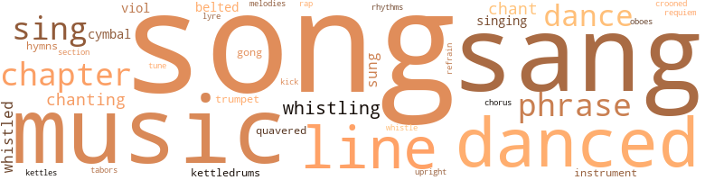
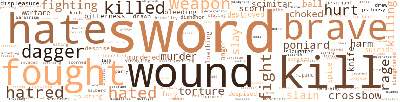
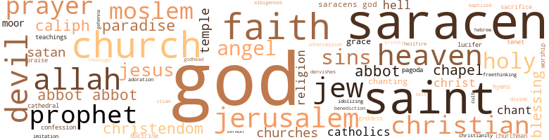

Saracen Blade (The), by Yerby, Frank (1952)
156 music-related terms matched in this text.
Most frequent terms in this topic: danced (12); music (12); sang (12); songs (10); Chapter (8)
belt_out.v.01
Definition: sing loudly and forcefully
| word | sentence |
|---|---|
| belted | The tunic ^ yvas cut short and belted , the panta - loons were skin tight , and joined the hose so imperceptibly that they seemed to be one garment , except that they differed in color . |
| belted | Nor did Pietro allow it to hang loose as the commonality did , but belted it like a young noble with a wide leathern belt , gold-buckled , and laced with many a curious design . |
| belted | Under his tunic Pietro caught the glint of chain mail , and his waist was belted . |
chant.n.01
Definition: a repetitive song in which as many syllables as necessary are assigned to a single tone
| word | sentence |
|---|---|
| chant | The priests fell into triple lines at the head of the procession , and led it toward Saint Peter 's , with uplifted crucifixes , the swing of censers and the deep-voiced chant of a solemn mass . |
| chant | It was intensely moving : the barefoot priests moving slowly ahead , chanting , the drums still now , the horns mute ; just the chant of the priests and the slow clipclopping of the horses ' hooves on the stones and the tinkle of the coins as Frederick 's chamberlains scattered largesse to the crowd . |
| chant | Frederick , clad once more in the Imperial robes , striding through the silver gate into St. Peter 's , the cardinals meeting him there with chant and prayer ; halting now before Peter 's tomb to do reverence , anointed by a cardinal before St. Maurice 's . |
chapter.n.01
Definition: a subdivision of a written work; usually numbered and titled
| word | sentence |
|---|---|
| Chapter | Chapter Thirteen Pietro rode slowly along the banks of the Volturno . |
| Chapter | " I wonder who he is . . . . " Chapter hour It rained all that fall and into the winter . |
| Chapter | Chapter Five The castle at Montrose was old-fashioned . |
| Chapter | Chapter Seven . } |
| Chapter | Chapter Nine What had lain between him and the House of Siniscola was far from finished . |
| Chapter | \* * y. ' Chapter Ten What was between them now , was a quiet thing . |
| Chapter | Chapter Eleven It was a full year later before Pietro saw the slave girl Zenobia again . |
| Chapter | Chapter Two Pietro leaned forward in the saddle . |
chorus.n.01
Definition: any utterance produced simultaneously by a group
| word | sentence |
|---|---|
| chorus | Pietro wondered how he felt now , checked so long by this same Papacy from the receiving of his rightful heritage , honored of the prelates now , hearing the thunderous chorus : " To Frederick ever glorious , of the Romans the unconquered Emperor , be life and victory ! " |
cornet.n.01
Definition: a brass musical instrument with a brilliant tone; has a narrow tube and a flared bell and is played by means of valves
| word | sentence |
|---|---|
| trumpet | ... The trumpet blared again . |
| trumpet | Pietro heard the blare of his trumpet and went down to let him in . |
croon.v.01
Definition: sing softly
| word | sentence |
|---|---|
| crooned | " Oh , the poor little fellow ! " he crooned . |
cymbal.n.01
Definition: a percussion instrument consisting of a concave brass disk; makes a loud crashing sound when hit with a drumstick or when two are struck together
| word | sentence |
|---|---|
| cymbal | Before them marched Frederick 's orchestra , some twenty Negro boys , clad in the most vivid scarlet and blasting away with horn and drum and cymbal . |
| cymbals | They rolled the balls beneath their feet this way and that , always in perfect time to the music , striking their cymbals , and whirling as though they stood on solid ground . |
| cymbals | Then cymbals clashed and the trumpets brayed again , and Sire Hugue , the seneschal , appeared in brave livery waving a white wand like a field marshal leading a train of servants which stretched all the way across the bailey to the cook house . |
dance.n.01
Definition: an artistic form of nonverbal communication
| word | sentence |
|---|---|
| dance | Pietro heard the horse dance as he mounted . |
| dances | He did n't , i know these French dances , so he kept still and watched them for a while . |
| dance | Gautier asked , never taking his eyes off Pietro 's wild dance . |
| dance | Every step in the rest of the coronation ceremonies , from now on , was like a dance : beautifully ordered and precise . |
| dance | He got to his feet , and hung there until the palm trees stopped their slow and stately dance before his eyes . |
dance.v.03
Definition: skip, leap, or move up and down or sideways
| word | sentence |
|---|---|
| dance | " We , my Lord , " a great thewed fellow told him , " will dance with joy around any gibbet upon which you hang Sire Enzio ! |
| danced | The thunder ; of male voices rose up to heaven , and above them the bright pennants ; flying , and the sunlight glinting on steel and , in the lodges , upon silk and £ gold and pearl and fair flesh and the women sang too now , their voices ' high and clear and sweet and the horses danced , curvetting under their masters ' hands as they passed some maid fairer than the rest ; and the maids standing now , modesty forgotten , shrieked with excitement as they hurled down kerchiefs , girdles , stockings , hair ribbons to the knight of their choice under the approving eyes of their sires . . . . |
| dance | " Come , dance with your lady --- and then with me ! " |
| danced | Pietro got up and danced " Drop the Ring " with Toinette ; and after that r he danced the " Dance of the Chaplet " with the tall blonde , which proved an agreeable surprise , because at the end each knight was supposed to kiss . |
| danced | Pietro got up and danced " Drop the Ring " with Toinette ; and after that r he danced the " Dance of the Chaplet " with the tall blonde , which proved an agreeable surprise , because at the end each knight was supposed to kiss . |
| danced | Thereafter he avoided the fair Yvette , and danced an intricate galliard with his bride . |
| danced | So he danced the next set --- a violent tourdion --- with Yvette . |
| danced | He danced in and out amid all those flying hooves , and each time he cracked the animals across the forelegs or hindlegs , as the occasion presented , with a wooden ax . |
| danced | Inside of him a legion of devils danced and howled . |
| danced | They rode over to where the King 's great oriflamme , that mighty scarlet yj banner of samite , danced in the breeze . |
| danced | Then they danced again , briefly , as the rider dismounted . |
| danced | The fireglow danced on Frederick 's cheeks in that moment , long as death itself , that he stared at the burning logs . |
| danced | ; that seemed more like wisps of vapor than like cloth , came out and danced . |
| danced | And this time the slave girls danced naked , clad only in ropes of many colored beads . |
gong.n.01
Definition: a percussion instrument consisting of a metal plate that is struck with a softheaded drumstick
| word | sentence |
|---|---|
| gong | " You 're right , " Frederick said , and walked over to the mantel to strike a brazen gong . |
| gongs | Brass and bronze works , including deep-toned gongs , and the less unusual jewels and golden and silver ornaments . . . . " Thou hast done well , my son , " Ahmad said , but his voice was tight and strained . |
hymn.n.01
Definition: a song of praise (to God or to a saint or to a nation)
| word | sentence |
|---|---|
| hymns | r to-as I will humbly and diligently try to learn to love a maid who left her S good home and doting father to follow a mad shepherd across the wide sea , Thinking to subdue with hymns brave men and warriors who love God as - much as we though they call Him by another name . . . . " " Bravo ! " |
| hymns | He could even hear faintly the martial music , and the deep voiced hymns of the German knights and the pilgrims . |
intonation.n.03
Definition: the act of singing in a monotonous tone
| word | sentence |
|---|---|
| chanting | The smell of incense and the chanting of the cardinals , and Frederick advancing now , seeming almost godlike in his robes and bearing . |
| chanting | The deep-voiced chanting of the requiem mass . |
kettle.n.04
Definition: a large hemispherical brass or copper percussion instrument with a drumhead that can be tuned by adjusting the tension on it
| word | sentence |
|---|---|
| kettles | They had boiled the crushed men-at-arms alive with great kettles of scalding water and molten pitch flung down upon them as they scrambled to escape the overturned bellfroi --- greatly increasing Count Alessandro 's fury . |
| kettledrums | Behind the Negroes came a corps of riders , beating on silver kettledrums , and guards in light armor with cloaks of gold and black , mounted on horses > too beautiful to believe . |
| kettledrums | The kettledrums sounded . |
kick.v.04
Definition: kick a leg up
| word | sentence |
|---|---|
| kick | He did n't think about it too much , anyway ; it made precious little difference to a villein whether a fief was held by Italian , Norman or German ; the kicks and cuffs he got daily remained the same --- except , maybe , the Germans could kick harder , being bigger and stronger . |
lyre.n.01
Definition: a harp used by ancient Greeks for accompaniment
| word | sentence |
|---|---|
| lyre | Some of the courtiers strummed qitors or lutes as they rode ; others played the viol , or plucked at the lyre . |
music.n.01
Definition: an artistic form of auditory communication incorporating instrumental or vocal tones in a structured and continuous manner
| word | sentence |
|---|---|
| music | The ospreys hung over the white water and screamed , and the sound of them was like music , harsh , discordant --- but the right music , the real , the fitting --- part of this , part of the wildness of it . |
| music | The ospreys hung over the white water and screamed , and the sound of them was like music , harsh , discordant --- but the right music , the real , the fitting --- part of this , part of the wildness of it . |
| music | There was music there , and laughter and dancing , as the hawsers were cast off . |
| music | The sun was going down behind the trees and all the air was filled with light , and music and laughter . |
| music | They rolled the balls beneath their feet this way and that , always in perfect time to the music , striking their cymbals , and whirling as though they stood on solid ground . |
| music | " In the name of the merciful and compassionate God , " he recited , rolling £ the gutturals off his own tongue in music and in thunder , " O thou who S ' art enwrapped ! |
| music | In the army of Our Lord , we know not fatigue ; and the screams of the traitors against our faith are as music to our ears . |
| music | He sang often now in the wild Arabic triads , which to Western ears sounded but little like music . |
| music | It led him past all the quiet old towns whose names were bass music : Aix , Koblenz , Frankfurt , Wurzburg , Niimberg , Miinchen , Innsbruck --- then upward into the mountains through the Brenner Pass . |
| music | He bent over the little parchment , and began writing in his beautiful minuscule , the sweet Tuscan flowing from his pen in music and poetry , so that reading over his shoulder Ruffio sighed : " Ay ! |
| music | Then , that other time , our coming together was beautiful and natural and right because what we had was a thing of total loveliness of our minds our dreams of our souls ' music so that what we wanted was that not even the walls of flesh could separate us any longer that our need of belonging to each other be fulfilled that there be no longer two lovers but one commingled blood and breath and flesh and s fire and spirit a new thing upon the earth a new entity --- us . . . . |
| music | He could even hear faintly the martial music , and the deep voiced hymns of the German knights and the pilgrims . |
musical_instrument.n.01
Definition: any of various devices or contrivances that can be used to produce musical tones or sounds
| word | sentence |
|---|---|
| instruments | No instruments of torture . |
| instrument | " Additionally , I begged of my liege lord , the Emperor , that Enzio and Andrea be given a fief to compensate them in some measure for their disasters --- disasters brought upon themselves by their stubbornness , of which I was but the instrument . . . . " Elaine stared at him . |
oboe.n.01
Definition: a slender double-reed instrument; a woodwind with a conical bore and a double-reed mouthpiece
| word | sentence |
|---|---|
| oboes | Already the viols , the flutes , the oboes , the trumpets and the lutes were sounding , and the couples were joining hands for the dancing . |
phrase.n.02
Definition: a short musical passage
| word | sentence |
|---|---|
| phrase | And Frederick , the sixteen year old - Pietro paused , groping for a word --- certainly not king any longer --- then the phrase regulus non rex suggested itself , Strange how Latin adapted itself to the formation of unpleasant thoughts . |
| phrase | ... " A few minutes later , he was bent over the parchment , the goosequill moving rapidly , neatly in the minuscule Gothic script , pausing now and again to amend the King 's errors of construction and even to phrase an expression differently , giving it a more courtly turn . |
| phrase | noble hands , the phrase went . . . . |
| phrase | He turned his mount from the path , riding for a time away from Roccablanca until he came to the place that he always called in his mind in the sweet Sicilian phrase : " the place of the nightingales . " |
| phrase | They did n't pay attention to that little phrase , Pietro --- and there I had them by the backs of their tonsures ! |
| phrase | " There are things I must know - certain questions that have been raised by my Lord of Hellemark --- " ( Strange how easy it was becoming to use that phrase now , how simply , readily the words my Lord came . . . . ) She looked Rudolfo full in the face . |
| phrase | The knights roared out a cheer when Pietro came at last to that phrase . |
| phrases | So great was his anger that Pietro had to slow him down several times in order to get his thunderous oratory into Arabic phrases having anything like an acceptable degree of courtesy . |
rap.n.05
Definition: genre of African-American music of the 1980s and 1990s in which rhyming lyrics are chanted to a musical accompaniment; several forms of rap have emerged
| word | sentence |
|---|---|
| rap | Take your choice , my Lords 5 --- rap upon the door of any house upon any street leading away from the waterfront . |
refrain.n.01
Definition: the part of a song where a soloist is joined by a group of singers
| word | sentence |
|---|---|
| refrain | Through it the name Io , Io , Io ran like a refrain . |
requiem.n.02
Definition: a musical setting for a Mass celebrating the dead
| word | sentence |
|---|---|
| requiem | The deep-voiced chanting of the requiem mass . |
rhythm.n.04
Definition: the arrangement of spoken words alternating stressed and unstressed elements
| word | sentence |
|---|---|
| rhythms | His thoughts inside his mind beat one upon the other in broken rhythms , patternless and wild . |
section.n.01
Definition: a self-contained part of a larger composition (written or musical)
| word | sentence |
|---|---|
| section | He rode rapidly , right up to the wall itself , exposing himself boldly , secure in the knowledge that the women and old men guarding this section with boiling pitch and rocks , would be able to do nothing until he was directly beneath them . |
sing.v.02
Definition: produce tones with the voice
| word | sentence |
|---|---|
| sang | Strange birds sang in the trees , and haunting melodies came from everywhere , nowhere , played by an orchestra of Djinns --- or angels . . . . |
| sang | The birds twittered and sang , and displayed their gorgeous plumage . |
| sang | He sang songs of his own composing to Elaine . |
| sung | A poet himself , under his favor , the brilliance that Innocent had destroyed in Languedoc flowered again in Sicily --- for the first time poems were written , songs were sung in the sweet dialects of Tuscany and the Island . |
| sang | A little way before him , the Emperor rode with Piero della Vigna ; and all around Pietro and behind him a gay company of lords and ladies , all of them mounted on the fine Arab horses that Frederick had bred , laughed and sang . |
| sing | At Bianca 's right hand , the notary , Jacopo da Lentino , strummed his lute , and began to sing : " Madonna , dir vi voglio l'amor m ' a preso . . . . " My Lady , I will tell you how love has taken me . . . . " And me , Pietro thought bitterly , and left me wounded and alone . |
| sung | Do you go often to hear mass sung ? " |
| sing | But I shall take Pietro along to sing me those pretty Sicilian songs , and twang the lute and console me in the absence . |
| sang | Everyone talked at once , laughed , sang and threw coppers to the ? |
| sung | In the morning , they will hear mass sung and then return to the castle for the ceremony of being knighted . |
| sing | Suddenly afl the knights began to sing . |
| sang | The thunder ; of male voices rose up to heaven , and above them the bright pennants ; flying , and the sunlight glinting on steel and , in the lodges , upon silk and £ gold and pearl and fair flesh and the women sang too now , their voices ' high and clear and sweet and the horses danced , curvetting under their masters ' hands as they passed some maid fairer than the rest ; and the maids standing now , modesty forgotten , shrieked with excitement as they hurled down kerchiefs , girdles , stockings , hair ribbons to the knight of their choice under the approving eyes of their sires . . . . |
| sang | Inside him a great and terrible joy sang , bubbled along his blood , beat with the hoofthunder : " I 'm not afraid I 'm not afraid I 'm not afraid ! '' |
| sung | He had romanticized even that base affair with Yvette , dreaming poetry into it ; making songs for her , which he had sung to her right often in their favorite rendezvous . |
| sang | ' clerk lifted up their voices : v , : " Blessed be the Lord my strength , " they sang . |
| sang | He sang often now in the wild Arabic triads , which to Western ears sounded but little like music . |
| sang | But his heart sang , looking at it . |
| sings | They say she sings all day long . . . . " Pietro could feel his limbs loosening under him . |
| sing | taking his lute to sing her songs of love and tenderness . |
| sing | How can a man sing and mouth tender words when his heart is dead ? |
| sing | I could strum the lute for you --- and even sing a little ; I have a certain small voice that others say is not unpleasing . |
| sings | This is very simple very easy and my blood sings within me cries out for me to take this maid , this maid who can only draw out of me the supple strength leaving me brittle so that the next blow ( and there will be other blows --- doubt it not ) will break me . |
| sang | But the wonder of all wonders was the artificial tree of gold and silver , made in exact imitation of the one that Harum al Raschid had owned , in whose glittering , jeweled branches sang birds of the same metals , with ruby eyes , and sweet twittering voices piped into their mechanical bodies by Allah knew what mysterious means . |
singing.n.01
Definition: the act of singing vocal music
| word | sentence |
|---|---|
| singing | He felt like singing . |
| singing | A paradise --- where the fountains sprayed wine and a man had his fill forever of sweetmeats and delicacies , not to mention the beautiful maidens ready and joyously willing to attend to his other needs --- had its advantages over the cold and dull Christian heaven where a soul was supposed to spend eternity singing praises to God . |
| singing | While all the others were watching the singing girl , and listening to her songs of the delights of love , Pietro quickly emptied his tall goblet on the floor beneath the table . |
song.n.01
Definition: a short musical composition with words
| word | sentence |
|---|---|
| songs | He sang songs of his own composing to Elaine . |
| songs | A poet himself , under his favor , the brilliance that Innocent had destroyed in Languedoc flowered again in Sicily --- for the first time poems were written , songs were sung in the sweet dialects of Tuscany and the Island . |
| song | To sweet song and verses , the soft , liquid speech of Sicily . . . . |
| song | Afterwards Rinaldo d'Aquino stood up and commenced his new song : " For pure love I go so joyfully That I have not seen A man who in joy can equal me . . . . " There was more , but Pietro was n't listening any more. : He did n't want to hear of love . |
| songs | Inside him the songs of Palermo died , the sunlight that had entered him through ten happy years turned black . |
| songs | But I shall take Pietro along to sing me those pretty Sicilian songs , and twang the lute and console me in the absence . |
| songs | And the songs of the jon - ; 1 gleurs , one of whom was actually a troubadour from Languedoc , made little sense . |
| song | He kept looking from face to face up there in the lodges , the song of the jongleurs reduced to beedrone in his ears , the blare of the warhorns unheard , the shouting , the challenges , the babble of excited voices . . . Even when he did find a face he recognized , it was not hers . |
| song | Then he looked back in time to see Pietro bending forward ever so slowly until the earth came up and met him and the poplars and the pleasant river and the nightingales ' song and the night that was now a memory drowned in the roaring in his ears , went out in redfire and blood into the dark . |
| songs | He had romanticized even that base affair with Yvette , dreaming poetry into it ; making songs for her , which he had sung to her right often in their favorite rendezvous . |
| song | They regarded so many things as sinful --- hawking on a Sunday , pleasant words exchanged with a fair maid , a song . . . . |
| songs | When he twanged his lute , only sad songs came from it . |
| song | There were , of course , Sicilians in that motley throng , gay and laughing , their very speech a song , their every other word a quip , a jibe , a gambol . |
| songs | taking his lute to sing her songs of love and tenderness . |
| songs | But there was ; no great jongleur there to move the women to tears with their songs of 4 tender love and loss . |
| songs | While all the others were watching the singing girl , and listening to her songs of the delights of love , Pietro quickly emptied his tall goblet on the floor beneath the table . |
tabor.n.01
Definition: a small drum with one head of soft calfskin
| word | sentence |
|---|---|
| tabors | The very heavens throbbed with the drum beats , the blasts of horns , trumpets , tabors . |
tone.v.01
Definition: utter monotonously and repetitively and rhythmically
| word | sentence |
|---|---|
| chant | rise by night except a little --- the half , or deduct therefrom P a little , or add thereto , and chant the Qur ' an chanting ! |
| chanting | rise by night except a little --- the half , or deduct therefrom P a little , or add thereto , and chant the Qur ' an chanting ! |
| chant | ' A At the end of the row , a robed priest opened his book and began to chant . |
| chanting | While the lesser folk were being entertained by a dancing bear , some jugglers and three dancers who performed most grossly , the great Norman Irouvere , Maltre Raymond , accompanied by a harp player of real skill , entertained the nobles , chanting the sonorous lines of the Chanson de Troye , making the ladies weep as he described the fate of Queen Hecuba , and the wanderings of Sire Ulysses , and the faithfulness of Dame Penelope . . . . |
| chanting | Then the jongleurs twanging their lutes and chanting . |
tune.n.01
Definition: a succession of notes forming a distinctive sequence
| word | sentence |
|---|---|
| melodies | Strange birds sang in the trees , and haunting melodies came from everywhere , nowhere , played by an orchestra of Djinns --- or angels . . . . |
| line | Squires led his snow white Arabian stallion , and the three equally snowy mares that Frederick had given him in order to establish a line of fine horses on his fief . |
| line | Pietro had mounted another horse , the great black stallion , Amir , son of a long line of stallions by that name that he had bred . |
| tune | He was on the point of rising from the table when the Emperor clapped his hands and the orchestra of blacks began a gay tune . |
| line | He stopped still , lowered his waraxe , and hung there , staring into those dark eyes that were his own eyes , into that young face that line for line , feature for feature , coloring , everything , reflected his own face like a mirror . |
| lines | To kill his squire would be to make public admission that his sister had stooped to unbelievable baseness ; for while the nobles of thirteenth century Italy could forgive - folly , never for an instant would they countenance the crossing of the hard drawn lines of birth and privilege . |
| line | Turning , Pietro saw the six marshals , led , of course , by Count Alessandro with Baron Rudolph next in line . |
| line | " I do n't like this line of talk , Io , " Enzio growled . |
| line | All along that mile-long line . |
| line | Behind him the long line of the caravan stretched out of sight over the dunes . |
| lines | In the long lines of stables hard by the wall , the Baron 's horses stamped their shod feet and neighed . |
upright.n.02
Definition: a piano with a vertical sounding board
| word | sentence |
|---|---|
| upright | He sat bolt upright in the vast marble bath . |
viol.n.01
Definition: any of a family of bowed stringed instruments that preceded the violin family
| word | sentence |
|---|---|
| viol | Some of the courtiers strummed qitors or lutes as they rode ; others played the viol , or plucked at the lyre . |
| viols | And now that Frederick of Hohenstaufen has , with the help of our own great King , been elevated over the Welf . . . . " He did not finish the sentence , for at that moment the viols and flutes sounded , and Sire Hugue came in with the swan , spread out as though fi were alive and swimming , its beak gilt , its body silvered , resting on a mass of blue tinted pastry to represent the water , and little banners all about it . |
| viols | Already the viols , the flutes , the oboes , the trumpets and the lutes were sounding , and the couples were joining hands for the dancing . |
warble.v.01
Definition: sing or play with trills, alternating with the half note above or below
| word | sentence |
|---|---|
| quavered | " My Lord , " he quavered ; " I did not know --- I --- he forced me at sword 's point . . . . " " Have no fear , Ruffio , " Pietro said , almost gently . |
| quavered | " Yes , my Lord , " they quavered . |
whistle.n.01
Definition: the sound made by something moving rapidly or by steam coming out of a small aperture
| word | sentence |
|---|---|
| whistling | The whistling of the arrows stopped . |
whistle.v.01
Definition: make whistling sounds
| word | sentence |
|---|---|
| whistling | She came up behind Elaine very quickly moving surely , quietly , well , and caught her wrist just before she could bring that blade whistling downward . |
| whistled | The crossbow quarrels whistled . |
| whistled | That business of rolling sidewise along the horse 's flank so that he presented no target and the German 's lance had whistled upon emptiness , the force of the missed blow throwing him off balance so badly that Pietro had caught him squarely in the middle unprotected by his shield and lifted ' him from the high saddle on lance point , his mail pierced , dying . |
| whistling | He bent to pick up the falcon , but there was a whistling noise through the leaves and a great boarspear stood quivering in the earth , inches from his outstretched hands . |
| whistled | Arrows whistled down in clouds upon the tents . |
| whistle | , There were the sounds of the water , and the whistle of the arrows . |
| whistled | Another arrow whistled through the tent . |
| whistling | By the arrows whistling from the dikes . |
| whistling | He was walking in the garden outside the men 's quarters of the palace , when he heard the whistling crack of a whiplash , and after that , a woman 's scream . |
| whistling | He talked at length about ivory carving , and jade work , and spices , and medicines and magic , and of the wondrous bows of the Mongolian horsemen of the steppes , of which to his own delight , he had been able to obtain samples --- together with their whistling arrows and other oddities . . . . |
whistle.v.05
Definition: make a whining, ringing, or whistling sound
| word | sentence |
|---|---|
| sang | All the countryside sang her beauty ; priest and vassal alike urged her to wed . |
803 violence-related terms matched in this text.
Most frequent terms in this topic: sword (55); kill (32); wounds (31); fought (30); brave (30)
abhor.v.01
Definition: find repugnant
| word | sentence |
|---|---|
| loathe | A reminder of physical intimacy with him I loathe V. would be like a brand upon her forehead . . . . " " I see . |
abhorrence.n.01
Definition: hate coupled with disgust
| word | sentence |
|---|---|
| loathing | For loathing . |
| loathing | There was no loathing there - ; no look of hopeless compliance even ; but --- sweet , blue eyes of God ! |
| loathing | With a hatred turned in upon itself , a transferral to her i own person of the loathing she must have felt for those who abused her . |
| loathing | The word shuddered up from the depths of an unutterable loathing . |
| loathing | An end to terrible hungers and black doubts . . . ( An end to looking into eyes filled with loathing , an end to hateful words and shrill screeching , an end even to love that was the twin of hatred , an end . . . . ) It was flight . |
| detestation | Yet there was his hatred of al Kamil , and his utter detestation of the treaty that was to be concluded between Frederick and ffie Caliph tomorrow . |
abrasion.n.01
Definition: an abraded area where the skin is torn or worn off
| word | sentence |
|---|---|
| scratch | In three minutes it was over : Pietro leaned upon his staff , panting and triumphant without so much as a scratch . |
| scratch | I 've seen him do this dozens of times against the squires and sergeants and never get a scratch . " |
| Scratches | Scratches mostly . |
| scratches | The little stones had made scratches all over her face . |
| scratch | " It was only a scratch --- though I 'm sorry I could not £ see to do better . " |
aggravation.n.02
Definition: unfriendly behavior that causes anger or resentment
| word | sentence |
|---|---|
| provocation | Yet the source of the provocation was not the true Albigensians , but the Pope had no way of knowing that . |
anger.n.01
Definition: a strong emotion; a feeling that is oriented toward some real or supposed grievance
| word | sentence |
|---|---|
| anger | Pietro saw his face grow red with sudden anger . |
| anger | It was characteristic of Elaine that she made no attempt to deny her words , swearing that she had lied out of anger in order to wound him . |
| anger | Even in anger he had ■ ■ ' 2 descended to no real discourtesy --- except perhaps when he took her wrists . |
| anger | Pietro felt the little flames of anger running along his veins . |
| anger | No longer in anger . |
| anger | So great was his anger that Pietro had to slow him down several times in order to get his thunderous oratory into Arabic phrases having anything like an acceptable degree of courtesy . |
animosity.n.01
Definition: a feeling of ill will arousing active hostility
| word | sentence |
|---|---|
| animosities | Having married Paoli for his wealth she found , to her great surprise , that he was so gentle and good --- never in all their years together having even cuffed her once , a great rarity among the peasants to whom wifebeating served as a safety valve to let off their pent-up animosities toward their oppressors --- that she had come finally to love him , despite his ugliness . |
annoyance.n.02
Definition: anger produced by some annoying irritation
| word | sentence |
|---|---|
| vexation | To his great vexation , his pelisson was not edged with fur . |
attack.v.01
Definition: launch an attack or assault on; begin hostilities or start warfare with
| word | sentence |
|---|---|
| assailed | ... " • As he spoke , a vile stench assailed their nostrils . '' |
attack.v.02
Definition: attack in speech or writing
| word | sentence |
|---|---|
| attacking | " The rest you know , " he said ; " except perhaps that His Holiness ' troops are attacking me now in Sicily . |
battle.v.01
Definition: battle or contend against in or as if in a battle
| word | sentence |
|---|---|
| battled | A legion of fiends battled the angels of God for his soul . |
besiege.v.01
Definition: surround so as to force to give up
| word | sentence |
|---|---|
| besieged | They rode in a great circle about Rezzi until they came to a quiet sector , guarded by the Count 's men at arms to prevent the entry of food or supplies into the besieged town . |
| besieged | You want us besieged here in Hellemark ? " |
| besieged | It would display your bravery beautifully for you to vanquish so huge and powerful a churl as me , especially in defense of that same Count Siniscola who murdered your own good uncle Liepold , took Rocca Acerra from your father , besieged you here in Hellemark for so long that the confinement and poor food cost your own mother , the gentle lady Brigarde , her life . . . _ r " My mother died in childbirth ! " |
| besiege | " If it 's his own fief , why should he besiege it ? |
bitchery.n.01
Definition: aggressive remarks and behavior like that of a spiteful malicious woman
| word | sentence |
|---|---|
| bitchery | The sickness inside him was black bile and nausea , the thing he had dreamed of for so long was reduced to this : a tavern brawl between two women whose high birth and great station in no wise prevented their behaving with precisely the same female felinity of any tavern wench , or proving the essential democracy of fine bitchery , " You need n't hold me , love , " Io laughed . |
bleeding.n.01
Definition: the flow of blood from a ruptured blood vessel
| word | sentence |
|---|---|
| bleeding | When at last he lay helpless upon the earth , he 'd reach and bring it up to the place an inch above his left ear , then in ' ; and downward quickly so that the great vein whose bleeding could not be stopped by the most cunning leech on earth would be severed . |
| bleedings | Afterwards , when he had really begun to mend --- when Gautier had sent away the leech and the bleedings had stopped --- they talked . |
| bleeding | Bandages would stop that bleeding and if he escaped infection he would live . |
| Bleeding | Bleeding , dying , Roget of Saint Marcel had spoken with strength and authority of those things closest to his heart . |
| bleeding | Now when I have become a Lord , and achieved my wealth , my , / i honors , and know finally that Io is lost to me , time is emptiness ... It h so now , but there is in it now the quality of acceptance in which the hurt grows dull , the wounds flesh themselves again with scars --- tender and sore , yes , but better than the ache and the bleeding . |
blister.v.02
Definition: subject to harsh criticism
| word | sentence |
|---|---|
| scalded | His hands tingled , felt scalded . |
bloodshed.n.01
Definition: the shedding of blood resulting in murder
| word | sentence |
|---|---|
| bloodshed | " I 'll have no bloodshed . |
| bloodshed | It was a revolutionary doctrine that Frederick II preached that day : the expansion of society from insular clans --- eternally warring , plunging the land into : bloodshed and anarchy --- into nations , secure and serene in their sovereignty . |
| bloodshed | But Pietro had had enough of bloodshed . |
boot.v.01
Definition: kick; give a boot to
| word | sentence |
|---|---|
| booted | Then he saw a messenger , booted and spurred , being led into the Emperor 's presence . |
brutality.n.02
Definition: a brutal barbarous savage act
| word | sentence |
|---|---|
| barbarism | Such barbarism seemed to Pietro unworthy of so great an Emperor . |
| barbarism | But then Pietro was unusually sensitive about barbarism . |
butcher.v.01
Definition: kill (animals) usually for food consumption
| word | sentence |
|---|---|
| slaughtered | In the end , Guy de Montfort used a device that the crusaders had found infallible : he brought fBrth a herd of sheep which were to be slaughtered to feed the army , and placed knives in the hands of the suspected heretics . |
| slaughtered | How we were slaughtered ! |
| slaughtered | Count Alessandro slaughtered them like sheep . |
| butchered | Far less than the seventy thousand Moslems butchered at Jerusalem 's first fall . |
contemn.v.01
Definition: look down on with disdain
| word | sentence |
|---|---|
| Scorning | She has always been so : Scorning me at the first with bitter words --- then saving my life . |
| despised | Knights despised archers . |
| scorn | Still Io loved him and that other maid had turned her back upon him in bitter scorn . |
| scorn | He could give a villein a verbal message --- which Count Alessandro would laugh to scorn with conviction and authority . |
| despise | For if you permitted yourself that luxury you could only despise yourself as I despise you ! " |
| despise | For if you permitted yourself that luxury you could only despise yourself as I despise you ! " |
| scorn | " Would you then , rather than practice such a small deceit , return to Montrose and have every envious dame for miles around point the finger of scorn at Toinette ? |
| scorn | " Will people scorn you and Gautier --- because of me ? " t ' p : - : mYes , " Baron Henri said . |
| despised | We have overladen them with gold and silver in the name of Our Lord who despised wealth , held neither lands nor gold . |
| despises | She is woman , all woman , and can love this child of her womb though it was begotten of the man she despises . |
| scorned | Each time I have seen her , she has openly , or covertly scorned me , always on the score of my humble birth . |
| scorn | Yet , I think now that her scorn is lessening . |
| scorned | A maid , who , additionally , scorned him with the bitterest words on > three of those five occasions . . . . " T ; " And the other two ? " |
| scorn | He might refuse the humil * iating parts of the ceremony with scorn , or he might simply ignore their implications , counting such petty matters beneath him . |
| despised | He 'd always despised doll-like women . |
| scorn | Not - yi even your scorn of me , your bitter words , could shake it . |
| despised | Instead , you honored them , heaped knightly courtesies upon them , forced them to receive from a serf 's son , the subtlest of all defeats --- the a " crudest of all tortures --- that of being outdone in chivalry by one whom they had despised , that of being taught a lesson in noblesse oblige --- by one who had no true claim to nobility . . . ' ? |
| despise | I should despise you • ; * IS being of peasant blood . |
| scorn | But they have lied and cheated , attempted to seize our Holy Places --- as thou wert trying --- so we have cast upon them burdens : bells to call down upon them the scorn of the faithful , that ridiculous manner of riding to remind them of their lowly estate among He looked at Pietro , and smiled . |
craze.n.02
Definition: state of violent mental agitation
| word | sentence |
|---|---|
| frenzy | They had been whipped into battle frenzy by the sight of the " Holy Lance " that had pierced the side of Jesus , and the sudden appearance , clad in white , of the three Holy Martyrs , St. Maurice , St. Theodore , and St. George . |
crossbow.n.01
Definition: a bow fixed transversely on a wooden stock grooved to direct the arrow (quarrel)
| word | sentence |
|---|---|
| crossbow | They snatched off their leather caps and bowed to her as though she were a lady , and stood at respectful attention while Donati showed her the vast quantities of swords , lance heads , crossbow bolts and helmets and shields that he had made for the Baron . |
| crossbow | He put his foot in the stirrup of the arbalist , and began to wind the bow into the cocked position with the two-handed winch .2 It was hard work for a boy as slight as he , but finally he had the great crossbow cocked and dropped the short steel tipped arrow , called a quarrel , into the slot . |
| crossbows | There were also catapults , huge mounted crossbows , shooting iron - tipped arrows greater than a knight 's lance into the city . |
| crossbow | The crossbow quarrels whistled . |
| crossbow | Pietro carried a boarspear , a weapon which even baseborn huntsmen were allowed to use , and a light crossbow of the kind usually used in J fowling --- much less powerful than the great arbalist , but permitting a certain rapidity of fire , since he could cock it with his hands --- its wooden bovv requiring no winch . |
| crossbow | ... " And Count Foix , Raymond Roger , did even more terrible things : be drove the abbot and the monks from Pamiers ; fed his horses from oats placed upon the altar ; had his men at arms grind grain with the arms and legs of crucifixes as pestles , and used the image of Our Blessed Lord upon ; ; the cross as a target for crossbow practice ! |
| crossbow | The jingle of the silver bells on his palfrey 's trappings roused the marsh birds almost at once ; this time they were not herons but fast flying ducks , shooting upward like bolts from a crossbow so that they were already black dots flying wedge-shaped before Pietro could unhood Caesar and fling him into the air . |
| crossbow | Whoever had tried to kill him could put another lance or a crossbow bolt through his back with ease before he had gained two yards . . . . |
| crossbows | With each man were two helpers , who had no other duty but to wind the winches of the crossbows and pass a newly cocked weapon to the bowsman as soon as he had discharged his piece . ' |
| crossbow | Thus did Pietro overcome the handicap of the crossbow 's slow rate of fire . |
| crossbows | She could hear the quarrels whine from the crossbows . |
| crossbows | Because his mind worked in dirty , unknightly ways . . . like having shifts of foot to reload the crossbows and pass them to the archers , so that instead of riding the clumsy arbalisters down as usual , there was not one second that we were n't under fire . |
| crossbow | Their infantry , the harbiyah , were better armed , and better disciplined than the European foot ; the ramiyah or archers , used the crossbow but little . |
crucify.v.01
Definition: kill by nailing onto a cross
| word | sentence |
|---|---|
| crucifying | V : Or when the hammers thudded against the nails they were driving through the hands and feet of the ones they were crucifying upside down , on the olive trees . |
| crucified | Men impaled upon stakes , crucified upside down , ^ dragged to death by wild horses --- drawn and quartered . |
dagger.n.01
Definition: a short knife with a pointed blade used for piercing or stabbing
| word | sentence |
|---|---|
| daggers | Two daggers . |
| daggers | The young man had broken from the crowd and was racing toward Frederick 's horse , the two daggers ready in his hand . |
| dagger | Waldo had his own dagger out , lifted . |
| dagger | Waldo lowered the dagger , and smiled grimly . |
| dagger | He was lost to sight and sound and even when Elaine lifted the dagger to the highest peak of the arc he did n't know it . |
| dagger | " Enzio turned her over to his men --- that they might have sport of her --- I --- I do n't know yet where she got that dagger from . . . Pietro stared at her . |
| daggers | Instantly he found twenty daggers , swords , butcher knives and scythe blades pointed at his chest . |
| dagger | Rudolph attacked the roast pig manfully with his dagger , but Alessandro ate daintily , hardly greasing his lips and barely soiling his fingers . |
| daggers | Then four heralds in black and gold and scarlet , spangled with gilt so that Pietro 's eyes hurt from the glare of their splendor , and behind them came a mounted mountebank , counterfeiting a knight , tossing a steady stream of swords and razor sharp daggers into the air and catching them as they fell always by the hilt , with his bare hands whirling them up again so fast that it seemed that he spun silver hoops of light through the sunwashed air . |
| dagger | last night with only a dagger against two great churls with cudgels . |
| daggers | Two low clowns ^ of minstrels performed before the table , climbing a pole balanced on the - w forehead of a third , juggling apples on the points of daggers , eating 4 - fire . . . . ' " V ? |
| dagger | Baron Henri stood up , flourishing a dagger . |
| dagger | Pietro proved this by hacking off a three days ' growth of beard with iL , < And a sword that was exactly like every other sword except that it was so - short that it almost seemed a dagger , and so light that when Gautier hefted it he could n't feel its weight at all . |
| dagger | Then he loosened his dagger in its sheath and stood there , waiting . |
| dagger | His hand came away from the hilt of his dagger . |
| dagger | The boy straightened , drawing his dagger from the sheath . |
| dagger | He looked down at the dagger in his hand . |
| dagger | A dagger . |
| dagger | He had the dagger out and was crouching , ready to spring , when he saw that the man had a rope coiled about his shoulders . |
| dagger | At Enzio 's belt swung a dagger with a blade of the finest steel . |
| dagger | She thought him dead --- and found my dagger . |
| dagger | Pietro had even heard Isaac say that Frederick 's chances of reaching manhood without being cut down by an assassin 's dagger were slim indeed . |
| daggers | After the most casual inspection had revealed the fact that his retinue rode without armor , and was armed only with daggers , the sergeant at arms sent word to his lady without even bothering to ask Pietro 's name . |
| dagger | Pietro stared at the dagger . |
| dagger | He heard , far off and faint , the clatter that the dagger made , when it struck the floor . |
| dagger | His thin , brown hand rested upon the hilt of a curved Saracen scimitar , and a dagger was thrust in his belt . |
| dagger | He had his curved dagger out before he even thought about the danger of interfering . |
| dagger | But you did n't attack an Arab swordsman with a dagger , not even an indifferent swordsman --- which Harum was not , being , actually , a past master of his curved , flexible blade . |
| daggers | He would have to throw himself upon Abdul unarmed , and try to take the daggers from him . |
defy.v.01
Definition: resist or confront with resistance
| word | sentence |
|---|---|
| withstand | Of course , he 's trying valiantly to follow in Innocent 's footsteps and demand everything that wily old soldier of God tried to get out of me ; but he simply has n't the strength of character to withstand me . . . . " Herman of Salza , the Grand Master of my Teutonic Knights is in Rome now , preparing everything . |
desecrate.v.01
Definition: violate the sacred character of a place or language
| word | sentence |
|---|---|
| desecrate | Perhaps they ^ felt it no sin to desecrate the churches of schismatics . . . . " s J$ jP : Gautier made no attempt to halt him now . |
| desecrate | ; They dared not put his name , or the place of his birth , lest the crusaders desecrate his grave . |
| profane | I think that you profane it , Lady Elaine --- by pride , by cruelty , by hate . |
destroy.v.04
Definition: put (an animal) to death
| word | sentence |
|---|---|
| destroyed | ... I , he thought sadly , put to such a test would have been destroyed by it . |
| destroyed | You destroyed the one agency upon earth that had been above those things , that could only exist by staying above them . |
| destroyed | When a Greek captive told me our noble French and Venetian and Flemish knights had destroyed the only complete works in existence of these giants , I wept . . . . " I had --- had always revered our religious sisterhoods . |
| destroyed | And the people of Iesi stoned the house of Isaac ben Ibrahim , saying that he had destroyed her with his black arts . |
| destroyed | They destroyed each other . |
| destroyed | Their hatred went back to the day when his fltether , the former Sultan of Damascus , had destroyed the walls of Jerusa - in 1220 , making of it an open city . |
displeasure.n.01
Definition: the feeling of being displeased or annoyed or dissatisfied with someone or something
| word | sentence |
|---|---|
| displeasure | I do n't want him subjected further to anyone 's displeasure . |
| displeasure | Each time he advanced toward her , and bowed , he searched her face for some sign of displeasure . |
| displeasure | Did he really fear incurring Frederick 's displeasure ? |
| displeasure | It must be invulnerable to attack , and yet must contain within the fair comforts that you have indicated for your * villa . . . . " We note , with some displeasure that you say nothing of whether or ' not you have wed the Lady Elaine . |
draw.v.23
Definition: pull (a person) apart with four horses tied to his extremities, so as to execute him
| word | sentence |
|---|---|
| drew | He drew up the wooden bucket and drank . |
| drew | He drew up his men around the walls and cut off every avenue of escape . |
| drawn | " That archer , " Enzio whispered , " his man , planted there by him , so that we might be drawn beyond the walls . . . And Father threw that villain a hundred tarens ! " |
| drawn | Men impaled upon stakes , crucified upside down , ^ dragged to death by wild horses --- drawn and quartered . |
| drew | With his engineers , he drew up the plan for a villa so lovely that , out of pride , he submitted a copy to Frederick . |
| draw | " We command you additionally , to draw up for us a plan of a fortress - castle to be built at Foggia . |
| drawn | I : " Our Lord the Caliph al Kamil , hath all his armies drawn up from Nablus to the sea , completely cutting off the approaches to Jerusalem . |
| drawn | Addition * ally , our Caliph hath drawn up treaties with Mesopotamia , and hath taken much of the lands of Damascus , including Jerusalem , already . |
envy.n.01
Definition: a feeling of grudging admiration and desire to have something that is possessed by another
| word | sentence |
|---|---|
| envy | And when they seem to be --- scratch the surface and you will find envy that the sin was not their own ! " |
ferociousness.n.01
Definition: the trait of extreme cruelty
| word | sentence |
|---|---|
| brutality | It is the greatness of a man that he live beyond his times that he rear himself up tall and proud above ignorance and lust and brutality looking ever toward the day when those things shall be no more and this I thought I had . |
| brutality | In contrast to fraud and brutality , to rapine and fiendish cruelty , to treachery , and adulterous lusts , let them consider Joseph , son of Job . |
ferocity.n.01
Definition: the property of being wild or turbulent
| word | sentence |
|---|---|
| fierceness | Above the veil she wore even while sleeping , they were lovely , now that the fierceness was gone from them . |
| fierceness | Remembering her fire --- even the fierceness with which she had lashed out at her tormentors in the marketplace , it seemed to him that she was allowing herself to be defeated by life . |
fight.n.02
Definition: the act of fighting; any contest or struggle
| word | sentence |
|---|---|
| fighting | Pietro hated fighting ; killing still induced a sickness within . |
| fighting | Down in the bailey the fighting was over . |
| combat | The young knights put the horses through their • V - paces and fought a mock combat , using , however , blunted weapons and p ; dealing light blows . |
| fighting | Armed men should serve the state --- the only fighting force should be that of the King , called into service to defend the borders of the kingdom against foreigners . |
| fighting | It was dirty fighting . |
| fighting | ... " " It 's a most unknightly way of fighting , " Sire Toulon said , rubbing his head , " still . . . . " " Consider , " Pietro said . |
| combat | Body glued to body on a hot summer 's night with the sweat of what had resembled mortal combat more than love , lying in the ; lassitude of complete exhaustion --- except that Yvette 's exhaustion was never complete --- and he had known with a reluctance approaching fear that in a * moment or two those devilish hands . . . . . > |
| fighting | There were arms enough and mail enough in some of the mule borne coffers for his twenty knights to take this castle in five minutes of fighting . |
fight.n.05
Definition: a boxing or wrestling match
| word | sentence |
|---|---|
| fight | He held them off , parrying their strokes , too busy to get in a telling blow , knowing how it would end ; then , seeing , at a nod from the captain , two of them break off from the fight and slink once more toward Herman , he cried out : " Beware , Herman of Salza ! |
| fight | • " A brave fight , Sire Laurent , " he said . |
| fights | A mistake only because Elaine has --- although she hates it and fights against it --- this feeling for you . |
| fight | It was a hopeless fight . |
| fight | You know , my Lords , how dearly I love a fight . |
| fight | ; A " You are but one man , " Ruffio said worriedly , " and these varlets of yours f. would be of little help in a fight . |
| fight | Enzio 's men at arms had been too surprised to put up much of a fight . |
fight.v.02
Definition: fight against or resist strongly
| word | sentence |
|---|---|
| fought | But who are these madmen , you fought ? " |
| fought | Andrea fought clear of the falling beast . |
| fought | Afterwards , Pietro had fought in Frederick 's wars , served him as counselor . |
| fought | Their charge led them to within feet of where Pietro fought , so that he saw the young knight 's face . |
| fought | He was the biggest man his son had ever seen , his wild , grey-streaked blond hair and beard flying , his great voice thundering commands everywhere at once ; bleeding from a dozen minor wounds without appearing to notice it yet inspiring his men so that weary , already beaten , all of them wounded , some of them half dead , they fought on like demons . |
| fight | You must fight him , father ! |
| fighting | Today , at nearby Rocca d'Aquilino , there was going to be fighting . |
| fought | My father fought for liberty , and for bread , so that made him a felon to be tortured and hanged . |
| fight | He 'd fight until they had to kill him . |
| fought | The young knights put the horses through their • V - paces and fought a mock combat , using , however , blunted weapons and p ; dealing light blows . |
| fought | But : from the way the maid fought her brothers who had come to rescue her 4 from this vile churl , she did n't find the idea altogether displeasing , it seemed 7 tome . . . . " " The maid came willingly ? " |
| fought | The heretics fought like demons . |
| fight | Gautier loved 4 to fight . |
| fought | Could n't they see that no matter how high and noble the ends for which they fought , they 'd be dirtied by the means used to attain them ? |
| fight | It came to him then that he had always been beaten by the big ones in the past because he had been foolish enough to fight their way . |
| fight | Anything else he could fight , but --- Then he saw their mounts . |
| fought | ■ Rasping , fought against , choked --- ugly . |
| fight | I saw him fight alone against those two . |
| fight | But in bearing it remember that every new fledged knight will sneer at the House of Montrose --- that no guests will come to make merry in your father 's hall , that his declining years must be spent in sorrow and loneliness , because of i ^ tyoul And Gautier --- he 'll have to fight daily to avenge the insults without : : number that will be his lot , brother of a sister shamed . |
| fought | They represented the deeds of a half legendary ancestor --- a Baron Louis , who had fought with Charlemagne , and died with Roland , defending the pass . |
| fight | " It 's not their goodness I fight --- but their $ error and the spread of it . |
| fight | Against it , we do well to fight ! " |
| fight | But if only we could fight without cruelty --- and kill , when killing becomes necessary , without slow bodily torments . |
| fighting | He was even beginning to enjoy fighting . |
| fought | And when they announced that she was indeed in labor and must be carried home the miller offered his cart , but all the men and boys unhitched his mules and fought for the privilege of drawing it to Donati 's humble cottage . |
| fighting | But they had been up since before dawn , fighting throughout the day . |
| fighting | They sat there yawning , blinking , fighting sleep . |
| fighting | Many of her best ; ; fighters were still in Languedoc , fighting the stubborn heretics . |
| fighting | As much as he hated ^ fighting and killing , he was glad suddenly of this war . |
| fought | < ■ It would be fought between great and honorable knights , who respected i - the rules of warfare . |
| defending | It was hard to believe that these men were about the serious business of defending their native land . |
| fought | feThe mountebanks , the jugglers , and still another army of that nefarious " sisterhood without which , apparently , no war could be fought . |
| fight | " The Germans will fight . |
| fighting | He had a poor stomach for fighting or arms otj bloodshed , and he loved his good Uncle --- in fact he could not remember his father and mother at all . |
| fighting | Usually his good armor and fighting skill assured a knight of nothing more serious than a few wounds . |
| fight | " Who teacheth my hands to war and my fingers to fight ! " |
| fought | But the German knights fought until the last . |
| fought | He 'd fought battles against people whom he admired with the awed admiration that the worldly often have for the pure . |
| fought | He 'd fought other battles against the enemies of his King and his adopted nation . |
| fought | " You fought well , Messire Pietro , " he said . |
| fight | Often they do n't die nearly as well as they fight . |
| fight | Believe me , you can fight me without dishonor . . . . " He saw Io looking at him now , and her eyes were glowing . |
| fight | " Nor yet will I fight you , " he laughed . |
| fought | Even the people scrambling for the coins fought each other in silence . |
| fought | " He lifted up his hand and commanded that two thirds of his party fall back ; and came out and fought us man to man with not one man greater in number than we ! |
| fought | I could bear being beaten by overwhelming numbers , but he charged them on pain of death to stay out of it --- He fought me . . . . " Enzio waited . |
| fought | " In exchange for these and other such fair courtesies , I fought your kindred upon the field of battle , at my Emperor 's express command , since they would not submit their grant to him for his examination . |
| fought | Those who escaped fled into Rezzi , where one Donati --- a blond giant of a man utterly without fear and of great nobility , being , people say , a natural son of Baron Orri of Grostete , the former Baron ( Rogliano --- fought off your uncle for weeks . |
| fought | i brother Nicolo , who fought in the siege , fled your uncle 's service rather VI than take part in them . |
| fought | You refrained from torture , You ^ held back more than half of your superior forces and fought them man to man . |
| fought | Old soldiers told me that the way you fought was a master - : • piece of purest cunning . |
| fought | She fought it with all her strength . |
| fight | I 've tried to deny that love --- to fight against it . |
| fought | He had fought so many battles . |
| fighting | He was twenty-six years old and he had been fighting since he was fourteen . |
| fighting | He was very tired of fighting . |
| fighting | They had had enough of fighting . |
| fought | Throughout July they fought ceaselessly . |
| fight | Who spared the conquered of Jerusalem to a man , gave back to them the ransom they paid him , sent peaches and pears and snow to the stricken Richard , Coeur de Lion , his most relentless foe , a charger for Richard to fight upon when his own horse was slain ; who seldom slew , and then only those who had grossly provoked him , offering life even to that Reginald who had taken his own sister prisoner --- killing him finally only when he refused Muhammad honor as a prophet of God . . . . |
| fighting | Without fighting , Frederick the Second had accomplished more than any other crusader in history . |
fury.n.01
Definition: a feeling of intense anger
| word | sentence |
|---|---|
| rage | In rage , swearing she 'd hoped him dead . |
| rage | Strange that my heart is so free of rage . |
| fury | They had boiled the crushed men-at-arms alive with great kettles of scalding water and molten pitch flung down upon them as they scrambled to escape the overturned bellfroi --- greatly increasing Count Alessandro 's fury . |
| fury | He was sick all over , inside and out , death - sick with that kind of fury that can only be healed by killing , that held in , corrodes a man 's guts until they are weaker than water and the heart itself fails within him . |
| rage | V1 ^ But watching Baron Rogliano and Count Siniscola conferring together , X ; Pietro reached a state of desperation greater than his rage at the brothers • . |
| fury | Forty-five minutes later , when Baron Rogliano burst into the rectory in a fury of rage he found Father Antonio alone , reading from an illuminated copy of the Holy Writ . |
| rage | Forty-five minutes later , when Baron Rogliano burst into the rectory in a fury of rage he found Father Antonio alone , reading from an illuminated copy of the Holy Writ . |
| rage | Except that now it was compounded with rage . |
| rage | Cold , merciless rage --- completely murderous . |
| rage | Ever since our great King took the Chateau Gaillard from John of England in 1204 , that wicked monarch has been smoldering with rage . . . . " " He 's waited a long time , " Count de Harvengt said . |
| fury | So great was their fury that he was forced for a time to leave the city . |
| rage | The rage drained out of him . |
| rage | " My Lord of Siniscola , " Pietro said , his voice very low , tight , rage - strained , ugly . |
| rage | ney were too much for him . . . And in Sicily there is no one --- no one with sufficient authority to dare --- pay your ransom --- Your inheritance is I : locked in the Emperor 's own coffers . . . Enzio is wild with rage . . . Oh , • Pietro my dearest . . . . " Her voice drowned in tears . |
| rage | She was seeing again in the fire , her uncle 's face twisted almost out of recognition with rage as he rose in his saddle and slashed the woman across the face and back and arms and shoulders with his whip , his arm rising against the blue sky and falling and the lash biting into the woman 's filthy smock , cutting through it , bringing blood ; and the woman clinging to the stirrups moaning and Count Alessandro slashing at her and she still clinging until at last he spurred his destrier and the great beast bounded off , dragging the woman a full twenty yards until she dropped at last face downward into the dirt and lay there weeping . |
| fury | The presentation of proof of the wrongness of people loved , might inspire only greater fury . |
| rage | But not in rage . |
| rage | The screaming , face-twisted bursts of rage . |
| rage | When there were no bursts of screeching rage , she would not come to him . |
| rage | The rage , he learned , being nothing if not intelligent , though hurled at his defenseless head , was directed actually at herself . |
| rage | He remembered her face twisted with rage , her voice screaming at him , and , quite suddenly it did n't matter any more . |
| rage | Perhaps she is not all wildness and rage . |
| rage | V Pietro could see the rage in Harum 's face . |
| rage | In a fine excess of rage , he had even struck the old man . |
gag.v.06
Definition: cause to retch or choke
| word | sentence |
|---|---|
| chokes | May he feed eternally upon slime and utter foulness and his bowels dissolve within him may he drink brine and blood until his tongue swells and chokes the screams that could in some measure ease his pain . . . Her gaze never wavered from bis face . |
| choked | Weeds choked the causeways now through which the sweet waters had run . |
| choked | But from Arles to Aix , nearly two , for all the roads were choked . |
| choked | i G ' y He left the burning city and came out into the countryside , past the ll | i wells choked with bodies . |
| choked | When they tried to pour some of it down his throat it only choked him . |
| choked | All the roads leading toward Peronne , the point of assembly named by the King , were choked . |
| choked | He was choked with them . |
| choked | Rainaldo and Waldo , Pietro 's squires , devoured the goose , washing it down with many a draught of Ruffio 's good wine ; but Pietro found that the well prepared fowl choked him . |
| choked | I was choked with hate --- of which I repent me £ greatly ! " |
| choked | But they marched to the Church through streets choked with the bodies of their victims ; on the corners they had to circle the carefully piled stacks of severed heads and hands , stepping over the bodies of infants whose heads had been smashed against posts . . . . |
| choked | He knew his choices : to die in the stinking ditches , choked with mud and foul water and silt ; or to die on that lonely little hill , alone and surrounded by his foemen . |
| choked | The guests almost choked with laughter . |
gall.v.02
Definition: irritate or vex
| word | sentence |
|---|---|
| irked | Castle politics irked him . |
grudge.n.01
Definition: a resentment strong enough to justify retaliation
| word | sentence |
|---|---|
| grudge | " Since the boy is not badly hurt , XI hear you no grudge . . . . " Xr % Sire Laurent took the extended hand and kissed it . |
halberd.n.01
Definition: a pike fitted with an ax head
| word | sentence |
|---|---|
| halberd | The Flemish pikemen had caught c King Philip alone and one of them had hooked his halberd in the chain i mail around the King 's throat and dragged him from his horse . |
| halberd | He rolled out of the | | saddle and landed on his feet amid the Flemings , and the little ax cut the shaft of the halberd in half with one blow , and the arm off the footman who - | held it with the next . |
harm.v.01
Definition: cause or do harm to
| word | sentence |
|---|---|
| harmed | Why would you kill a man who had not harmed you ? |
| harm | I will not harm you . |
| harmed | I would n't want the boy harmed because o £ me , " Ricardo said . |
| harm | " Only that it is His Majesty 's wish that you pursue that which is your own , Sire --- in the secure knowledge that every honest knight of France , Burgundy , and Languedoc will spring to arms in your defense , Sire --- should any enemy of yours threaten to harm you . . . . " Frederick raised both clenched fists toward heaven . |
| harm | The good and gentle have no chance against the strong . . . No wonder they clutch at straws : the illusions of hysterical shepherd children , the ravings of men and women , who if they spoke thus of aught save God would be caged , lest they harm themselves and others . |
| harmed | I think that you will lose it finally --- and that part of its loss will be caused by remembering that you gave over to torture a man who never harmed you --- only because he dared do what he could not help doing --- loving the sweetest and best lady who ever drew breath . . . Now wind your horns and call him ! " |
| harm | If Frederick II was the greatest king of Christendom , he , Pietro di Donati , was now the second most powerful man in Europe --- immune to fear and loss of favor , above the reach of the most powerful lords in Italy , no one of whom would Frederick now permit to harm a single hair of his head . . . . " I shudder now , " Frederick was saying , " when I think of the dangers you 've undergone . |
| harm | Yet , I could not harm a child . |
hate.n.01
Definition: the emotion of intense dislike; a feeling of dislike so strong that it demands action
| word | sentence |
|---|---|
| hatred | " Mamluks , " Pietro said tiredly , for the reaction had him now --- never until the hour of his death would he be free of his hatred of killing --- " sent by the Ayyubitcs to slay you und the Sultan . . . . " " Has the Sultan been warned ? " |
| hatred | Calling me the child of the dungheap , marrying me at the Emperor 's command , hating me with black hatred and yet loving me wildly , gloriously , tenderly , between . . . . " I will have the maids prepare a chamber for her , " Elaine said . |
| hate | But I have them not , I am a child of this age and in me is this sickness of cruelty and this very bad kind of pride and hurt vanity and sick hate --- God , God will they never have done with him ? |
| hate | He had been purged of hate . |
| hate | even his love for Io was going to make him betray himself , again ; no fire in the flesh , no hate , no fear would force him to blaspheme against the Godhead within him ; now finally he was simple and uncomplicated and entirely free . . . . |
| hatred | " If Elaine is that maid of the blue eyes and silvery blonde hair and of such loveliness that even her hatred can not distort it --- yes . |
| hatred | Except this hatred was different --- but how , in what manner was it different ? |
| hatred | * So that they become meaningless and no longer an object for hatred . |
| hatred | But the hatred stays . |
| hatred | Until the smooth and lovely flesh that has made them the objects f of desire becomes more loathsome to them than the skin of lepers . . . . ' < ■ And upon that misdirected hatred pile Pelion on Ossa --- hopelessness upon V bate , reasoning that if such things can be done to them , if nightly they • ■ v must submit , to practices for which there are no words in any language £ spoken by man , they must be beyond the reach even of --- God . |
| hatred | To see a young maid , fair to look upon , V who hated her own supple young body with a hatred beyond belief , except that it was there and seeing it you believed it , did something to you . |
| hatred | With a hatred turned in upon itself , a transferral to her i own person of the loathing she must have felt for those who abused her . |
| hatred | But Sire Enzio 's hatred cools easily at the l sight of gold . . . " Good , " Pietro said . |
| hate | Compounded with fear into --- into hate . |
| hatred | And the strangest part about it is , he thought , that this hatred breeds no answering hate . |
| hate | And the strangest part about it is , he thought , that this hatred breeds no answering hate . |
| hatred | This passion without tenderness this nakedness with all the unlovely parts of nakedness showing this thing compounded out of hatred out of revenge against Enzio instead of love for me love v killed tenderness dead this nakedness of desire and I have no alternative . . . . |
| hatred | Ricardo of Siniscola would perhaps give him one , for he bore Pietro no hatred but gratitude rather , bom of that day on which Pietro had aided Iolanthe in saving Rocca d'Aquilino from Andrea 's attack . |
| hate | I think that you profane it , Lady Elaine --- by pride , by cruelty , by hate . |
| hatred | : Her face was grave and still , and the hatred had gone out of her eyes . |
| hate | More than once he pushed a disappointed maid from his quarters --- a fair purse in her hands , to reward her for something that had not occurred --- for unaccountably sudden revulsions would rise up in him and he hated himself with a sick hate that nothing could cure . |
| hate | It had a curious expression : terrible hurt , commingled with hate and savage joy . . . . |
| hate | I was choked with hate --- of which I repent me £ greatly ! " |
| hatred | Again , Pietro wept inside his heart , again I must be wed to a maid who loves me not and this time it is worse than before . . . Antoinette did not " hate me wanted indeed to love me tried to but this one hates me with a hatred cold as death and as merciless ... I was winning little by little I was destroying that hate --- but now , Oh Sweet Infant Babe of Mary ! |
| hate | Again , Pietro wept inside his heart , again I must be wed to a maid who loves me not and this time it is worse than before . . . Antoinette did not " hate me wanted indeed to love me tried to but this one hates me with a hatred cold as death and as merciless ... I was winning little by little I was destroying that hate --- but now , Oh Sweet Infant Babe of Mary ! |
| hatred | Knowing that her hatred for him was neither unmixed nor pure . |
| hatred | But in the morning , the sullen , sick hatred was back in her eyes . |
| hatred | An end to terrible hungers and black doubts . . . ( An end to looking into eyes filled with loathing , an end to hateful words and shrill screeching , an end even to love that was the twin of hatred , an end . . . . ) It was flight . |
| hatred | With the greatness of soul he needed to bring about peace between Elaine and himself ; with the peace of heart and mind to wait and be patient and cherish her into : love untroubled by doubts and fears and irrational hatred . |
| hate | When we shall love truth and hate error , but not the holders of error ; when we shall have no need to hypnotize ourselves further with censer and ritual and ceremony ; when we can gaze upon truth naked and be not blinded ; when we can abandon our most cherished beliefs if they prove false , and look not back upon them with sorrow ; then shall we be free . . . . |
| hatred | Their hatred went back to the day when his fltether , the former Sultan of Damascus , had destroyed the walls of Jerusa - in 1220 , making of it an open city . |
| hatred | This hatred of theirs was all the poisonous because al Kamil was himself of the Ayyubite line . |
| hatred | Yet there was his hatred of al Kamil , and his utter detestation of the treaty that was to be concluded between Frederick and ffie Caliph tomorrow . |
| hatred | The hatred won , but it did not altogether displace his sorrow at what he had to do . |
| hatred | " Malik al Kamil knows of that hatred . |
hate.v.01
Definition: dislike intensely; feel antipathy or aversion towards
| word | sentence |
|---|---|
| hated | Pietro hated fighting ; killing still induced a sickness within . |
| hated | A man , Pietro thought , might speak thus at the prospect of witnessing the humbling of a hated foe . |
| hating | Calling me the child of the dungheap , marrying me at the Emperor 's command , hating me with black hatred and yet loving me wildly , gloriously , tenderly , between . . . . " I will have the maids prepare a chamber for her , " Elaine said . |
| hated | Rainaldo had always hated Elaine . |
| hated | I have always hated this , he thought ; I have condemned my Lord Frederick for not being in all ways beyond his own century . |
| hated | His Holiness hated like the devil to swing over to the house of Hohenstaufen ; but what choice had he ? |
| hated | Pietro hated it with all his heart . |
| hate | Dear God , he mused , why does she hate me so ? |
| hates | A mistake only because Elaine has --- although she hates it and fights against it --- this feeling for you . |
| hating | Io would have , at least , the curious solace of hating her husband . |
| hate | It 's true they hate the church ; but they t ; try to convert Catholics into their way of thinking by their way of life , . |
| hates | • I 'm mad , he thought , mad . . . Io hates him and . . . . |
| hate | To the tenuous fibers of their souls with such layers of filth that they shall never be clean again . . . But --- Dear Mother of God --- why do they hate themselves ? |
| hated | To see a young maid , fair to look upon , V who hated her own supple young body with a hatred beyond belief , except that it was there and seeing it you believed it , did something to you . |
| hated | The desirable has become the hated . |
| hate | I , he thought , would hate to have to defend this one . |
| hate | ... ; - Most men by now would have come to hate Antoinette . |
| hated | He hated everything about his relationship with her . |
| hate | I hate him ! |
| hate | I hate him ! |
| hated | As much as he hated ^ fighting and killing , he was glad suddenly of this war . |
| hated | What had been between himself and Yvette was an ugliness , and he had hated it . |
| hated | That was the part of his studies that he hated , although he was quite good at them . |
| hated | Roccablanca --- the loved , the hated . |
| hates | " She is well --- as well as any lady can be who hates her husband with total passion . |
| hates | Count Alessandro would never have freed a Jew --- since he hates all men of that persuasion with all his heart . |
| hated | All men of Sicily , who before they came , had been able to live in peace in their babel of tongues and races , permitting to each his customs and his ways of seeking God , hated them . |
| hated | But Pietro hated debt . |
| hated | There is something of Circe in her --- if she hated * me it would be better . |
| hated | More than once he pushed a disappointed maid from his quarters --- a fair purse in her hands , to reward her for something that had not occurred --- for unaccountably sudden revulsions would rise up in him and he hated himself with a sick hate that nothing could cure . |
| hate | It 's a delicate thing , my Lord , You could force her to wed me ; but by the same token , you 'd force her also to hate me . |
| hate | But I hate that child , he told himself . |
| hated | He could n't face living with the reminder of a former intimacy with the man he hated playing about his feet . |
| hated | Because of that , he must wed this woman who perhaps hated him --- this woman possibly incapable of opening her heart to love . . . . |
| hate | I bid her , therefore , seek it from the mouths of men and women she knows and trusts --- and then if she can find it in her heart still to hate me , I can do no more . . . . " . |
| hates | She knows now that I was right , and still she hates me . . . . |
| hate | I can believe ^ that you do n't know your own mind --- for now I do n't know my own ; thoughts either ... I should hate you , and I do n't . |
| hate | Again , Pietro wept inside his heart , again I must be wed to a maid who loves me not and this time it is worse than before . . . Antoinette did not " hate me wanted indeed to love me tried to but this one hates me with a hatred cold as death and as merciless ... I was winning little by little I was destroying that hate --- but now , Oh Sweet Infant Babe of Mary ! |
| hates | Again , Pietro wept inside his heart , again I must be wed to a maid who loves me not and this time it is worse than before . . . Antoinette did not " hate me wanted indeed to love me tried to but this one hates me with a hatred cold as death and as merciless ... I was winning little by little I was destroying that hate --- but now , Oh Sweet Infant Babe of Mary ! |
| hated | She had surrendered and she hated that surrender , she hated herself for surrendering . |
| hated | She had surrendered and she hated that surrender , she hated herself for surrendering . |
| hated | She had screamed at him , telling him how she hated him , swearing that he smelled of the ; stable , of the barnyard , of the peasant 's hut . |
| hated | He had no fear of dying ; but he hated the thought of dying in defeat , of having been vanquished by life . |
| hated | Ahmad was one of those Ayyubite Amirs who hated al Kamil with fai.thtir hearts . |
| hates | " Our Caliph is called the Pope , our Sultan , the Emperor ; too much and the two offices are separate which makes for bitter conflict . . . . " " Your Pope , then , it appears , hates your Emperor with all his heart . |
| hate | But Fakhru 'd Din hath won his admiration and his curiosity concerning your Emperor ; besides which --- there are many , and this I can say freely , for only those of mine own persuasion were invited to this nuptial feast --- who hate worse than death that branch of our own blood line that hath betrayed us in many small betrayals until today our Holy City , Jerusalem --- sacred to us as the place of the Prophet 's ascent into heaven --- lies naked and helpless before any really large and determined enemy . |
| hate | Then , once inside I can point out to him the Emperor Frederick whom I know well , and hate equally . . . . " " This makes much sense , " Ahmad growled , " save in one point only --- why should we take the risk of leaving thy mind uncontrolled ? |
| hated | No Jew wanted the man who had protected their lives and property slain , to be replaced by one of the fanatics who hated them . |
hurt.v.04
Definition: cause damage or affect negatively
| word | sentence |
|---|---|
| hurt | He was hurt in his most vulnerable spot : his pride . |
| hurt | " I 'll be first , " she whispered , " Just one hard stroke --- it wo n't even hurt much and it 'll be over very quickly and after that you can put yourself out of reach of Enzio and his torturers for they are very skilled , Pietro , believe me , very , they could wring screams from the throat of a graven image . . . . " ; " No , " Pietro said . |
indignation.n.01
Definition: a feeling of righteous anger
| word | sentence |
|---|---|
| outrages | At Damietta 's fall nearly all the outrages of 1099 had been repeated . |
injury.n.01
Definition: any physical damage to the body caused by violence or accident or fracture etc.
| word | sentence |
|---|---|
| hurt | He was a slave to certain aspects of his nature : his sensitiveness , his unwillingness to give hurt . |
| hurt | But I have them not , I am a child of this age and in me is this sickness of cruelty and this very bad kind of pride and hurt vanity and sick hate --- God , God will they never have done with him ? |
| harm | For God 's sake , Giuliano , go and see --- no harm can come of asking . . . . " " Plenty of harm can come of asking Baron Rudolph anything whatsoever when he does n't feel like being asked , " Giuliano said drily , " up to and including a couple of broken ribs . |
| harm | For God 's sake , Giuliano , go and see --- no harm can come of asking . . . . " " Plenty of harm can come of asking Baron Rudolph anything whatsoever when he does n't feel like being asked , " Giuliano said drily , " up to and including a couple of broken ribs . |
| hurt | Elaine of Siniscola was beautiful --- so beautiful that looking at her hurt . |
| hurt | The whole world was filled with the clang of blades and he was hurt , bad hurt , blood dripping down his arms , so tired that he was unable almost to lift his sword ; then Wolfgang brought his sword down across his shield splitting it , the blade landing high on his shoulder , cutting through the links of the mail into his flesh so that his right arm was useless and he could n't lift his sword . |
| hurt | The hurt inside him did n't have a scar . |
| hurt | That hurt . |
| hurt | One look at the unhealed hurt just behind her eyes and he kjievv how ugly that would have been . |
| hurt | That hurt . |
| harm | Behind those walls , my lords of Siniscola can do much more harm to us than we can do them . |
| hurt | It had a curious expression : terrible hurt , commingled with hate and savage joy . . . . |
| hurt | Now when I have become a Lord , and achieved my wealth , my , / i honors , and know finally that Io is lost to me , time is emptiness ... It h so now , but there is in it now the quality of acceptance in which the hurt grows dull , the wounds flesh themselves again with scars --- tender and sore , yes , but better than the ache and the bleeding . |
| harm | " Please , My Lady --- men have lost their lives by expressing opinions not pleasant to the ear of the gentlefolk who asked them . . . " Rudolfo , you have my pledge that no harm will befall you if you speak freely . |
| harm | You could have done them no > ■ harm had they been blameless . |
| harm | Waldo , and Rainaldo lay in the muddy water holding their heads above the surface , keeping well away from the walls of the tent which were enough usually to stop the arrows or so break their force that they did little harm . |
| hurt | Something like hurt . |
invade.v.01
Definition: march aggressively into another's territory by military force for the purposes of conquest and occupation
| word | sentence |
|---|---|
| invaded | All Italy was upside down , since Otto of Brunswick the gigantic Welf , had invaded the Tuscan patrimonium in the autumn of 1210 , almost exactly a year ago .2 At the moment , Otto was in the province of Calabria in mainland Sicily , the very toe of the Italian boot , making ready to cross over into the Island . |
| invade | ; beggars who upon this gala day were allowed to invade the castle itself . |
| invaded | Know you that Otto of Germany hath invaded France ! |
| invading | " Only , " he said quietly , " that my Lord give me whatever news he can of the invading Franks . " |
jealousy.n.01
Definition: a feeling of jealous envy (especially of a rival)
| word | sentence |
|---|---|
| jealousy | " That I need no longer torment myself with jealousy . |
| jealousy | With --- with jealousy . |
| jealousy | But this I did encounter upon my journey --- a tribe of men so lacking in jealousy that they lent to our guards and drivers their wives for the duration of our stay with them ... It was a wondrous land , far up in the mountains where the snows haunt the earth all year long , and of a chill so fierce that our teeth outpranced my Lord 's dancing girls . . . . " Ahmad 's eyes twinkled . |
joust.v.01
Definition: joust against somebody in a tournament by fighting on horseback
| word | sentence |
|---|---|
| jousted | Every time he jousted with Hans , he was tumbled unceremoniously out of the saddle . |
| jousting | Pietro remembered the first day he 'd tried jousting against the target shield . |
| jousting | And he 'd given offense to Sire Laurent , a Norman - knight bigger than he and scarred all over from years of jousting and war . |
| Jousting | Jousting on horseback against a man who weighed two hundred pounds to his one hundred thirty was foolhardy . |
| joust | He contends that for him to joust against Norman knights , big as they are , is suicide . |
| jousting | / tr.Two lines , a mile and a half long , facing each other across fields fair and pleasant and smooth as any lists for the jousting . |
kick.v.04
Definition: kick a leg up
| word | sentence |
|---|---|
| kick | He did n't think about it too much , anyway ; it made precious little difference to a villein whether a fief was held by Italian , Norman or German ; the kicks and cuffs he got daily remained the same --- except , maybe , the Germans could kick harder , being bigger and stronger . |
kick_back.v.02
Definition: spring back, as from a forceful thrust
| word | sentence |
|---|---|
| kicked | After several years of being cuffed and kicked because he did n't understand it , the meaning of the words had finally penetrated his thick skull . |
| kicks | He did n't think about it too much , anyway ; it made precious little difference to a villein whether a fief was held by Italian , Norman or German ; the kicks and cuffs he got daily remained the same --- except , maybe , the Germans could kick harder , being bigger and stronger . |
| kicks | The kicks caught Ahmad unprepared , and toppled him from the platform into the dust . |
kidnap.v.01
Definition: take away to an undisclosed location against their will and usually in order to extract a ransom
| word | sentence |
|---|---|
| kidnapped | A --- a girl I know , was kidnapped into one of these places . |
kill.v.10
Definition: cause the death of, without intention
| word | sentence |
|---|---|
| kill | They mean to kill the Emperor ! " |
| kill | He feared that balked at Nablus the fedawi would come to Jerusalem to try to kill Frederick . . . . |
| kill | The sword lifted , fell ; but Abdul , the now shaven Abdul , his face so changed with whatever madness the Shaikh al Jebal inspired in his followers that Pietro had been unable to recognize his former slave , leaped aside so that the stroke slashed open a part of his neck and shoulder , but failed to kill him . |
| kill | Why would you kill a man who had not harmed you ? |
| kill | And for that I must cast her out --- even kill her . |
| kill | Hans , the eldest Rogliano spat , " who dares kill our deer ? " |
| kill | How Elaine had tried to kill him . |
| killed | They --- they burnt tKe villa , killed Rainaldo and Manfred --- and took Zenobia with them . . . There was n't even time to summon the garrisons from Hellemark or Roccablanca . . . . |
| kill | He would save Zenobia , but he would not kill . |
| killing | " In nothing have we greater skill than in the art of killing each other . . . Come ! " |
| kills | " You 're going to take him home with us before Count Siniscola kills him , too ! |
| killed | " To prevent Mark and Wolfgang from getting themselves killed , the fools ! |
| killed | Why do n't you just tell your father and let him --- " " And take a chance on his being killed in the bargain ? |
| kill | To beat him , they 'll have to kill him . " |
| kill | If what he f - suspected were true , he would have to kill Pietro , whom he was fond of , upon whom he depended in many ways , and whose death would solve nothing . |
| killing | One might clear the stain upon a sister 's honor by killing a great knight in her behalf ; but if one slew merely a villein , the stain not only persisted , but deepened . |
| kill | To kill his squire would be to make public admission that his sister had stooped to unbelievable baseness ; for while the nobles of thirteenth century Italy could forgive - folly , never for an instant would they countenance the crossing of the hard drawn lines of birth and privilege . |
| killed | They killed many animals . |
| killed | Small ways and ugly , but they killed something inside of you --- your pride of manhood perhaps your belief in yourself until you became the beast-thing that they were and lit candles and rang bells and ran weeping and howling to prostrate yourself before the unknown and unknowable because you had to have something to cling to against the onrushing dark even if it were only the gibbering ghosts of other men 's fears labelled god or saint or holy spirit . . . . |
| killed | But all his life Pietro had known a world that killed the Isaacs because they were both intelligent and different , and the Donatis because they were really noble and proud and brave and freedom meant something to them . |
| killing | He was sick all over , inside and out , death - sick with that kind of fury that can only be healed by killing , that held in , corrodes a man 's guts until they are weaker than water and the heart itself fails within him . |
| Kill | Kill Enzio . |
| killed | For the man who killed a son of Count Alessandro , death would be measured out over days so that in the end , he 'd grovel in the dirt beseeching them to finish him . |
| killed | Had he been armed he would have killed Count Alessandro with no thought of his own fate . |
| killed | He bent down to her , and touched her mouth ever so gently ; but she swept her hands up behind his head and locked them and clung to him grinding her mouth against his so that he felt bruised , her mouth , and the whole warm length of her , silken clad , so that he was scalded breast and thigh , shaken terrified kindled deathlost uncaring thinking for this I will be killed and at the same time that it was worth the dying , and boldly he freed his hands from about her waist and pushing aside her one garment caressed her bare flesh roughly almost bru - ' . |
| kill | He 'd fight until they had to kill him . |
| kill | vegetarians , enjoying neither carnal lusts , nor the flesh of animals , because ; ■ - to them to kill anything living is wrong . . . . " . |
| kill | But I could not discover the place of their wrongness --- except in their denial of relics and other sacred things ... So I left Languedoc and took service under my king . . . . " " Is there nothing that can be done against them , except to kill them ? " |
| Kill | " ' Kill them all , for God knows His own ! ' " |
| killed | In the church itself , Pietro --- before the altar of God , they killed them . |
| kill | Since to kill an animal violated the basic tenet of their faith , this test easily separated the heretics from the believers . |
| killing | Pietro did n't like killing people . |
| killed | Then it came to him that if he had had a $ > vord in his hand that day that Gautier was endangered , he would have killed too . |
| kill | In the world he lived in , you almost had to kill to stay alive . |
| kill | Pietro reasoned that it was not so wrong to kill a man if it had to be done for good reasons ; but it was wrong to glory in murder . |
| killing | And this new thing that had so lately come into the world --- this joy in killing a man as slowly as possible in the worst ways you could think of so that his dying was debased , robbed of dignity , and his corpse reduced to burned and shredded meat , so that the Image of God in him was no longer visible , that , Pietro knew , somehow , was a kind of a sickness in the souls of the men who did such things . |
| kill | He would kill --- yes . |
| killed | When you sent a man screaming out of this world , with the flesh blistering and popping and shredding away from his bones , his brains broiling within the caldron of his skull , you killed more than that man . |
| killed | He 'd killed a man . |
| killed | He 'd killed . |
| kill | Much more often they plunder and kill and do all sorts of evil things . |
| kill | And Isaac was certainly too tenderhearted to kill a fly , let alone a child . . . . |
| kill | But if only we could fight without cruelty --- and kill , when killing becomes necessary , without slow bodily torments . |
| killing | But if only we could fight without cruelty --- and kill , when killing becomes necessary , without slow bodily torments . |
| killing | You 're killing me ! " |
| killed | Mayhap I 'll even be killed and you 'll be rid of me . |
| killing | As much as he hated ^ fighting and killing , he was glad suddenly of this war . |
| killing | At the same time , if hif hosts veered toward Paris , the French could deal him a killing blow . |
| killed | This passion without tenderness this nakedness with all the unlovely parts of nakedness showing this thing compounded out of hatred out of revenge against Enzio instead of love for me love v killed tenderness dead this nakedness of desire and I have no alternative . . . . |
| killed | Pietro killed two of them before he was taken . |
| kill | And he knew with black and absolute certainty that he was alive because Enzio had ordered them not to kill him . |
| kill | " That might displease my Lord the Emperor --- were I to kill you , say --- since you 're so great a favorite of his . . . No , Messire --- forgive me , my Lord --- Sire Pietro ; perhaps it would be better if I entertained you as an * honored guest , for some ten years , perhaps , until he has forgotten your existence ... Of course , if during or after that time , some unfortunate mishap were to befall you . |
| killed | " My God , Io , I do n't want you killed too --- tell me . . . She laid a soft hand over his mouth . |
| kill | Whoever had tried to kill him could put another lance or a crossbow bolt through his back with ease before he had gained two yards . . . . |
| kill | Now toss it near me that I may kill him . " |
| killed | " Though that concerns you not --- and y I think that you have killed him ! " |
| Kill | Kill Enzio and spend the remainder of my days with his face looking at me out of the face of a child ! |
| killed | Pietro was on the point of reminding the king that if he had not been there to pick up his weapon he would have-been killed in any case , because the boar was between him and the place it struck . |
| killed | If any boar had killed his great boarhound , Brutus , " he would have beat the earth with his closed fists and howled . |
| kill | In the bargain , for personal reasons , I wish to kill as many Siniscolas as possible , sparing only my Lord Enzio out of the respect I bear his lady --- that she be not widowed . . . Now here is how we will do it . . . . " The next days were spent in feverish preparation . |
| killed | He was like a serpent , everywhere at once while I hacked air and panted , he sat there laughing , giving me always the point of a sword like a child 's toy , never missing , that point flickering in , stabbing , stabbing , until the world reeled , and then he brought a little broadaxe he carried down the back of Demon 's neck and the poor beast went down and I with him . . . Three of my knights came to me and he killed one of them --- Francesco , I think --- the others got me up . |
| killed | Tell me , Rudolfo --- is it true then that my uncle had tijify Donati killed ? " |
| killed | That r they killed your father , and the Jew --- by fiendish tortures . |
| killing | And after that , the true , the barbaric reason , killing the pride in a if : man : ' For , by so doing , you heap coals of fire upon his head ! ' |
| kill | But if ever you should touch me with desire , I shall kill you . |
| kill | Failing that , I shall kill myself --- for as God lives , never shall I mother child of swinish peasant blood ! " |
| kill | " I could n't kill a child , Io --- nor face a lifetime of seeing his face staring at me out of its eyes . " |
| killed | They killed many more of the Saracen forces than they lost themselves . |
| killing | Who spared the conquered of Jerusalem to a man , gave back to them the ransom they paid him , sent peaches and pears and snow to the stricken Richard , Coeur de Lion , his most relentless foe , a charger for Richard to fight upon when his own horse was slain ; who seldom slew , and then only those who had grossly provoked him , offering life even to that Reginald who had taken his own sister prisoner --- killing him finally only when he refused Muhammad honor as a prophet of God . . . . |
| killing | Even his feat in killing the boar yesterday did n't help his state of mind ; actually the animal had impaled himself upon the spear that the boy had held --- and the whole business had been a piece of rank folly from which now , Pietro could take scant comfort . . . . |
| killed | Having decided to live , he was not going to get himself killed for a breach of etiquette . |
| kill | Of those mindless murderers , who kill whom - feimer he wants slain ! " gif Be memory of the things he had heard , long ago , and dismissed as gossip flooded back into Pietro 's mind . |
| kill | When they were sent out to kill , killed , even if they died in the process . |
| killed | When they were sent out to kill , killed , even if they died in the process . |
| kill | He 'd have to do this by himself and very quickly , for , if he called upon the knights for aid , Abdul would surely kill him before the cry had half left his lips . |
killing.n.02
Definition: the act of terminating a life
| word | sentence |
|---|---|
| killing | " Mamluks , " Pietro said tiredly , for the reaction had him now --- never until the hour of his death would he be free of his hatred of killing --- " sent by the Ayyubitcs to slay you und the Sultan . . . . " " Has the Sultan been warned ? " |
| killing | Pietro hated fighting ; killing still induced a sickness within . |
| killing | He thought about this business of killing . |
knife.n.02
Definition: a weapon with a handle and blade with a sharp point
| word | sentence |
|---|---|
| knives | Instantly he found twenty daggers , swords , butcher knives and scythe blades pointed at his chest . |
| knives | In the end , Guy de Montfort used a device that the crusaders had found infallible : he brought fBrth a herd of sheep which were to be slaughtered to feed the army , and placed knives in the hands of the suspected heretics . |
| knife | " He 's got a ; knife . |
| knife | At each place a knife and a spoon1 had been placed , and rl between each a silver drinking cup , made in the form of a lion , a dragon , $ or a bird , so that they could be shared by each two guests . |
| knife | Another of the midwives was quick with the knife * and the gold thread ; then the child was dangling upside down by his heels from the midwife 's grimy hand , while she slapped , with utter disregard for his regal state , upon his tiny backside . |
| knife | Until his arms ached from swinging that deadly little ax that cut through helmets like a knife through soft cheese . |
| knife | Her voice was like a knife with jagged edges going through silk . |
| knife | The knife went away from his throat . |
| knife | They had cut through the tender flesh of her back as cleanly as a knife . |
| knife | He moved in very quickly in the smooth crouch of the born knife fighter , a thing as natural to a Sicilian as breathing , and the point of the poniard was pressing into the fat of the black 's stomach before he could bring the whip down again . |
longbow.n.01
Definition: a powerful wooden bow drawn by hand; usually 5-6 feet long; used in medieval England
| word | sentence |
|---|---|
| longbows | Their own bolts , and the arrows from their puny three foot longbows , stuck harmlessly into the front of the movable shield . |
| longbow | Instead they depended usually upon a short , double-curving bow that seemed to have twice or three times the power of the puny European longbow . |
mace.n.01
Definition: (trademark) a liquid that temporarily disables a person; prepared as an aerosol and sprayed in the face, it irritates the eyes and causes dizziness and immobilization
| word | sentence |
|---|---|
| mace | J He looked at the prelate with the great iron mace swinging from his belt . |
| mace | But since it said nothing concerning the delicate matter of knocking his brains out with a mace --- a short staff with a chain on the end , and to that chain attached a smooth found ball of solid iron --- such martial Bishops as William felt quite free to thus strike down the enemies of the Lord . |
madden.v.03
Definition: make mad
| word | sentence |
|---|---|
| maddened | The crusaders were maddened by their losses . |
malice.n.01
Definition: feeling a need to see others suffer
| word | sentence |
|---|---|
| spite | I was a captive --- later a slave in the employ of a great Shaikh . . . " He went on with his tale , speaking very slowly , very clearly , watching her face , seeing the emotions mirrored there changing , disbelief fading , comprehension showing a little in her eyes , and finally , in spite of herself , pity . |
| spite | In spite of Io . |
| spite | In spite of all the efforts of the townsmen , it got close and the arbalists started their deadly fire . |
| spite | When it was over , when at last Pietro sank into a deep sleep , beginning in spite of himself to mend , Gautier of Montrose swore a great oath : " By the holy blood of the martyrs , " he swore . |
| spite | He 's very good with arms in spite of his size , and if there were trouble . |
| spite | Like fixing lances aslant under the hedgerows so that when our bravest knights charged behind Father and Ippolito and Ludovico and me in spite of the quarrels , our horses impaled themselves so that in one minute there was a mound of thrashing , screaming horseflesh piled up ten deep ; and those behind , unable to check their mounts , crashed into it and from the walls and from that trench the quarrels whined , then the catapults started sending down bolts as big as spears that pinned horses to the gound and the trenchbuts rained boulders down until whole parts of the earth were covered with entrails of beast and man ; and last of all they released the mangonels with casks of Greek fire . . . He stopped . |
martyr.v.01
Definition: kill as a martyr
| word | sentence |
|---|---|
| martyred | " Saul --- Saul of Tarsus , " Gautier said , " before he became our Saint Paul , held the cloaks of the murderers who martyred Saint Stephen . |
molest.v.01
Definition: harass or assault sexually; make indecent advances to
| word | sentence |
|---|---|
| molested | As for resting , if the fleas and other vermin ever permitted you to fall asleep you 'd have been promptly awakened by the noise of some roisterer enjoying the favors of his ancient , unwashed whore --- if others of her sisters had not by then molested you beyond all patience by their attempts to gain similar employment of you . . . Yet , there are worse inns . |
murder.n.01
Definition: unlawful premeditated killing of a human being by a human being
| word | sentence |
|---|---|
| Murder | Murder . |
| Murder | Murder leaves no room for prayer . |
| murder | In a word , the fact that Rudolph of Brandenburg , Baron Rogliano , had sent his younger sons to Roccablanca for their nurture as squires expressed exactly Pietro 's chances of doing anything whatsoever about the murder of his father and his good uncle , Isaac . |
| slaying | And if even , which God forbid , you were to succeed in slaying him , his men at arms would hack you to bits before Maria 's eyes . . . " " Better that I be dead , " Donati said sullenly , " than she be dishonored . . . " You think your death would save her from ravishment ? " |
| murder | Pietro reasoned that it was not so wrong to kill a man if it had to be done for good reasons ; but it was wrong to glory in murder . |
| murder | But murder , no . |
| murder | Could n't they be mistaken about the ritual murder of Christian children at Passover feasts ? |
| murder | For an orgy of pillage , murder and rape , we received from His Holiness finally , a mild chiding . . . . " e ' s Gautier looked at his uncle sternly . |
| slaying | What honor lies in my slaying a serf 's son ? |
| murder | Faith stops prog - b ress , and legitimizes murder . |
| murder | L I could be burnt for such thoughts ; instead I shall die by drowning or a by the Saracens ' arrows because of this man 's faith , his very mistaken faith that we have served God well --- by murder and pillage . . . I am too much the merchant , too little willing to invest in goods that over the centuries have paid so little dividends . . . Faith has never brought any man deliverance in human history unless it happened to coincide at that moment with the mysterious workings of the will of a very capricious God . |
| murder | But v ^ Stver much they wanted to murder Malik al Kamil , and that Frankish Frederick II with him , there remained those German and Italian No ordinary assassin could slip through lines of men who spoke iiisleor no Arabic . |
| murder | Pietro could . . . dressed once more European clothes , his beard shaved , smiling and speaking fair words , fifl # in his will-less , mindless soul --- controlled from afar by the old Shaikh ' icposed only murder . |
| murder | The assassins were wonderfully skilled at murder . |
murder.v.01
Definition: kill intentionally and with premeditation
| word | sentence |
|---|---|
| slay | " Mamluks , " Pietro said tiredly , for the reaction had him now --- never until the hour of his death would he be free of his hatred of killing --- " sent by the Ayyubitcs to slay you und the Sultan . . . . " " Has the Sultan been warned ? " |
| slain | On the fourth , he had knelt before passers-by , begging to be slain that he might regain Paradise . |
| slay | He , who is forbidden by the highest law to condemn or slay , has struck down my troops with the edge of the sword ! |
| slain | If I had died at Enzio 's hand under torture or been slain in Egypt upon the Crusade or had died trying to save my Lord Frederick my life would have been complete still , for I had had that . |
| slay | I have given you grounds to cast me out of your house --- even to slay me . |
| slay | One boon , my Lord --- when you slay him --- be not in too much haste . |
| slain | " My father and my guardian have both been slain . " |
| murdered | The poor boy has had his father and his guardian murdered in a single night , and you ask him what he 's going to do ? " |
| Slay | Slay any man that rides out to seize me --- even my brothers ! " |
| murdered | It would display your bravery beautifully for you to vanquish so huge and powerful a churl as me , especially in defense of that same Count Siniscola who murdered your own good uncle Liepold , took Rocca Acerra from your father , besieged you here in Hellemark for so long that the confinement and poor food cost your own mother , the gentle lady Brigarde , her life . . . _ r " My mother died in childbirth ! " |
| slain | In this very room , Your Majesty and I consumed a duck , slain for us by that good falcon Caesar , which Your Majesty honored me by accepting from my hand . . . . " Frederick gripped both Pietro 's shoulders , and raised him to his feet . |
| slain | " They have slain tens of thousands of the Albigensians , and still the war goes on . |
| slay | : Why they refuse even to slay an animal ! " |
| slay | At death , an evil man 's spirit returns in the body of a base animal , which is why they refuse to slay beasts . |
| slay | So they invented the endura --- a patient who is re - fe covering can refuse food and thus pass into paradise ; but he can not slay & himself by force . |
| slay | " I have taken vows to serve you , my Lord , " he said ; " but I will slay no -7 man because he does not believe what I believe . |
| slain | If they were captured now Donati would certainly be slain . |
| slain | And ' nightly he prayed for the soul of the knight whom he had caused to be slain in saving Gautier 's life . |
| slain | Gautier whispered , f " I grieved to Hugue over your fate , saying that I feared you might be slain by now --- here before Saint Marcel , trying to save your sister . |
| slain | ... " " You , " Gautier groaned , " will be slain the first hour that you do battle . " |
| murdered | In parts of Italy and all over the rest of Europe , neither Isaac 's wealth nor his skill would have saved him the indignity of having to wear a yellow emblem upon his garments ; anywhere else the good goldsmith would have been cursed and reviled and beaten upon any pretext or no pretext at all , if , indeed , he escaped being murdered in one of the frequent massacres by which good Christians demonstrated their devotion to the meek and gentle Christ . |
| slain | When it is I who have slain you ? |
| dispatched | So now , Enzio has dispatched messengers to Abraham for your ransom . |
| slay | Slip into Hellemark --- slay Enzio , take lo as my wife . |
| slay | I have one desire that has torn my heart since I was but fourteen years of age --- to slay every man of that blood who now draws breath . |
| slain | My Lord Enzio is not to be slain . |
| dispatch | I shall dispatch an answer to --- this by him on the morrow . " |
| slay | " Were you a man , My Lady , " he whispered , " 1 would slay you for those words . " |
| murdered | You see , for many years --- since that day you first turned your back , upon me for staring at you , the same day my poor Io 's murdered brothers were knighted --- I have held a dream of you unbidden in my heart . |
| slay | You released Enzio --- though to slay him would have certainly given you Io . |
| murdered | " Take care that you are not murdered with him when it is noised abroad that Philip of Swabia has been slain . . . . " " You know that already , good Uncle ? " |
| slain | " I , " he whispered , " have never slain a prisoner since . . . . |
| murdered | unclean hands of infidels , " they in the first of the Crusades had marched out by the light of the pyres in which screamed the helpless Jews that they had murdered in their homelands as an earnest of their intent . |
| slay | J same Emperor Frederick whom thou wouldst like to have me slay . |
| slay | Give them thy command to slay me if I fail ! " |
| slain | Besides , he wanted , if possible , to save Abdul from being slain . |
musket_ball.n.01
Definition: a solid projectile that is shot by a musket
| word | sentence |
|---|---|
| balls | At once two Saracen maids of surpassing beauty rolled into the room , balancing themselves with indescribable skill upon two enormous balls . |
| balls | They rolled the balls beneath their feet this way and that , always in perfect time to the music , striking their cymbals , and whirling as though they stood on solid ground . |
| ball | Seeing her now , standing proudly beside the table --- where lay the spotless white shirts , the costly robes of ermine , the chain mail plated with silver , > the polished helmets , the shields embellished with the families ' coats of arms , the great swords with jeweled hilts , bearing each a Saint 's relic em - : - j bedded in the ball of the hilt to give them virtue , the golden spurs --- Pietro V , felt his sickness leaving him . |
| ball | But Gautier swore on the fingerbone of Saint Aliquis , which he bore embedded in the great silver ball atop his sword hilt , that he would return to join the siege . |
| balls | He was up on the balls of his feet , leaning forward , his body balanced , waiting . |
| ball | But since it said nothing concerning the delicate matter of knocking his brains out with a mace --- a short staff with a chain on the end , and to that chain attached a smooth found ball of solid iron --- such martial Bishops as William felt quite free to thus strike down the enemies of the Lord . |
| ball | Now he drew his wooden sword , which had a ball of the sticky stuff on its tip , and poked the horses in their bellies in high glee . |
| balls | He had no inkling of the bowman crouching there with a quiver full of blunted arrows having on their ends , instead of sharp arrowheads , balls of sticky pitch . |
| ball | He plays mall1 with my elder sons and beats them , too , driving the ball through the goals as though he and his mare had one body . |
pain.v.02
Definition: cause emotional anguish or make miserable
| word | sentence |
|---|---|
| hurt | There were times , he guessed , when it did n't hurt to lie . |
| hurt | The whole world was filled with the clang of blades and he was hurt , bad hurt , blood dripping down his arms , so tired that he was unable almost to lift his sword ; then Wolfgang brought his sword down across his shield splitting it , the blade landing high on his shoulder , cutting through the links of the mail into his flesh so that his right arm was useless and he could n't lift his sword . |
| hurt | " He was shocked and hurt by the overzealousness of his crusaders . |
| hurt | But even so a little fellow like Pietro could get himself seriously hurt against one big knight , and here he was taking on five or six . |
| hurt | " I have hurt him --- I have hurt his poor little pride ! " |
| hurt | " It will hurt , " she whispered . |
| hurt | When she left him , she was crying and terribly hurt . |
parry.v.01
Definition: impede the movement of (an opponent or a ball)
| word | sentence |
|---|---|
| parrying | He held them off , parrying their strokes , too busy to get in a telling blow , knowing how it would end ; then , seeing , at a nod from the captain , two of them break off from the fight and slink once more toward Herman , he cried out : " Beware , Herman of Salza ! |
| parry | Then he thrust out at once , hard , hearing the blades clang against one another , seeing the sparks they made , then his point went home , deflected a little by the other 's parry but not enough , so that it pierced the sword arm and he heard , after only the smallest interval , the clatter of his unseen opponent 's sword as it struck the floor . |
| parry | The defense against it was the counterstroke , the parry ; Europeans with their two-handed , massive blades incapable of bending at all were nearly always bested in a duel with a Saracen swordsman , whose agility and cunning in fence , set at naught the tall Franks ' greater strength and smashing blows . |
pike.n.04
Definition: medieval weapon consisting of a spearhead attached to a long pole or pikestaff; superseded by the bayonet
| word | sentence |
|---|---|
| pikes | Pietro charged their S * pikes on foot , smashing them wherever they threatened the King ; and Philip had his good sword out and he and Pietro and Wado were the three of then - J an army against the more than fifty Flemish footmen , until Sir Peter Tristeo ^ came riding down at the head of a party of French knights , and dismount-M : ing , lifted the King upon his own horse . |
| pike | Not one of them escaped .1 ^ But when Pietro got back upon Amir , he was bleeding from a dozen pike thrusts . |
poniard.n.01
Definition: a dagger with a slender blade
| word | sentence |
|---|---|
| poniards | Into the girdle were thrust two curving poniards . |
| poniards | The assassin came on , the two poniards lifted . |
| poniard | He stood up suddenly , and drew the poniard out of its sheath . |
| poniard | Then Waldo and Manfred were upon Andrea , twisting the poniard out of his hands . |
| poniard | Pietro stared uncomprehendingly at the hilt of his own Saracen poniard protruding from her left breast . |
| poniard | He took his little Saracen poniard and strapped it against his left thigh where it would be concealed by his bliauU It was sharper than a razor . |
| poniard | His hair was golden and his face well tanned , with no fear in it at all as he crouched there waiting , with only a poniard in his hand , for the most terrible of all beasts to come to him . |
| poniard | A tall and powerful Shaikh knelt over him , his poniard resting lightly against Pietro 's throat . |
| poniard | Zenobia 's left hand , moving with incredible stealth , closed over the handle of his poniard . |
| poniard | He moved in very quickly in the smooth crouch of the born knife fighter , a thing as natural to a Sicilian as breathing , and the point of the poniard was pressing into the fat of the black 's stomach before he could bring the whip down again . |
| poniard | Pietro was very good with the Saracen poniard . |
| poniard | ... He picked up his silver mounted scimitar and his poniard , and attached them to his girdle . |
| poniards | He brought Pietro his rings and additional his silver mounted scimitar and matched pair of poniards , awl bfete to admire the effect . |
projectile.n.01
Definition: a weapon that is forcibly thrown or projected at a targets but is not self-propelled
| word | sentence |
|---|---|
| missiles | The trenchbuts , the catapults , the mangonels , and the mounted bows were casting an endless 4 stream of missiles into the town . |
rape.n.02
Definition: the act of despoiling a country in warfare
| word | sentence |
|---|---|
| rapine | My sister , your aunt , is Mother Superior of the Nunnery of Saint Giles --- but that you know . . . Yet our knights took perverse delight in singling out the Greek sisterhoods for rapine , divesting them of their chaste and sacred garments in the very streets . . . . " " No wonder you lost your belief in knighthood , " Pietro said . |
| rapine | his eyes sunken into cavernous hollows , his lips drawn back over his teeth f in a horribly macabre grin ; and he wondered once more , as many a man " has done before and since , at the workings of a God , of providence , of fate that struck down thus in such bad , ugly , insufferable ways the noble V and the good while leaving to their joyful rapine the brutal , the cruel , the unjust ; and the hope that was in him that his own misfortunes could be , £ would be righted , quailed before this emaciated bundle of dying flesh that had been once a man living , dreaming , hoping on the face of earth . |
| rapine | That if he had need of her , the easing of that need would be close to actual rapine . |
rape.v.01
Definition: force (someone) to have sex against their will
| word | sentence |
|---|---|
| ravish | " He meant to ravish her , I think , " Io said , " and in that fashion revenge himself upon you . |
| dishonor | After having known that glory , he could n't dishonor himself because of the weakness of his flesh . . . . |
| ravished | She was carried off by force and ravished . |
| dishonor | He is not yet dead , and you 'd dishonor him thus ! " |
| dishonor | It 's only in your mind that you dishonor yourself by wedding me ; men care no longer how of where or to whom I was born . |
| ravished | You told me that when my father fled Baron Rudolph of Rogliano 's fief , to save my poor mother from being ravished , he stayed away a year and a day . |
resentment.n.01
Definition: a feeling of deep and bitter anger and ill-will
| word | sentence |
|---|---|
| bitterness | A note of something very like bitterness . |
| bitterness | He was tired and his mind was scarred with bitterness . |
| bitterness | Then why , my cousin , this bitterness ? |
| bitterness | In his bitterness he was moved to more than his wry witticism about sending God proper notification of their plight . |
| bitterness | The bitterness between the Shaikh and his eldest son had increased to such an extent that Ahmad did n't dare trust his heir . |
resist.v.04
Definition: withstand the force of something
| word | sentence |
|---|---|
| resist | Would he havp been able to resist the wine , the delicacies , the maidens ? |
scimitar.n.01
Definition: a curved oriental saber; the edge is on the convex side of the blade
| word | sentence |
|---|---|
| scimitar | When he came back he bore both his good Saracen scimitar --- that curved , flexible blade whose steel was vastly superior to that of any Christian blade , having been forged at Moorish Toledo in Spain --- and his arbalist . |
| scimitar | I 'm a fool , he thought despairingly , and put his hand on the hilt of the scimitar . |
| scimitar | His thin , brown hand rested upon the hilt of a curved Saracen scimitar , and a dagger was thrust in his belt . |
| scimitar | In his girdle was thrust a long scimitar , with a golden hilt - C crusted with jewels , and the reins and trappings of his mount were covered with golden dinars . |
| scimitar | Harum held a scimitar in his hand . |
| scimitar | He turned away his face and as he did so , his gaze flickered briefly over the great scimitar that Yusuf carried . |
| scimitar | He practiced with the curving scimitar , whose blade of marvelous steel was so flexible you could bend it double , yet so well tempered that it could cut through the links of chain mail with ease . |
| scimitar | ... He picked up his silver mounted scimitar and his poniard , and attached them to his girdle . |
| scimitar | He brought Pietro his rings and additional his silver mounted scimitar and matched pair of poniards , awl bfete to admire the effect . |
sic.v.01
Definition: urge to attack someone
| word | sentence |
|---|---|
| set | All the guests cheered as a haunch of venison was set upon the table . |
slaughter.n.03
Definition: the savage and excessive killing of many people
| word | sentence |
|---|---|
| slaughter | It was only when they were in sight of Loreto some five days later that he permitted himself to express the thought that lay buried in his heart : I wonder how Io fares --- what she will say to this renewed slaughter . . . . |
| massacres | In parts of Italy and all over the rest of Europe , neither Isaac 's wealth nor his skill would have saved him the indignity of having to wear a yellow emblem upon his garments ; anywhere else the good goldsmith would have been cursed and reviled and beaten upon any pretext or no pretext at all , if , indeed , he escaped being murdered in one of the frequent massacres by which good Christians demonstrated their devotion to the meek and gentle Christ . |
| slaughter | I have not your German capacity for enjoying slaughter . |
| slaughter | Except there had been fewer victims for the slaughter . |
sting.n.03
Definition: a painful wound caused by the thrust of an insect's stinger into skin
| word | sentence |
|---|---|
| bite | It was early in September of the year 1211 , but already the air had a bite to it . |
stone.v.01
Definition: kill by throwing stones at
| word | sentence |
|---|---|
| stoned | " The cloaks of those who stoned Saint Stephen , " Gautier said , half to himself . |
| stoned | And the people of Iesi stoned the house of Isaac ben Ibrahim , saying that he had destroyed her with his black arts . |
strangle.v.01
Definition: kill by squeezing the throat of so as to cut off the air
| word | sentence |
|---|---|
| strangling | He was strangling . |
| strangling | Pietro was strangling . |
suicide.n.01
Definition: the act of killing yourself
| word | sentence |
|---|---|
| suicide | The plan was suicide , but before dying he 'd . . . . |
| suicide | A system that forbids parenthood and counsels suicide . |
| suicide | I did not deal myself these wounds --- this is not suicide , my nephew . |
| suicide | He contends that for him to joust against Norman knights , big as they are , is suicide . |
| suicide | Certainly to call in a Christian leech , for example , was tantamount to committing suicide ; while the Arabian physicians achieved many cures with their science and their art . |
sword.n.01
Definition: a cutting or thrusting weapon that has a long metal blade and a hilt with a hand guard
| word | sentence |
|---|---|
| swords | They snatched off their leather caps and bowed to her as though she were a lady , and stood at respectful attention while Donati showed her the vast quantities of swords , lance heads , crossbow bolts and helmets and shields that he had made for the Baron . |
| sword | But by now , Pietro had much skill in fencing , and the staff was longer than any sword . |
| sword | When he was close enough he rolled from the saddle , and landed on his feet , already tugging at his sword . |
| sword | The sword lifted , fell ; but Abdul , the now shaven Abdul , his face so changed with whatever madness the Shaikh al Jebal inspired in his followers that Pietro had been unable to recognize his former slave , leaped aside so that the stroke slashed open a part of his neck and shoulder , but failed to kill him . |
| sword | He , who is forbidden by the highest law to condemn or slay , has struck down my troops with the edge of the sword ! |
| sword | Believed , they had won Gregory half-hearted adherents ; completely disproved , they proved a two-edged sword that smote the hand which held it . |
| sword | And Pietro was free to ride home without having so much as bloodied his sword . |
| sword | " My Lord , " he quavered ; " I did not know --- I --- he forced me at sword 's point . . . . " " Have no fear , Ruffio , " Pietro said , almost gently . |
| sword | Hans rode his palfrey forward , his hands already on his sword . |
| swords | Instantly he found twenty daggers , swords , butcher knives and scythe blades pointed at his chest . |
| blades | Instantly he found twenty daggers , swords , butcher knives and scythe blades pointed at his chest . |
| sword | But he needed both hands to raise the sword that Hans swung with a flick of his wrist . |
| sword | But put him in the saddle with his good sword in his hand --- that was another matter . |
| sword | Hans was in complete armor , helmet , hauberk and shield , with his good sword , Heilhand , at his side . |
| sword | He rode ' bareheaded , and had neither sword nor shield nor lance --- as these were - knightly weapons , not permitted a mere squire . |
| sword | Only if --- by some miracle - * he became a knight , would he be able to protect his head with a helmet , > and give hard blows with sword or lance . |
| sword | Or they worried you to death in small and ugly ways : by telling you what seat you might take at a table , by the epithets with which they addressed you , by forbidding you to wear fur or bear a sword or take to wife a girl of different station . |
| swords | Seeing her now , standing proudly beside the table --- where lay the spotless white shirts , the costly robes of ermine , the chain mail plated with silver , > the polished helmets , the shields embellished with the families ' coats of arms , the great swords with jeweled hilts , bearing each a Saint 's relic em - : - j bedded in the ball of the hilt to give them virtue , the golden spurs --- Pietro V , felt his sickness leaving him . |
| swords | Two knights stood before the door with unsheathed swords in their ^ hands . |
| sword | Then the last sponsor placed a mighty sword ;) in his hand , telling him to use it worthily . |
| swords | Then four heralds in black and gold and scarlet , spangled with gilt so that Pietro 's eyes hurt from the glare of their splendor , and behind them came a mounted mountebank , counterfeiting a knight , tossing a steady stream of swords and razor sharp daggers into the air and catching them as they fell always by the hilt , with his bare hands whirling them up again so fast that it seemed that he spun silver hoops of light through the sunwashed air . |
| sword | But Hans leaped free from his floundering steed , and came upright waving his great sword and - ■ shrieking curses . |
| sword | He dis * > mounted at once , and advanced upon Hans , swinging a sword so great ; that Pietro would have needed the aid of a stout winch to even lift it Pietro heard Io 's despairing cry : : . |
| sword | At the armory he paused long enough to purloin a helmet and shield and lance and sword . |
| swords | He met their charge and sent Wolfgang reeling out of the saddle , but Mark unhorsed him with contemptuous ease and the both of them came at him with their swords unsheathed and death in their faces . |
| sword | The whole world was filled with the clang of blades and he was hurt , bad hurt , blood dripping down his arms , so tired that he was unable almost to lift his sword ; then Wolfgang brought his sword down across his shield splitting it , the blade landing high on his shoulder , cutting through the links of the mail into his flesh so that his right arm was useless and he could n't lift his sword . |
| sword | The whole world was filled with the clang of blades and he was hurt , bad hurt , blood dripping down his arms , so tired that he was unable almost to lift his sword ; then Wolfgang brought his sword down across his shield splitting it , the blade landing high on his shoulder , cutting through the links of the mail into his flesh so that his right arm was useless and he could n't lift his sword . |
| sword | The whole world was filled with the clang of blades and he was hurt , bad hurt , blood dripping down his arms , so tired that he was unable almost to lift his sword ; then Wolfgang brought his sword down across his shield splitting it , the blade landing high on his shoulder , cutting through the links of the mail into his flesh so that his right arm was useless and he could n't lift his sword . |
| sword | He tried to get the sword up with his left hand . |
| sword | Mark went down flat and came up crawling , and the young knight dismounted , drawing his sword ; but Mark was up and racing for his horse , and Wolfgang clapped spurs to his mount and the two of them pounded up the slope and over the rise . |
| sword | And a little later , during the afternoon , while everyone was intent upon the jugglers and acrobats , the sword swallowers and the fire eaters and the antics of the dancing bear , he was so filled with merriment that he failed to see the villein of the Abbey pass through the bailey and around behind the chapel , leading two fine riding mules as swift of foot as the average palfrey . |
| sword | On visits to Saint Marcel I met many of them --- and I like them all . . . . " " Yet Pope Innocent , whom men say is a kindly man despite his sternness , had them put to the sword ? " |
| sword | Thereupon he forced the monks at sword 's point to choose a worldly libertine as their abbot . |
| sword | They really love their enemies --- thousands of them died in 1209 by refer fusing to lift the sword in their own defense . |
| sword | They put the populace to the sword . |
| swords | They took babes from the arms of mothers and tossed them into the air and caught them upon the points of their swords as they fell . |
| sword | His sword came out , the blade catching the sunlight . |
| sword | But Gautier swore on the fingerbone of Saint Aliquis , which he bore embedded in the great silver ball atop his sword hilt , that he would return to join the siege . |
| sword | He would n't be able to even draw his sword . |
| sword | My daughter met young Messire Pietro in Languedoc , whither he had fled , since his family , being stout supporters of Emperor Frederick , had been put * to the sword by the Welfs . |
| sword | The law forbade a priest from " smiting with the edge of the sword . " |
| sword | He drew his sword and walked very slowly around the side £ of the barn , and when he was all tlje way around he saw it . |
| sword | Pietro put up his sword . |
| sword | Now he drew his wooden sword , which had a ball of the sticky stuff on its tip , and poked the horses in their bellies in high glee . |
| sword | Pietro proved this by hacking off a three days ' growth of beard with iL , < And a sword that was exactly like every other sword except that it was so - short that it almost seemed a dagger , and so light that when Gautier hefted it he could n't feel its weight at all . |
| sword | Pietro proved this by hacking off a three days ' growth of beard with iL , < And a sword that was exactly like every other sword except that it was so - short that it almost seemed a dagger , and so light that when Gautier hefted it he could n't feel its weight at all . |
| sword | Pietro charged their S * pikes on foot , smashing them wherever they threatened the King ; and Philip had his good sword out and he and Pietro and Wado were the three of then - J an army against the more than fifty Flemish footmen , until Sir Peter Tristeo ^ came riding down at the head of a party of French knights , and dismount-M : ing , lifted the King upon his own horse . |
| sword | But I beg of you , release my hands and give me a sword . |
| sword | He got up , taking £ down the sword from over the mantel , and opened it . |
| sword | He heard the rasp the man 's sword made as it left the scabbard . |
| sword | Then he thrust out at once , hard , hearing the blades clang against one another , seeing the sparks they made , then his point went home , deflected a little by the other 's parry but not enough , so that it pierced the sword arm and he heard , after only the smallest interval , the clatter of his unseen opponent 's sword as it struck the floor . |
| sword | Then he thrust out at once , hard , hearing the blades clang against one another , seeing the sparks they made , then his point went home , deflected a little by the other 's parry but not enough , so that it pierced the sword arm and he heard , after only the smallest interval , the clatter of his unseen opponent 's sword as it struck the floor . |
| sword | Then came the praefectus urbi bearing the sword before his face and after that the Emperor and his Queen . |
| sword | Then taking the sword from the hand of Honorius he brandished it three times to show that he was now miles Beati Petri --- a captain in defense of the Vicar of God . |
| sword | He was like a serpent , everywhere at once while I hacked air and panted , he sat there laughing , giving me always the point of a sword like a child 's toy , never missing , that point flickering in , stabbing , stabbing , until the world reeled , and then he brought a little broadaxe he carried down the back of Demon 's neck and the poor beast went down and I with him . . . Three of my knights came to me and he killed one of them --- Francesco , I think --- the others got me up . |
| sword | By natural causes some of them ; but the rest by the sword of the valiant Orri of Grostete a Norman knight , follower of the last Norman King of Sicily --- the maternal grandfather of Frederick , William II . |
| sword | Then Rudolph of Brandenburg , Io 's father , had in his turn put the Norman to the sword to become by blood and conquest the second foreigner to hold the fief and the name Rogliano . |
| swords | But in knightly fashion , exposing my body to their swords . |
| swords | Every barony in Italy is the former abode of brigands who fortified a height and robbed all who passed • by , who accepted the allegiance of lesser brigands , and with their swords ^ edges hacked their patents of nobility from the flesh of living men . |
| sword | " Know you , Sire Pietro , " she said , " that had you never lifted sword against J. my kindred , my answer would be the same . |
| sword | Honors in a world without honor , where the length a man 's sword can reach is the measure of his nobility , the blood upon his hands proof of his right to rule . |
| sword | He walked barefooted and alone , through the entire Saracen army , alone --- save for one interpreter --- and no one lifted sword against him . |
| sword | Instead , they circled , depending upon the incredible speed of their little horses , coming at you from the side , the back , from all sides at once , so that nearly every crusading knight was nearly always surrounded and had to hack his way out with his sword . |
| sword | Who held their opinions up as mirrors of the will of God and struck out blindly with the sword 's edge at any having the temerity to differ . . . . |
| swords | The defense against it was the counterstroke , the parry ; Europeans with their two-handed , massive blades incapable of bending at all were nearly always bested in a duel with a Saracen swordsman , whose agility and cunning in fence , set at naught the tall Franks ' greater strength and smashing blows . |
| swords | Now , instead , he would have to die in the streets of Jerusalem , cut down by the swords of his friends . |
| sword | ... No one even , he thought bitterly , with a sword that I might wrest away by surprise and duel with these murderers . |
thrashing.n.01
Definition: a sound defeat
| word | sentence |
|---|---|
| thrashing | But the stags , racing ahead of the packs , terrified by the thrashing staves of the villeins , reminded Pietro of something --- he did n't know exactly at first ; but afterwards it came to him : the villagers of Rezzi . |
| thrashing | Like fixing lances aslant under the hedgerows so that when our bravest knights charged behind Father and Ippolito and Ludovico and me in spite of the quarrels , our horses impaled themselves so that in one minute there was a mound of thrashing , screaming horseflesh piled up ten deep ; and those behind , unable to check their mounts , crashed into it and from the walls and from that trench the quarrels whined , then the catapults started sending down bolts as big as spears that pinned horses to the gound and the trenchbuts rained boulders down until whole parts of the earth were covered with entrails of beast and man ; and last of all they released the mangonels with casks of Greek fire . . . He stopped . |
torment.v.01
Definition: torment emotionally or mentally
| word | sentence |
|---|---|
| torture | If I had died at Enzio 's hand under torture or been slain in Egypt upon the Crusade or had died trying to save my Lord Frederick my life would have been complete still , for I had had that . |
| torture | I have never permitted torture which is a kind of sickness but by all the fires of seven hells I have that sickness now and whatever they can do to him will not be enough not ever enough . . . . |
| torture | No instruments of torture . |
| torture | The men who 'd tortured Isaac and Donati , who had taken away his beloved Io could not go their murderous ways unpunished ; but to torture those who dealt in torture was to become one with them . |
| torture | The men who 'd tortured Isaac and Donati , who had taken away his beloved Io could not go their murderous ways unpunished ; but to torture those who dealt in torture was to become one with them . |
| torture | Some of them , like the Count Foix , had committed too many crimes to permit them to surrender themselves into certain death by torture . |
| torture | After a time only the traitor Reginald of Boulogne to whom defeat meant only death by torture held out . |
| torture | Where Isaac * had died of torture . |
| torture | He had seen men die under torture and he knew that there was a point beyond which the bravest man alive will scream and beg for mercy . |
| torture | I do n't understand those things --- I only know I hurt from wanting you so that my body screams inside itself for need of you and you stand there and torture me thus ! |
| torture | I think that you will lose it finally --- and that part of its loss will be caused by remembering that you gave over to torture a man who never harmed you --- only because he dared do what he could not help doing --- loving the sweetest and best lady who ever drew breath . . . Now wind your horns and call him ! " |
| torture | Summon before you , milady , Count Alessandro 's leech --- ply him with questions ; but do not put him to torture . |
| torture | Which poor Donati had cause to regret , for your cousins , My Lady , were much more expert at torture than any executioner . |
| torture | " They would have died of torture without whimpering . |
| torture | His nights with Zenobia approached something like torture : alone of the women he had known she ' knew how to keep passion from abating ; in the midst of satisfying his clamorous needs , she aroused new ones before the old were stilled . |
vilify.v.01
Definition: spread negative information about
| word | sentence |
|---|---|
| reviled | In parts of Italy and all over the rest of Europe , neither Isaac 's wealth nor his skill would have saved him the indignity of having to wear a yellow emblem upon his garments ; anywhere else the good goldsmith would have been cursed and reviled and beaten upon any pretext or no pretext at all , if , indeed , he escaped being murdered in one of the frequent massacres by which good Christians demonstrated their devotion to the meek and gentle Christ . |
violence.n.01
Definition: an act of aggression (as one against a person who resists)
| word | sentence |
|---|---|
| force | But that he 'd dare attack in force I never dreamed . . . . |
| violence | " These heretics , though their lives may be blameless --- which I doubt --- set 1 ' up nothing to take the place of what they would destroy --- God 's castle of defense against human violence , the sinking of society into chaos , and the ^ iniquity of kings ! |
wale.n.01
Definition: a raised mark on the skin (as produced by the blow of a whip); characteristic of many allergic reactions
| word | sentence |
|---|---|
| welt | He had a long welt across his head • i that swelled amazingly ; but even without touching it Pietro could see his X skull was not broken . |
| weal | Kneeling there in the first row of pews , Pietro heard Frederick 's voice > clearly : - • V * - " I swear before Our Lord and the Holy Virgin , to be forever the defender of His Holiness , the Pope , and the one , true , blessed , everlasting Church of Christ , in every hour of weal and woe , unto the very end of my days . '' |
| welts | They had not raised welts . |
war.n.03
Definition: an active struggle between competing entities
| word | sentence |
|---|---|
| warfare | After a number of years these marginal lands , formerly a source of warfare between the fiefs of Rogliano and Siniscola , had become so cut over , barren and obviously worthless , that neither of those haughty nobles troubled himself to defend them any longer . |
| warfare | " The age of scientific warfare , " Isaac groaned . |
| warfare | They wo n't need fortresses for defense , since warfare among them will not be permitted . . . " Suppose , " Pietro said , " some among them persist in the old ways , Sire . |
| warfare | < ■ It would be fought between great and honorable knights , who respected i - the rules of warfare . |
| warfare | But I will ask one thing more : that My Lady consent to hear from my lips the story of my warfare with her kindred . |
| warfare | But Baron Rogliano knew defensive warfare . |
war.v.01
Definition: make or wage war
| word | sentence |
|---|---|
| warring | It was a revolutionary doctrine that Frederick II preached that day : the expansion of society from insular clans --- eternally warring , plunging the land into : bloodshed and anarchy --- into nations , secure and serene in their sovereignty . |
| warring | Of all the things on earth that Pietro was incapable of , warring upon a woman headed the list . |
| warred | , , Ascetic and libertine warred forever in his slender body . |
weapon.n.01
Definition: any instrument or instrumentality used in fighting or hunting
| word | sentence |
|---|---|
| weapon | The borrowed weapon was stuck fast in its scabbard --- rusted there . |
| weapons | So sleep in the open they did , with their weapons close at hand . |
| weapon | Instead of waiting and using his arbalist to defy the young lords , as Paoli expected him to , he lifted the weapon , and sent the quarrel through the stag at close range . |
| weapons | Then , seeing how small he was and that he bore no weapons , they stood back while an old hag thrust a torch into his face . |
| weapons | He rode ' bareheaded , and had neither sword nor shield nor lance --- as these were - knightly weapons , not permitted a mere squire . |
| weapons | Of course he was required to * practice with these weapons daily ; but in the hunt or in actual battle he - had to attend his master almost unarmed . |
| weapon | Pietro carried a boarspear , a weapon which even baseborn huntsmen were allowed to use , and a light crossbow of the kind usually used in J fowling --- much less powerful than the great arbalist , but permitting a certain rapidity of fire , since he could cock it with his hands --- its wooden bovv requiring no winch . |
| weapon | He was skilled at the use of this little toy of a weapon , 1 but he was more than a little ashamed of it . |
| weapons | The young knights put the horses through their • V - paces and fought a mock combat , using , however , blunted weapons and p ; dealing light blows . |
| weapons | He stood there looking at these weapons , wondering how the devil he was going to get them out of the gates , when it came to him that no one would on this special day question them in the slightest . |
| weapons | As chief armorer , he had access to all the weapons in the castle . |
| weapons | " You are my squire , Pietro , " he said ; " yet , contrary to custom , I have always permitted you to bear weapons . |
| weapons | Pietro 's weapons were of wood ; and those of his opponents were blunted and padded . |
| weapons | Pietro laughed gaily as the big knights milled around , getting in each other 's way , trying to strike his nimble form with their mock weapons . |
| weapons | He took Gautier out to the armory and showed him the new weapons he had designed for himself . |
| weapons | The offensive weapons were made to the same scale : a surprisingly heavy little ax , with an edge honed to a sharpness that could be used for shaving . |
| weapons | " My weapons , Gautier ! " |
| weapons | Pietro sharpened his weapons and oiled his light mail . |
| weapons | To mount the high horse was to show yourself in full panoply of weapons , tall in the stirrups , terrible in your pride . |
| weapons | They threw away their weapons and ran . |
| weapons | And he had given Pietro a magnificent suit of armor , and jeweled weapons , which Pietro had no intention of using , for his own , battle-scarred though they were , suited him much better . |
| weapon | Pietro was on the point of reminding the king that if he had not been there to pick up his weapon he would have-been killed in any case , because the boar was between him and the place it struck . |
| weapon | With each man were two helpers , who had no other duty but to wind the winches of the crossbows and pass a newly cocked weapon to the bowsman as soon as he had discharged his piece . ' |
| weapons | Bareheaded knights , without weapons . |
| weapons | Give him the weapons . |
| weapon | The only excuse for a weapon here is that palmer 's staff . . . . |
weapon.n.02
Definition: a means of persuading or arguing
| word | sentence |
|---|---|
| artillery | Besides all this artillery , Count Alessandro had two great sows already at work at the walls . |
weather.v.01
Definition: face and withstand with courage
| word | sentence |
|---|---|
| brave | Hans was as brave as a lion in the saddle . |
| brave | But all his life Pietro had known a world that killed the Isaacs because they were both intelligent and different , and the Donatis because they were really noble and proud and brave and freedom meant something to them . |
| brave | Tomorrow would be one brave feast . |
| brave | Then , as if to confirm his thought , he swept his gaze over the ladies as - 4 sembled to admire these brave vestments . |
| brave | • " A brave fight , Sire Laurent , " he said . |
| brave | He looked at her with great admiration seeing the flush on her face , the reckless laughter in her eyes , and cursed himself in his heart for being neither romantic enough nor brave enough nor fool enough to forget that he was going to die because of this , nor yet passionate enough to count it really worth the dying . |
| brave | " Aye , and a brave one ! " a stout nobleman laughed . |
| brave | There will be many brave tomorrows for you . . . . " Pietro shook his head from side to side on the pillow . |
| brave | A brave man and devout ■ Still , it 's passing strange that you come from the South . |
| brave | „ Or the brave men from the cowards , Pietro thought bitterly . |
| brave | But the knights of Languedoc , many of them devout Catholics resisting invasion of their home rather than heretics defending a new faith , were brave men and good soldiers . |
| brave | r to-as I will humbly and diligently try to learn to love a maid who left her S good home and doting father to follow a mad shepherd across the wide sea , Thinking to subdue with hymns brave men and warriors who love God as - much as we though they call Him by another name . . . . " " Bravo ! " |
| brave | Baron Henri and Gautier wanted to make a brave spectacle of it , to invite as many people as possible . |
| brave | If the weather had been bad , he and all the other people of the town of Iesi would have had to miss this brave spectacle . |
| brave | I do n't want it handed to me because of an accident of fate , * I want to win it fairly by brave deeds . . . . " " Most knights do n't win knighthood by brave deeds , " Toinette pointed out . |
| brave | I do n't want it handed to me because of an accident of fate , * I want to win it fairly by brave deeds . . . . " " Most knights do n't win knighthood by brave deeds , " Toinette pointed out . |
| brave | Besides , you 've already done your brave deed ^ You saved my brothers life --- and mine . |
| brave | Then cymbals clashed and the trumpets brayed again , and Sire Hugue , the seneschal , appeared in brave livery waving a white wand like a field marshal leading a train of servants which stretched all the way across the bailey to the cook house . |
| brave | Donati did not know it , nor did many of the others , but it was the Empress ' age that had occasioned them this brave show . |
| brave | As it was , only the valor of the Count of Foix and the other brave defenders of Saint Marcel permit * ■ } , ted them sufficient time to reach that city before it fell . |
| brave | Upon it Pietro carved : " Here lies a brave knight and a gallant gentleman , whom God , Who comprehends mercy --- will receive . " |
| brave | " Would you forbid them one last brave show , Pietro ? " |
| brave | It was a brave bright world that stretched out before him ; and , at thirteen , he already had that most terrible of hungers : the hunger after understanding . |
| brave | " I have a great fondness for brave men . . . " He stopped , smiling . |
| brave | Thereafter he sent forces charging out again and again , charging and falling back hastily , making a brave show of force , making mighty noises with sow and ram , and bellfroi ; while secretly from afar his engineers tunneled under the walls , shoring them up with timbers soaked in oil , the whole cave under the wall being then filled with oil-soaked fagots and set afire . |
| brave | He found that he liked this brave and sturdy boy very much indeed . |
| brave | A brave knight never refuses a challenge , nor --- a brave knight 's lady . |
| brave | A brave knight never refuses a challenge , nor --- a brave knight 's lady . |
| brave | And your husband , I have heard , was both a brave knight and an honorable one --- the only Siniscola in history who can claim that last distinction . . . . " ' • She stood there , looking at him . |
| brave | " My Lord , " she mocked , " is a brave and noble knight . |
whip.v.04
Definition: strike as if by whipping
| word | sentence |
|---|---|
| lashed | Remembering her fire --- even the fierceness with which she had lashed out at her tormentors in the marketplace , it seemed to him that she was allowing herself to be defeated by life . |
| lashed | As he neared Roccablanca , he was lashed with memories . |
| lash | He could only d understand her now , comprehend at last the dark compulsions that had driven her to lash out at Io , at him , at all the visible happiness about her | that tortured her by contrast , by exclusion . |
| lash | She was seeing again in the fire , her uncle 's face twisted almost out of recognition with rage as he rose in his saddle and slashed the woman across the face and back and arms and shoulders with his whip , his arm rising against the blue sky and falling and the lash biting into the woman 's filthy smock , cutting through it , bringing blood ; and the woman clinging to the stirrups moaning and Count Alessandro slashing at her and she still clinging until at last he spurred his destrier and the great beast bounded off , dragging the woman a full twenty yards until she dropped at last face downward into the dirt and lay there weeping . |
| lashing | Except that it never worked like that ; except that lashing at him with words only whipped the desire up into a thing past bearing . |
| lashed | Zenobia lashed out suddenly with both feet , swinging her weight upon the arms of the soldiers who held her . |
whiplash.n.01
Definition: an injury to the neck (the cervical vertebrae) resulting from rapid acceleration or deceleration (as in an automobile accident)
| word | sentence |
|---|---|
| whiplash | He was walking in the garden outside the men 's quarters of the palace , when he heard the whistling crack of a whiplash , and after that , a woman 's scream . |
wound.n.01
Definition: an injury to living tissue (especially an injury involving a cut or break in the skin)
| word | sentence |
|---|---|
| wounds | And now the great stag burst out of the forest and came plunging toward them , bleeding from several wounds , the hounds hot on his heels . |
| wounds | Pietro was first through the breach himself , a demon , a fiend , knowing no fear , taking wounds without even knowing it , slashing his way across the bailey , until Enzio 's forces under a tall young knight led a sally that almost drove him back . |
| wounds | He was the biggest man his son had ever seen , his wild , grey-streaked blond hair and beard flying , his great voice thundering commands everywhere at once ; bleeding from a dozen minor wounds without appearing to notice it yet inspiring his men so that weary , already beaten , all of them wounded , some of them half dead , they fought on like demons . |
| wounds | They 'd take wounds to capture him alive . |
| wounds | As for his other wounds , they were slight , thanks X to his good armor . |
| wounds | with Io and a few others , helping to bathe and dress Hans ' wounds before it came to him that Hans ' folly was more dangerous to him than to the great oaf who lay unconscious upon the canopied bed . > |
| wounds | He felt the cool of water and damp cloths upon his wounds . |
| wounds | They had put hot irons to his serious wounds so he would n't get gangrene . |
| wounds | Watching the great falcons arching upward above the helpless birds then plummeting downward for all the world like projectiles , he thought about the talons tearing and the old wounds in his own body ached . |
| wounds | He bent down and examined Roget 's wounds . |
| wounds | I did not deal myself these wounds --- this is not suicide , my nephew . |
| wounds | When f ) he was unconscious , Pietro could bandage his wounds . |
| wounds | At once Pietro hovered above him , washing and binding his wounds , while Gautier watched , his young face troubled . |
| wounds | He found that all his wounds had been bandaged . |
| wounds | They had stuck to the wounds , and when they came free there was a great rush of blood . |
| wounds | ■And behind them the peddlers , thousands of them , with all sorts of charms and amulets against wounds and death . |
| wounds | He took wounds . |
| wounds | Usually his good armor and fighting skill assured a knight of nothing more serious than a few wounds . |
| wounds | He even succumbed to his wounds and his fatigue in full sight of the King . ' |
| wounds | They laid him upon the ground in front of the royal tent , and the King 's own leech dressed his wounds . |
| wounds | His wounds are slight --- and gained with great honor , defending our King . " |
| wounds | " Perhaps , Sire Gautier , " Philip said , " you could suggest a suitable reward since this boy took those wounds afoot against fifty , defending our person ? " |
| wounds | His body was scarred in many places with wounds . |
| wounds | • ' Then the other place that put the ache back in his wounds . |
| wound | The wound healed over --- and festered all beneath . |
| wound | Her women bandaged the wound . |
| wounds | He came very slowly , trailing blood from a dozen minor wounds . |
| wounds | He got up from the chair and strode about , forgetting his wounds . |
| wounds | Putting our nobility to shame by acting more lordly than any lord --- heaping coals of fire upon our souls with graciousness . . . . " " You must have those wounds looked to , " Enzio said . |
| wounds | A year perhaps to heal my heart of these fresh wounds which ripped ^ open the very scars of the old ones . |
| wounds | Now when I have become a Lord , and achieved my wealth , my , / i honors , and know finally that Io is lost to me , time is emptiness ... It h so now , but there is in it now the quality of acceptance in which the hurt grows dull , the wounds flesh themselves again with scars --- tender and sore , yes , but better than the ache and the bleeding . |
| wounds | ; I could love her because she is fair because there is fire in her and great - ■ ness I could try to bring her happiness to make her forget , I who can not myself forget , whose heart is lined all over with the scars of old wounds • nd whose memory is filled with the memory of Io . . . Dear God ! |
| wounds | Or is it the wounds to thy pride that require these blows ? " |
wrath.n.01
Definition: intense anger (usually on an epic scale)
| word | sentence |
|---|---|
| wrath | God and His Sacred Mother --- that , the beard of the Prophet Muhammad the wrath of Jehovah the Thunderer hell and its fires --- that . . . . |
yataghan.n.01
Definition: a long Turkish knife with a curved blade having a single edge
| word | sentence |
|---|---|
| yataghans | It was ( lanked on both sides by gaunt Turkoman warriors on beautiful racing dromedaries , their razor edged yataghans ready for any Bedouin raider who might sweep over the dunes to attack . |
862 religion-related terms matched in this text.
Most frequent terms in this topic: God (218); Saracen (51); Saint (44); faith (35); Saracens (27)
abbot.n.01
Definition: the superior of an abbey of monks
| word | sentence |
|---|---|
| Abbot | Paoli received a visit from the Abbot --- and his special blessing --- whereupon Paoli , who was no fool , swore homage to the princely churchman and gave his lands to the Abbey --- receiving them back as a fief , thus effectively preventing both his great and rapacious neighbors from taking them away from him by force , as they most certainly would have done now that they had become valuable again . |
| Abbot | Paoli showed him his fine irrigation system and told him how Isaac had designed it and the great miracle of how it had won him the Abbot 's favor . |
| Abbot | But legally , only the field of his own villein --- while Paoli was the vassal of the Abbot . |
| Abbot | " Ca n't you , " he said , " complain to his Lordship , the Abbot ? " |
| Abbot | The Abbot is not warlike --- as some churchly princes are --- and he does not like to risk war with either the Baron or the Count . |
| Abbot | Pietro countered , " who dares trample the lands of a vassal of the Abbot ? " |
| abbot | At Allet , Viscount Roger disapproved of the monks ' choice of an abbot , so he burned the monastery , jailed the abbot , and when the poor man presently died , he placed his corpse in the pulpit and had a mock mas * said ! |
| abbot | At Allet , Viscount Roger disapproved of the monks ' choice of an abbot , so he burned the monastery , jailed the abbot , and when the poor man presently died , he placed his corpse in the pulpit and had a mock mas * said ! |
| abbot | Thereupon he forced the monks at sword 's point to choose a worldly libertine as their abbot . |
| abbot | ... " And Count Foix , Raymond Roger , did even more terrible things : be drove the abbot and the monks from Pamiers ; fed his horses from oats placed upon the altar ; had his men at arms grind grain with the arms and legs of crucifixes as pestles , and used the image of Our Blessed Lord upon ; ; the cross as a target for crossbow practice ! |
| abbots | Even abbots went to war against their feudal neighbors . |
| abbots | $ " We have our unworthy priests , our luxurious abbots --- younger sons usu * :ally of great lords who placed them in the church to rid themselves of them # --- but the world has its bad kings , and its wicked nobles , yet no man does ; k more than grumble against them . |
| Abbot | They summoned the good Abbot of Fontdubois , and confessed their sins . |
| abbot | " I talked to the abbot . |
| abbot | And God will hear my prayer --- for I am very close to Him , now . . . . " First in the morning , when the abbot came to bless the departing knights assembled at Petit Mur , which of all the castles had the most central location , Pietro and Antoinette were closeted with him for above an hour . |
| Abbot | These still must be considered by a council of bishops , but Georges , Abbot of Fontdubois , was certain that they would agree . |
| Abbot | The Abbot himself going before , holding aloft the crucifix praying . |
| Abbot | I have therefore instructed his Grace the Abbot that perpetual masses be said for their souls , the expense of which I have undertaken . |
| Abbot | Since you lack both the men and the means to further defend it , I suggest that you surrender it within the week to his Grace , the Abbot , whom I have empowered to receive ft - ■ in the name of the Emperor . |
| Abbot | On the fifth day thereafter , they surrendered Roceablanca to the Abbot . |
| Abbot | The Abbot in his turn , granted them leave to remain in the castle until the Lady lolanthe was well enough to travel . |
| abbot | And because I am in some ways , a Christian , I provided with the abbot for perpetual masses to be said for their souls . |
| abbot | She is a very gentle lady , and upon yesterday , the abbot visited her . |
| Abbot | " The Abbot 's with her ! |
| Abbot | But he could n't remember . . . . " Let us not keep his Lordship , the Abbot waiting , " she said . |
| Abbot | Even the Abbot sensed that some - thing was dreadfully amiss . |
| Abbot | The Abbot , after having blessed the nuptial couch , had beaten a hasty retreat . |
albigenses.n.01
Definition: a Christian religious sect in southern France in the 12th and 13th centuries; believers in Albigensianism
| word | sentence |
|---|---|
| Albigenses | They have many names for their faith , so that no man knows the true one : for instance they call themselves Cathari , meaning pure --- that 's Greek , I think ; others call them Bulgari , because the heresy is supposed to have begun in Bulgaria ; and throughout Languedoc , they 're known as Albigenses , Albigeois , Albigensians , because J at first most of them were located in and around the town of Albi . . . * 4 " But , " Pietro said , " aside from having many names , what 's so odd about j them ? " |
allah.n.01
Definition: Muslim name for the one and only God
| word | sentence |
|---|---|
| Allah | ... " " Great Caliph of Allah , " Pietro said , " by the merciful and compassionate God , I beg you to be lenient with him . |
| Allah | " To keep out the sparrows , my Lord . . . . " " Yet , " Frederick laughed , " Allah hath loosed swine among you ! " |
| Allah | The rest , he said , was up to Allah . |
| Allah | Some say that they thought the finger of Allah was on him --- which is to say that he was mad ; but they treated him courteously . |
| Allah | The Amir 's speech of farewell was short and to the point : The Conquering King , Malik al Kamil , Allah 's Caliph , had magnanimously made this offer to spare them further loss of life . |
| Allah | " There is no God but Allah ! " |
| Allah | " How does it happen that thou , a Frank , " the Shaikh demanded , " speaketh so perfectly the tongue of Allah 's people ? " |
| Allah | He will guard my accounts and they will not be able to puzzle him with strange twists of speech ; for , by Allah , I 'm tired of being cheated ! " |
| Allah | " By Allah 's grace , my Lord , '' he said . |
| Allah | " Truly Allah hath given thee a fair tongue , oh Frankish dog , " he said . |
| Allah | Shaikh Ahmad , may Allah bless him , is an amir --- a commander over ten thousand . |
| Allah | What v fair and pleasant sons , such a one could bear to Allah 's glory and thine ^ own ! |
| Allah | " By Allah , " the young captain whispered . |
| Allah | My most noble bird , my saqr , Horis --- who can sight the small birds a mile beneath him , then plunge like Allah 's lance to strike , hath their very twins ! " |
| Allah | " My Lord Amir , " he said , " thou hast in the past been my patron , and hast befriended me often out of the generosity of the noble heart that Allah gave thee . |
| Allah | Ahead of it a swarm of scarlet-clad , black Sudanis ran barefoot , crying : " Make way for the conquering lord , the favored of Allah ! " |
| Allah | " Before Allah , " he said loudly , " and in the presence of His Caliph , I take this woman into the bonds of holy matrimony , before these several witnesses , and of this union , only God Himself hath the sundering ! " |
| Allah | I know thou marriedst her in the street , upon impulse ; but 't was before Allah 's caliph and in the presence of witnesses . |
| Allah | " If that is the will of Allah , " he said quietly , " how can we help it ? " |
| Allah | I want to see her again , I --- " " That , too , is in the hands of Allah , " Yusuf said . |
| Allah | " Allah preserve us ! |
| Allah | But the wonder of all wonders was the artificial tree of gold and silver , made in exact imitation of the one that Harum al Raschid had owned , in whose glittering , jeweled branches sang birds of the same metals , with ruby eyes , and sweet twittering voices piped into their mechanical bodies by Allah knew what mysterious means . |
| Allah | The leopards among the snows are white , for purposes of hiding , for so hath Allah blessed His creatures --- having but the faintest trace of spots . |
| Allah | It seemed that he returned to the Sultan filled with breathless admiration of the Frankish Emperor , Frederick , who , like thyself , o Pietro , hath no need of an interpreter , speaking the language of the children of Allah cleanly and without fault . |
| Allah | Allah reigns still ; and his children have both the wisdom and the strength to deal with traitors ! " |
baptize.v.01
Definition: administer baptism to
| word | sentence |
|---|---|
| baptized | Who wrote and declared that I was under age , unbaptized and promised only to the beggarly kingship of one half Sicily , adding Woe to the land whose King is a child ! ' |
blessing.n.05
Definition: the act of praying for divine protection
| word | sentence |
|---|---|
| blessing | Paoli received a visit from the Abbot --- and his special blessing --- whereupon Paoli , who was no fool , swore homage to the princely churchman and gave his lands to the Abbey --- receiving them back as a fief , thus effectively preventing both his great and rapacious neighbors from taking them away from him by force , as they most certainly would have done now that they had become valuable again . |
| blessing | Frederick rode among them smiling , stopping graciously to pat the head • of a child held up to him , to give his blessing to men and goodwives and youths and maidens who pressed forward to touch his imperial person . |
| blessing | By the law , if you can remain away for a year and a day , you are free of your vows to your lord . . . " But , " Donati said , " the gates , the portcullis , the drawbridge --- the crossbowmen in the towers , and the mounted men at arms . . . " Will think merely that you ride forth upon your honeymoon , with the Baron 's good blessing . |
| blessing | A blessing . |
| blessing | " But , Sire Roget , Pope Innocent specifically forbade any such attack upon Byzantium . . . . " " That I know . . . But when our leaders threw to him the subtle sop of reuniting the Eastern Church with Rome --- a reunion in name only , since the Greek Prelates fled and continued their church elsewhere --- he removed the ban from us , sent us his legates and his blessing ! |
| benediction | The snows lay on the peaks like a benediction . |
| blessing | " Once you are wed , we shall send you a horoscope upon which will be indicated the best days and hours for consummation in order to insure the conception of a male heir .1 " Our thanks and our blessing . |
| blessing | " Forgive me , My Lady , " Rudolfo said ; " but any man alive who slew your uncle has both justification and the blessing of the entire fief . |
| blessing | Upon this union , be my blessing . . . . " He made a gesture with his hand . |
caliph.n.01
Definition: the civil and religious leader of a Muslim state considered to be a representative of Allah on earth
| word | sentence |
|---|---|
| Caliph | But the Caliph was waiting . |
| Caliph | The Amir 's speech of farewell was short and to the point : The Conquering King , Malik al Kamil , Allah 's Caliph , had magnanimously made this offer to spare them further loss of life . |
| Caliph | " Before Allah , " he said loudly , " and in the presence of His Caliph , I take this woman into the bonds of holy matrimony , before these several witnesses , and of this union , only God Himself hath the sundering ! " |
| caliph | I know thou marriedst her in the street , upon impulse ; but 't was before Allah 's caliph and in the presence of witnesses . |
| Caliph | I : " Our Lord the Caliph al Kamil , hath all his armies drawn up from Nablus to the sea , completely cutting off the approaches to Jerusalem . |
| Caliph | Addition * ally , our Caliph hath drawn up treaties with Mesopotamia , and hath taken much of the lands of Damascus , including Jerusalem , already . |
| Caliph | Yet there was his hatred of al Kamil , and his utter detestation of the treaty that was to be concluded between Frederick and ffie Caliph tomorrow . |
| Caliph | " Our Caliph is called the Pope , our Sultan , the Emperor ; too much and the two offices are separate which makes for bitter conflict . . . . " " Your Pope , then , it appears , hates your Emperor with all his heart . |
| caliphs | Pietro could take comfort from that , and from the fact that al Kamil of all the recent caliphs since Salah-ed-din , had dealt most kindly with the Jews . |
cathedral.n.02
Definition: the principal Christian church building of a bishop's diocese
| word | sentence |
|---|---|
| cathedral | And the brilliant flowers still spilled over gate and wall and palms nodded in the Seabreeze and the domes of church and cathedral and mosque were still blue with distance . |
| cathedral | I ; * In the cathedral itself , before the altar of God . |
catholic.n.01
Definition: a member of a Catholic church
| word | sentence |
|---|---|
| Catholics | They become-bad heretics , as they had been bad Catholics ; goodness was never in them . |
| Catholics | It 's true they hate the church ; but they t ; try to convert Catholics into their way of thinking by their way of life , . |
| Catholics | " All were slain --- and a third of the city at least were as good Catholics as might be found anywhere in France . . . . " " Good God ! " |
| Catholics | " The men at arms asked of Amaud , the papal legate , whether Catholics should be spared . |
| Catholics | But the knights of Languedoc , many of them devout Catholics resisting invasion of their home rather than heretics defending a new faith , were brave men and good soldiers . |
chant.n.01
Definition: a repetitive song in which as many syllables as necessary are assigned to a single tone
| word | sentence |
|---|---|
| chant | The priests fell into triple lines at the head of the procession , and led it toward Saint Peter 's , with uplifted crucifixes , the swing of censers and the deep-voiced chant of a solemn mass . |
| chant | It was intensely moving : the barefoot priests moving slowly ahead , chanting , the drums still now , the horns mute ; just the chant of the priests and the slow clipclopping of the horses ' hooves on the stones and the tinkle of the coins as Frederick 's chamberlains scattered largesse to the crowd . |
| chant | Frederick , clad once more in the Imperial robes , striding through the silver gate into St. Peter 's , the cardinals meeting him there with chant and prayer ; halting now before Peter 's tomb to do reverence , anointed by a cardinal before St. Maurice 's . |
chapel.n.01
Definition: a place of worship that has its own altar
| word | sentence |
|---|---|
| chapel | Then past the chapel --- far more beautiful than the church in the village , with finer windows , stained in richer , deeper colors --- until they came at last into the inner court where the Baron 's living quarters were , and the great tower called the donjon , the final extremity of defense . |
| chapel | Let the ceremony take place in my chapel this coming Sabbath , with Father Antonio presiding . |
| chapel | Come , let us go into the chapel where we can not be overheard , and take council together . . . There is one road open to you , Donati --- escape the fief . |
| chapel | And a little later , during the afternoon , while everyone was intent upon the jugglers and acrobats , the sword swallowers and the fire eaters and the antics of the dancing bear , he was so filled with merriment that he failed to see the villein of the Abbey pass through the bailey and around behind the chapel , leading two fine riding mules as swift of foot as the average palfrey . |
| chapel | Toward nightfall they all trooped into the chapel and Father Antonio read the Sacrament . |
| chapel | " Then I will many you , my Lord , " she said to him , " and pray God I cause you no further sorrow . . . They were married in the chapel of the Cathedral . |
| Chapel | • • ft Then the whole procession , with retinues of King and Pope now combined , moved toward the Chapel of Santa Maria in Turribus . |
| chapel | ■ When he came down again to the little chapel , he was attired not in the bright array of a bridegroom , but in somber black . |
christendom.n.01
Definition: the collective body of Christians throughout the world and history (found predominantly in Europe and the Americas and Australia)
| word | sentence |
|---|---|
| Christendom | The Moslem Sultans have better government than the Kings of Christendom . |
| Christianity | The pagan superstitions ingrained into Christianity by men not ready for its message were bad enough ; but nothing could reconcile for Pietro the cruelties committed in th $ name of Him who taught turning the other cheek to a blow and traveling the second unrequired mile . |
| Christendom | And the battle that must presently break > out between them would rock Christendom to its foundations . |
| Christendom | of Christendom kiss his feet , hold the stirrups of his gorgeously decorated palfrey for him to dismount , submit in all things < to his authority ; he laid interdicts upon the churches of all France , ex - ' £ communicated princes when it pleased him . |
| Christendom | " They quartered their steeds in the beautiful Santa Sophia --- the lovelies church of Christendom . |
| Christendom | The German knights were the biggest men and the most formidable fighters in Christendom . |
| Christendom | He had been knighted by the greatest King of Christendom . |
| Christendom | If Frederick II was the greatest king of Christendom , he , Pietro di Donati , was now the second most powerful man in Europe --- immune to fear and loss of favor , above the reach of the most powerful lords in Italy , no one of whom would Frederick now permit to harm a single hair of his head . . . . " I shudder now , " Frederick was saying , " when I think of the dangers you 've undergone . |
| Christendom | True enough , to his candid young eyes the brawling Christian knights , the slippery Venetian and Genoese traders and many another sample of Christendom compared but ill with the clean , dignified , scholarly gentlemen he knew among the Saracens . |
| Christendom | A crusader 's vow was the holiest , the most sacred in all Christendom . |
christian.n.01
Definition: a religious person who believes Jesus is the Christ and who is a member of a Christian denomination
| word | sentence |
|---|---|
| Christian | None of the Christian populace came to greet them . |
| Christian | " This day , " he told them , " is the beginning in the Holy Land of peace between Moslem and Christian . |
| Christians | The kadi with much embarrassment explained that the Christians with their three gods in one , were the people that the writing meant . |
| Christians | He knew well that the Saracens called all Christians swine . . . . |
| Christian | He was called before the Bishop and made to do penance for giving your old man Christian burial . |
| Christians | He was very bitter against the Christians ; but afterwards he became one and suffered in his turn . |
| Christians | Now that that love has been hallowed by the Church to the glory of God , and the bringing forth of Christians , I saw no need to detain them . |
| Christians | From the infidels > upon Christians . |
| Christian | A very gentle noble and a Christian . |
| Christian | And tomorrow he must get up before dawn to go to early mass , since tomorrow was the Christian Sabbath . |
| Christian | Isaac had scrupulously kept to his promise to Donati to rear the boy as a Christian . |
| Christians | In parts of Italy and all over the rest of Europe , neither Isaac 's wealth nor his skill would have saved him the indignity of having to wear a yellow emblem upon his garments ; anywhere else the good goldsmith would have been cursed and reviled and beaten upon any pretext or no pretext at all , if , indeed , he escaped being murdered in one of the frequent massacres by which good Christians demonstrated their devotion to the meek and gentle Christ . |
| Christian | And because I am in some ways , a Christian , I provided with the abbot for perpetual masses to be said for their souls . |
| Christian | He cared less than nothing whether Saracen or Jew or Christian held the Holy Sepulcher . |
| Christians | And when these gentle Christians had won at last , they flocked to the Church of the Holy Sepulcher , and embraced each other and wept , thanking the merciful God for their victory . |
| Christian | The second Crusade was defeated wholly , after having pillaged only the towns of the Christian Greeks , instead of the heathen Turks . |
| Christian | Tomorrow , by the Christian calendar , Pietro reckoned , would be February 18 , 1229 . |
| Christians | All good Christians feared to come near him . |
| Christian | A1 Kamil had ceded him a corridor down to Acre with the castles of Toron and Montfort , so that Christian Pilgrims could come and go to the sea . |
church.n.02
Definition: a place for public (especially Christian) worship
| word | sentence |
|---|---|
| church | Then they all went into the dark church . |
| church | What the church forbade had never troubled Frederick in the slightest . |
| church | Then past the chapel --- far more beautiful than the church in the village , with finer windows , stained in richer , deeper colors --- until they came at last into the inner court where the Baron 's living quarters were , and the great tower called the donjon , the final extremity of defense . |
| church | In vain the Papal legates seized the church treasures of Monte Cassino and San Germano to pay the troops . |
| church | Such a mind should not be wasted upon the church . |
| church | After that , they and their squires to be , for the lads who attend them do not truly become squires until their masters are knighted , must go to the church in the village . |
| church | And the brilliant flowers still spilled over gate and wall and palms nodded in the Seabreeze and the domes of church and cathedral and mosque were still blue with distance . |
| church | With men of analytical bent4 many of the gloomier doctrines of the church sat but ill ; but Sicily was the hotbed of thirteenth century freethinking and that was the fault of the H Saracens . |
| church | Then came this message from Uncle Roget telling of his decision to leave the church . |
| church | In Languedoc , the church was rich , and the nobles poor . |
| church | Many of them professed the heresy as an excuse to seize church lands . |
| churches | And Raymond of Toulouse has - burned some twenty churches and variously maltreated the monks of ; 1 Moissac . . . " t ' h " I see , " Pietro said sadly . |
| church | It 's true they hate the church ; but they t ; try to convert Catholics into their way of thinking by their way of life , . |
| churches | They care not for wealth , and chide our priesthood and our v churches for their splendor . |
| church | " Some of the people --- Catholics , I think , for the heretics had not won all the people of Beziers --- took refuge in the church . |
| church | In the church itself , Pietro --- before the altar of God , they killed them . |
| church | This was done by Count Raymond of Toulouse , a friend of the heretics , after having been excommunicated , done penance and been scourged , to demonstrate his loyalty to the church . |
| church | $ " We have our unworthy priests , our luxurious abbots --- younger sons usu * :ally of great lords who placed them in the church to rid themselves of them # --- but the world has its bad kings , and its wicked nobles , yet no man does ; k more than grumble against them . |
| church | " But , Sire Roget , Pope Innocent specifically forbade any such attack upon Byzantium . . . . " " That I know . . . But when our leaders threw to him the subtle sop of reuniting the Eastern Church with Rome --- a reunion in name only , since the Greek Prelates fled and continued their church elsewhere --- he removed the ban from us , sent us his legates and his blessing ! |
| church | Gautier arranged to be buried at the church at Montrose , should he die in battle ; Pietro , who had not thought of such a fate , now made similar arrangements --- his body should lie here at Petit Mur , in hallowed ground ; and five hundred livres were provided for perpetual masses for his soul . |
| church | Every quarrel with a vassal --- every privilege of the church . |
| church | For that matter , my birthday and the circumstances sur * rounding it are recorded in the priestly canons of the church there . |
| church | They had reached the square before Saint Peter 's now , and once more the guard was changed : Roman Senators strode with great dignity on the King 's right hand to take his horse at the steps of the church . |
| church | We sent for the records of the church at Iesi . |
church.n.04
Definition: the body of people who attend or belong to a particular local church
| word | sentence |
|---|---|
| Church | They rode in stately silence to the very courtyard of the Church of the Holy Sepulcher . |
| churches | Not one of you is to pass the limits fixed about your churches ! " |
| Church | Nor would the plea that the Church forbade polygamy trouble him . |
| Church | " So fair a * clerk as you would go far in the Church . . . . " 1 " Remember how you chanced to save my life ? " |
| churches | of Christendom kiss his feet , hold the stirrups of his gorgeously decorated palfrey for him to dismount , submit in all things < to his authority ; he laid interdicts upon the churches of all France , ex - ' £ communicated princes when it pleased him . |
| Church | Now that that love has been hallowed by the Church to the glory of God , and the bringing forth of Christians , I saw no need to detain them . |
| church | My uncle loves me greatly , Sire --- he 'll listen to me . . . " To save a soul for the church is a worthy cause , " Frederick said gravely . |
| churches | Whence our fine churches , carved , gilded , adorned , ; ; gleaming with alabaster and crystal and stained glass --- when Our Lord had £ only the blue sky over His Head , and entered the Temple only to scourge the moneychangers therefrom ? |
| Church | Father Dominic himself , took the vow of poverty with the Pope 's full approval , and by being more austere than the , - heretics succeeded in winning a few back to the Church . |
| Church | ... Strange that now even the Church of God u ' as beginning to sanction such things against her enemies . |
| Church | If , little by little , the Church had surrendered the pure and lofty religion of Jesus to a neopaganism in which He was almost excluded , or so changed as to be unrecognizable --- she had managed somehow to keep afloat . |
| Church | God 's Church , in the hands of men , has made its ;p mistakes and committed sins --- though I see my Lord Simon would gladly burn me for saying so . |
| Church | Yet , good Sires , r so has every kingdom upon earth --- every secular government --- made errors - Vi - far more grievous , sins many times greater than any the Church unhappily . |
| churches | Perhaps they ^ felt it no sin to desecrate the churches of schismatics . . . . " s J$ jP : Gautier made no attempt to halt him now . |
| church | " They quartered their steeds in the beautiful Santa Sophia --- the lovelies church of Christendom . |
| Church | " But , Sire Roget , Pope Innocent specifically forbade any such attack upon Byzantium . . . . " " That I know . . . But when our leaders threw to him the subtle sop of reuniting the Eastern Church with Rome --- a reunion in name only , since the Greek Prelates fled and continued their church elsewhere --- he removed the ban from us , sent us his legates and his blessing ! |
| Church | Kneeling there in the first row of pews , Pietro heard Frederick 's voice > clearly : - • V * - " I swear before Our Lord and the Holy Virgin , to be forever the defender of His Holiness , the Pope , and the one , true , blessed , everlasting Church of Christ , in every hour of weal and woe , unto the very end of my days . '' |
| churches | The Saracens were commanded by their prophet to wash both hands and feet before entering a mosque , while in Christian churches there were other smells beside the incense . |
| Church | And when these gentle Christians had won at last , they flocked to the Church of the Holy Sepulcher , and embraced each other and wept , thanking the merciful God for their victory . |
| Church | But they marched to the Church through streets choked with the bodies of their victims ; on the corners they had to circle the carefully piled stacks of severed heads and hands , stepping over the bodies of infants whose heads had been smashed against posts . . . . |
| Church | ♦ In his weeks of waiting , Pietro had discovered many things , the chief of them being the fact that Frederick had launched this most successful of all the crusades while under the ban of the Church ! |
cleric.n.01
Definition: a clergyman or other person in religious orders
| word | sentence |
|---|---|
| churchman | Paoli received a visit from the Abbot --- and his special blessing --- whereupon Paoli , who was no fool , swore homage to the princely churchman and gave his lands to the Abbey --- receiving them back as a fief , thus effectively preventing both his great and rapacious neighbors from taking them away from him by force , as they most certainly would have done now that they had become valuable again . |
| churchman | ... " " Another warlike churchman , eh ? " |
confession.n.05
Definition: the document that spells out the belief system of a given church (especially the Reformation churches of the 16th century)
| word | sentence |
|---|---|
| confession | " And you make your confession to the good father on Friday , and partake often of Our Lord 's Body and Blood ? " |
| confessions | The priests moving up and down the ranks hearing | the confessions . |
cult.n.03
Definition: followers of an unorthodox, extremist, or false religion or sect who often live outside of conventional society under the direction of a charismatic leader
| word | sentence |
|---|---|
| cult | In the rest of the western world there might be courts of love ; the cult of the Virgin might conquer men 's hearts ; knights might vow eternal service to some fair dame , worshipping her from afar as though she were a goddess ; but not in Sicily . |
dervish.n.01
Definition: an ascetic Muslim monk; a member of an order noted for devotional exercises involving bodily movements
| word | sentence |
|---|---|
| dervishes | Holy men sat with shaven heads in the dust , and thrust out their filthy bowls for alms of food ; dervishes circled slowly to the somber drumbeats , and hideously crippled beggars thrust out their noisome paws , oblivious to the flies that crusted their eyes and the corners of their mouths . |
doctrine.n.01
Definition: a belief (or system of beliefs) accepted as authoritative by some group or school
| word | sentence |
|---|---|
| doctrine | It was a revolutionary doctrine that Frederick II preached that day : the expansion of society from insular clans --- eternally warring , plunging the land into : bloodshed and anarchy --- into nations , secure and serene in their sovereignty . |
| doctrines | With men of analytical bent4 many of the gloomier doctrines of the church sat but ill ; but Sicily was the hotbed of thirteenth century freethinking and that was the fault of the H Saracens . |
dogma.n.01
Definition: a religious doctrine that is proclaimed as true without proof
| word | sentence |
|---|---|
| tenet | Since to kill an animal violated the basic tenet of their faith , this test easily separated the heretics from the believers . |
| tenet | Besides , it is a tenet of my faith that once we receive the final rites , the consolamenteum , we risk loss of our souls if we recover . |
eden.n.01
Definition: any place of complete bliss and delight and peace
| word | sentence |
|---|---|
| Paradise | And he had awakened in Paradise . |
| Paradise | " He offered me Paradise again . |
| heaven | Io who taught me what love was from whom I had a happiness unmatched in heaven whom I loved in a way and to a degree unknown to mortal man . |
| Paradise | That big , fine , titanic passion with no fakery in it , no pretense being of her the way she was uncomplicated unquirked absolutely clean and fine wanting me with her body too because her mind and her heart wanted me and I wanting her in every way in all ways so that there was nothing apart from her and without her life did not exist does not exist and I live on like some disinterred Lazarus called back into life trailing behind me clouded memories of Paradise and yearning to return again . |
| paradise | There were great fireplaces in every room against the winter 's cold , and the central court had been transformed into a paradise of flowers . |
| paradise | In the evenings , nobles from near and far gathered at Alamut , for Pietro had named his villa after the Old Man of the Mountain 's perilous paradise . |
| heavens | The meanest serf enjoyed his protection ; the beasts of the field , the birds of the heavens knew his care . |
| heaven | And the men rocked the blazing heaven with their cheers . |
| heaven | " For heaven 's sakes , Brigarde , stop plaguing the lad , " the Baron said . |
| heavens | They marched down the lists on foot , clad in bliauts that dazzled the eye with their colors , f Behind them came the heralds blasting the very heavens apart with their i horns , and the pursuivants who must assist and encourage the knights with brave cries reminding them of their lineage and the glories of their fathers . |
| heaven | The thunder ; of male voices rose up to heaven , and above them the bright pennants ; flying , and the sunlight glinting on steel and , in the lodges , upon silk and £ gold and pearl and fair flesh and the women sang too now , their voices ' high and clear and sweet and the horses danced , curvetting under their masters ' hands as they passed some maid fairer than the rest ; and the maids standing now , modesty forgotten , shrieked with excitement as they hurled down kerchiefs , girdles , stockings , hair ribbons to the knight of their choice under the approving eyes of their sires . . . . |
| heaven | And by heaven , I 'll . . . . " " What , " Io said quietly , " will you do , my Lord ? |
| heaven | " Only that it is His Majesty 's wish that you pursue that which is your own , Sire --- in the secure knowledge that every honest knight of France , Burgundy , and Languedoc will spring to arms in your defense , Sire --- should any enemy of yours threaten to harm you . . . . " Frederick raised both clenched fists toward heaven . |
| heaven | For in this boy king , Pope Innocent , whose pride of office exceeded that which had > caused God to cast Lucifer from heaven , had met his match . |
| paradise | So they invented the endura --- a patient who is re - fe covering can refuse food and thus pass into paradise ; but he can not slay & himself by force . |
| heaven | They plunged blindly through life and things happened to them - without rhyme or reason --- and in heaven God laughed . > |
| heaven | Then why in the name of heaven --- ? |
| heaven | But by heaven , let him come armed ! " |
| heaven | A paradise --- where the fountains sprayed wine and a man had his fill forever of sweetmeats and delicacies , not to mention the beautiful maidens ready and joyously willing to attend to his other needs --- had its advantages over the cold and dull Christian heaven where a soul was supposed to spend eternity singing praises to God . |
| heaven | When the terrible spasms of retching had ceased , he lifted up his eyes toward heaven . |
| heavens | The very heavens throbbed with the drum beats , the blasts of horns , trumpets , tabors . |
| heaven | His thirst after knowledge and that pride of intellect that the good father warned him was a mortal sin , began upon his twelfth birthday , when seeking to impress his Saracen friends , he had related the story of Elijah 's ascent into heaven in a chariot of fire --- a tale he had had of the good fathers only the day before . |
| Paradise | " There is only one Sicily --- the one true counterfeit of Paradise upon earth . |
| paradise | " Just taste it , my Lord ! " he begged ; " One sup and my Lord will swear that even in paradise the angels do n't enjoy such nectar ! |
| Paradise | Like a jewel fallen from Paradise , it lay there upon the curving shore encircled by the barren hills and guarded by Monte Pellegrino to the north , where the beautiful green gardens of the Conca d'Oro met the matchless blue of the bay . |
| heavens | Grieve --- I shall tear heavens apart with my screaming , drown the whole world in tears and go out of this life in truth madder than my brothers ! |
| heaven | There is , Pietro thought suddenly , a God in heaven after all --- Whose ways are inscrutable , Whose judgments unsearchable , and Whose instru - c. ments are sometimes past all believing ! |
| heaven | Then why in the name of high heaven was he charging uselessly ■ : as though he opposed other knights upon the field of battle ? |
| heaven | " Marriages are made in heaven , are n't they my Lord ? |
| heaven | Ahmad raised two clenched fists to heaven in purest exultation . |
| heaven | A race who equipped their heaven with fountains spraying wine , and complaisant maidens who renewed their virginity after each time they eased the lust of the Prophet 's faithful , had not the words to explain , to make believable the virtures of self denial . |
| paradise | That night Pietro knew what the Prophet 's paradise was like . |
| heaven | But Fakhru 'd Din hath won his admiration and his curiosity concerning your Emperor ; besides which --- there are many , and this I can say freely , for only those of mine own persuasion were invited to this nuptial feast --- who hate worse than death that branch of our own blood line that hath betrayed us in many small betrayals until today our Holy City , Jerusalem --- sacred to us as the place of the Prophet 's ascent into heaven --- lies naked and helpless before any really large and determined enemy . |
| heaven | A man driven by fleshly lusts was always comprehensible to a race who peopled even heaven with houris . . . . " I --- I thought , my Lord , " Pietro stammered , in well acted hesitation , " that if I served thee well in this , and survived --- I might gain thy favor enough to dare ask thee for --- for the Lady Zenobia , whom I so foolishly refused when my Lord offered her to me . |
gehenna.n.01
Definition: a place where the wicked are punished after death
| word | sentence |
|---|---|
| gehenna | " May Shaitan torment his soul forever , " Pietro swore quietly , terribly , " in the deepest pit of gehenna , in lakes of endless fire . |
god.n.03
Definition: a man of such superior qualities that he seems like a deity to other people
| word | sentence |
|---|---|
| God | But by God 's Own Good Grace , they escaped being attacked by robbers . |
| God | " Herman , by God 's love , " he gasped , " listen to this ! |
| gods | The kadi with much embarrassment explained that the Christians with their three gods in one , were the people that the writing meant . |
| God | I had her love the like of which has been unknown upon earth since the day when the Sons of God came down and consorted with the daughters of man . |
| God | Other factors : horror at the perfidy that had caused the vicar of God . |
| God | " Elaine , " Pietro got out , " by God 's love . |
| God | In the name of God 's sweet mother , why ? " |
| God | Like everyone else beneath God 's sun , Pietro thought slowly , she is not unmixed . |
| God | " Pray God he never dies ! " their ladies said . |
| God | A legion of fiends battled the angels of God for his soul . |
| God | But I have them not , I am a child of this age and in me is this sickness of cruelty and this very bad kind of pride and hurt vanity and sick hate --- God , God will they never have done with him ? |
| God | But now truly am I betrayed and not by Elaine nor by Andrea for no other soul living upon the face of God 's earth can betray a man , he alone can do that . |
| God | I have betrayed myself I Pietro di Donati have permitted a thing to be done that never in my life could I watch without retching God forgive me but what the Siniscolas were I have become ! |
| God | " For God 's Love , Pietro ! " |
| God | But she watched beside him , and prayed to God for his recovery . |
| god | It was that the Emperor had become too much a god to suit Pietro any more . |
| God | He might die himself , but that finally , was the will of God . |
| God | " Thank God for that , " Pietro said . |
| God | " Would God that what she said were true , " he said . |
| god | Donati , at that moment , seemed to him half a god . |
| God | For God 's sake , Giuliano , go and see --- no harm can come of asking . . . . " " Plenty of harm can come of asking Baron Rudolph anything whatsoever when he does n't feel like being asked , " Giuliano said drily , " up to and including a couple of broken ribs . |
| God | " God 's eyes ! " he swore . |
| God | " For God 's Love , Io ! " he said . |
| God | Except that she was n't always sisterly --- thank God . |
| God | " For God 's Love , Pietro , " she whispered . |
| God | " Io ! " he got out , To , for God 's love ! " |
| God | " My thanks , Cousin Io , " he laughed ; " God 's eyes ! |
| God | " But you are promised , " Io said smoothly ; " now , by God 's Gentle Mother , give us food --- for we are starving . . . . " After they had eaten they rode forth again , though Ricardo begged them to stay . |
| God | The Bishop held that any man who revolted against his liege lord had broken vows sworn before God and upon Holy Relics --- and hence in effect ) had revolted against God . |
| God | The Bishop held that any man who revolted against his liege lord had broken vows sworn before God and upon Holy Relics --- and hence in effect ) had revolted against God . |
| God | Hans roared ; " Pietro , by God . . . " Your mother bore you , and Mark and Wolfgang , great infants weighing - / many pounds , and lived and was healthy . |
| God | " You know , Pietro , " Hans said grimly , " I was n't going to strike you ; but now , by God , I think I will ! " v " You , " Iolanthe called through the doorway , " will do nothing of the kind , Hans ! " h " Io , for God 's sake ! " |
| God | " You know , Pietro , " Hans said grimly , " I was n't going to strike you ; but now , by God , I think I will ! " v " You , " Iolanthe called through the doorway , " will do nothing of the kind , Hans ! " h " Io , for God 's sake ! " |
| god | Small ways and ugly , but they killed something inside of you --- your pride of manhood perhaps your belief in yourself until you became the beast-thing that they were and lit candles and rang bells and ran weeping and howling to prostrate yourself before the unknown and unknowable because you had to have something to cling to against the onrushing dark even if it were only the gibbering ghosts of other men 's fears labelled god or saint or holy spirit . . . . |
| God | Somebody had finally to do it right and skillfully , until this world where everybody alive was somebody else 's man was replaced by one where a man could be his own man --- unless he chose to be God 's , and that , too , finally a choice so that he need n't even be God 's , could reject if he had the bigness in him even God and face the dark alone and uncowed . . . . ! |
| God | Somebody had finally to do it right and skillfully , until this world where everybody alive was somebody else 's man was replaced by one where a man could be his own man --- unless he chose to be God 's , and that , too , finally a choice so that he need n't even be God 's , could reject if he had the bigness in him even God and face the dark alone and uncowed . . . . ! |
| God | Somebody had finally to do it right and skillfully , until this world where everybody alive was somebody else 's man was replaced by one where a man could be his own man --- unless he chose to be God 's , and that , too , finally a choice so that he need n't even be God 's , could reject if he had the bigness in him even God and face the dark alone and uncowed . . . . ! |
| God | I 'll smash their beaters , overturn their horses , drown them in their own blood . . . . ; » < " For God 's sake , Pietro ! " |
| God | But what would pay for poor Isaac , put to death by slow inches over God knew how many hours of agony ? |
| God | For , by God 's Own Blood , you 've served me well ! " |
| God | God 's eyes ! |
| God | 4 God and His Mother , he thought , there is no one alive lovelier than she ! |
| God | ^ y - " In God 's name , Messire , " he breathed ; " who is that lady ? " |
| God | Pietro whispered , " for God 's sake ! |
| God | God and His Sacred Mother --- that , the beard of the Prophet Muhammad the wrath of Jehovah the Thunderer hell and its fires --- that . . . . |
| God | " Would God that 1 did . |
| God | God 's name , Sir Hans ! " |
| God | That , God willing , and young Frederick escaping all the perils still in store for him , Pietro might still attain . |
| God | Elaine of Siniscola --- a creature from another world , so far beyond his reach that he might as well have coveted one of God 's own angels . |
| God | r. God 's eyes ! |
| God | v " In the name of God and Saint Michael , do battle ! " the marshal thun - : dered . |
| God | " Io , " he groaned ; " for God 's love , Io --- if we ride on there 's a chance a small chance but still a chance , . |
| God | That Iolanthe was lost to you was doubtless the will of God . |
| God | That good Jew also --- for God is of infinite mercy and can forgive those not of His fold if their hearts are pure . |
| God | To do certain duties which are not our wills , but God 's ? " |
| God | God 's eyes ! |
| God | God and His Angels --- Io . |
| God | And if even , which God forbid , you were to succeed in slaying him , his men at arms would hack you to bits before Maria 's eyes . . . " " Better that I be dead , " Donati said sullenly , " than she be dishonored . . . " You think your death would save her from ravishment ? " |
| God | " Would God there were much more such in this world . " |
| God | God and all the Saints but she is lovely ! |
| God | When we return to France , my father and I are going to further his cause --- to see , God willing , that he reach the station in life that he so richly deserves . . . . " " And what station is that ? " |
| God | Adieu , Seigneurs --- go with God ! " |
| God | At the end , looking Baron Rudolph straight in the eye , he said in a great voice : " Whom God hath joined together , let no man put asunder ! " |
| God | " And Frederick keeps his promises , with God 's help , $ This little one , " he said to Gautier , " once saved my life from a boar . |
| God | " God 's death ! " he swore . |
| God | Enough of this crazy f patchwork of tiny kingdoms within kingdoms --- for by God 's eyes that 's " what our counties , dukedoms , and baronies are today . |
| God | T " God 's eyes , Sir Gautier , they shall have houses --- great houses , fair and pleasant with many windows to let in the light and air ! |
| God | But in Palermo , far from home and the control of the Khalifate they doubted with caustic eloquence all things from the authenticity of the camel driver 's call to the very existence of God . |
| God | God 's eyes ! |
| god | He was all man and his own man not needing the advice or comfort or even the presence of man or £ priest or god or devil . |
| God | For in this boy king , Pope Innocent , whose pride of office exceeded that which had > caused God to cast Lucifer from heaven , had met his match . |
| God | the grip of an idea , and upon the altar of that idea he 'd sacrifice friend as readily as foe , moving from betrayal to betrayal without fear or scruple , knowing himself above the laws of men or even those attributed by priests to God . |
| God | 6 " God 's eyes ! " |
| God | " And may God guard you upon the . |
| God | Father writes that he claims God spoke directly to him while he was tending his sheep . |
| God | They believe that Satan created the universe instead of God . |
| God | They care for the sick and i ' T poor most tenderly ; they hang no man , neither for thievery , rapine , nor murder --- instead they kneel about him and pray to God to make him repent ff the evil of his ways . . . . | ' " They hold all sexual congress to be evil , even in marriage . |
| God | " But then I know within my heart that true faith does not require reason for its defense --- that it is above reason , and beyond it --- so that we must bear , believe and accept all things , being like the sparrows of the air in the sight of God . . . . " " Amen , " Pietro said ; but he was troubled still ; for to him reason and God , were much the same things , and the speech he said amen to , the height of blasphemy . |
| God | " ' Kill them all , for God knows His own ! ' " |
| God | " By God 's love , no more ! " |
| God | He stood up in his stirrups , and his big voice boomed out : " For God and Montrose ! " |
| God | " God 's blood ! |
| God | Toinette told the girl , ' I go about God 's business , ' and put the letter down upon the I bed , with the seals unbroken . |
| God | " God 's Death ! " |
| God | And this new thing that had so lately come into the world --- this joy in killing a man as slowly as possible in the worst ways you could think of so that his dying was debased , robbed of dignity , and his corpse reduced to burned and shredded meat , so that the Image of God in him was no longer visible , that , Pietro knew , somehow , was a kind of a sickness in the souls of the men who did such things . |
| God | ... Strange that now even the Church of God u ' as beginning to sanction such things against her enemies . |
| God | The vicars of God could not sink to the methods of the sons of men . |
| God | Then Gautier burst out : " If we do not meet her upon this road , Father , I pray God she is dead ! " |
| God | There must be God knows how many houses of ill fame in Marseilles . . . . " " Simple , " Pietro said . |
| God | " God 's death , Pietro , " Gautier swore . |
| God | , " God 's death ! " he laughed . |
| God | --- and wondrously diverting . . . . " - " God 's eyes ! " |
| God | * % " Enough to buy my freedom --- oh , God bless you , my Lord ! " |
| God | Upon such a soul , even God could have no mercy . |
| God | : She , Pietro realized , is cursing God for having given her those slender : limbs and sweet upcurve of breast . |
| God | " God 's Death ! " the burly Markvald swore ; " I wonder what happened to Kaisar , my good mastiff ? " |
| God | God does not require if ' of us that we save our lives . |
| God | " No , no --- do n't take off your glove . . . Wonderingly the Baron lifted the big hand that had dealt blows and ^ scattered largesse , and done honorably always in the sight of God . |
| God | " Gautier , by God 's love --- " Baron Henri began . |
| God | I could take unto myself this soiled and tarnished maid , carrying within her the seed of God knows what ill-formed and brutish lout , accept , indeed , 8S my own whatever revolting little monster might result therefrom . . . • ; But it is one thing to do this out of the love I bear my friend , out of gratitude for his many kindnesses , while to perform what ought to be an act of simple charity cognizant all the while of the possibilities that exist therein for furthering the vaulting sweep of mine own ambitions is quite mother . . . . |
| God | He speaks and writes Latin better than any clerk , Arabic like a Saracen , Greek , French , Provencal , God knows how many tongues . . . His manners are gentle , better , indeed than ours . |
| God | r to-as I will humbly and diligently try to learn to love a maid who left her S good home and doting father to follow a mad shepherd across the wide sea , Thinking to subdue with hymns brave men and warriors who love God as - much as we though they call Him by another name . . . . " " Bravo ! " |
| God | " Then I will many you , my Lord , " she said to him , " and pray God I cause you no further sorrow . . . They were married in the chapel of the Cathedral . |
| God | And afterwards you did what w » | braver still , and much , much kinder --- you took to wife a girl no longer i f maid , carrying within her the child of God knows what ugly brute --- out of ; loyalty to my brother , and out of pity --- for me . |
| God | ; % " By God 's blood , whoever he is --- she has n't gone beneath her ! " |
| God | If , God willing , we carry if off . . . . |
| God | Still further to the right , la the secular place of honor , the stately Count of Fortltbrun --- whose name aero ceased to puzzle his vassals since his forests , God knew , were green . |
| God | God rest my soul ! |
| God | They plunged blindly through life and things happened to them - without rhyme or reason --- and in heaven God laughed . > |
| God | In the midst of it , while they were whirling violently with linked arms , ihe whispered : " Would God I had seen you first , Sire Pietro ! " |
| God | Bui t. ) the lucky scoundrels have had rain in God 's plenty . |
| God | They can repent even at the stake , and after iv suitable punishments , God will receive them again . . . ^ " But , my Lord , " Pietro said , " if a man does not really repent , but only > pretends to --- out of fear . . . ? " |
| God | I think sometimes that God must have a gentler hell for such as they --- without torments say , and chance even to - • § come to the true faith after death . |
| God | God 's Church , in the hands of men , has made its ;p mistakes and committed sins --- though I see my Lord Simon would gladly burn me for saying so . |
| God | But I am God 's representative here . |
| God | " These heretics , though their lives may be blameless --- which I doubt --- set 1 ' up nothing to take the place of what they would destroy --- God 's castle of defense against human violence , the sinking of society into chaos , and the ^ iniquity of kings ! |
| God | Yet these people would pull down the institution that has preserved learning , saved the poor , shown mercy even upon Jew4 and Saracen , checked the lusts of the rich and powerful , taken care of widows and orphans --- the only institution upon God 's green earth ' , that works ceaselessly for good . |
| God | I do n't believe God requires that . |
| God | But now every time one of the crusaders in the name of God rode by dragging 8 knight of Languedoc tied by his heels , living , to the tail of the horse , Pietro retched again . |
| God | I ; * In the cathedral itself , before the altar of God . |
| God | I will not , he swore , before God the Most High upon the honor of my * mother not from this hour forth will I take part in it . |
| God | A fair lad , Gautier --- and a gallant cme , from all you 've told me . . . . " V » " Uncle Roget , in God 's name ! " |
| God | " In God 's name , Gautier ? |
| God | But you 've seen what was done today in God 's 4 ' ' M ; Uime . |
| God | Those villainous Venetians , who love gold above God diverted it into an attack upon --- " He stopped , his face contorted with pain . |
| God | They knew not the value of art , but they knew gold when they saw it , and silver , even when used to decorate God 's altars . |
| God | The sins of men are not God 's ? |
| God | Yet the religion we were bom in is the only true one ; through it alone does God speak ! " |
| God | " I sometimes wonder if God ever has spoken to man --- or even if there is a God at all . . . ; " Uncle Roget ! " |
| God | " I sometimes wonder if God ever has spoken to man --- or even if there is a God at all . . . ; " Uncle Roget ! " |
| God | It is important to me to tell you this --- to clarify my own mind , if no more . . . . " > " Gautier , for God 's sake , " Pietro said harshly . |
| God | The good and gentle have no chance against the strong . . . No wonder they clutch at straws : the illusions of hysterical shepherd children , the ravings of men and women , who if they spoke thus of aught save God would be caged , lest they harm themselves and others . |
| God | God 's death ! |
| God | ... " " God 's eyes ! " |
| God | " God 's death , Sire Pietro --- have done ! |
| God | God and His Mother ! |
| God | And when poor Aiglentine found herself with child by a passing low jongleur who called himself Grosboeuf --- what his true name was the good ; God only knew --- Pietro obtained a good husband for her , the son of a mer * chant of the town ; and people said no few livres passed between them on account of this peasant girl . |
| God | For so , when God granted him to return to Sicily , he would become . |
| God | " Toinette --- by God 's own love --- " " We 'll talk of it later , " she said . |
| God | A paradise --- where the fountains sprayed wine and a man had his fill forever of sweetmeats and delicacies , not to mention the beautiful maidens ready and joyously willing to attend to his other needs --- had its advantages over the cold and dull Christian heaven where a soul was supposed to spend eternity singing praises to God . |
| God | I prayed to Our Lady --- to God , Himself --- nothing helped . |
| God | " By God 's love --- oh , Pietro , let me go , let go , let me go . . . . : . |
| God | It amused him that grown men could not even agree upon which days were holy , much less in their interpretation of God . |
| God | And God will hear my prayer --- for I am very close to Him , now . . . . " First in the morning , when the abbot came to bless the departing knights assembled at Petit Mur , which of all the castles had the most central location , Pietro and Antoinette were closeted with him for above an hour . |
| God | V " God 's Death ! " |
| God | Gautier bleeding , but roaring like a lion still : " For God and for Montrose ! |
| God | " And by God , we 've just begun to write ! '' |
| God | God willed it . |
| gods | Like the people who spat on the ground when his goocMJncle passed ; like the good fathers who insisted that his Saracen friends were followers of Mahound --- by which they presumably meant Muhammad , the false prophet , and should be put to death --- and this in the name of the gentle Jesus who bade them love their enemies ; like the Moslem emirs who insisted that the good fathers were Polytheists who made three gods of one and that Jesus was a minor prophet who preceded Muhammad . |
| God | Would God I were there now ! " |
| God | God 's eyes , but I 'm sick of it all ! " |
| God | And mine , I think , is the honorable mintage --- the one God intended . |
| God | My Lord , your husband , would • burn this inn within the hour with my fat carcass chained in the midst of the pyre , if I were to consent to --- this --- for God 's love , my Lady , take your fair and pleasant knight and go --- elsewhere . |
| God | He mounted after them and arched out over the hay , turning them so that they came in over the land , but they hurtled over Pietro 's head low and fast so that he could hear their wings thunder ; then they were over the great woods that belonged to the King and there Pietro saw Caesar fold his wings and plummet downward like the vengeance of God . |
| God | " Enzio , " she said , " for God 's love . . . Do n't . . . Please Enzio . . . I 'll do anything you say from now on for the rest of my life I 'll do anything . . . Enzio ! " |
| God | " Quiet ! " she said ; then : " Giulio , for God 's love , throw us down the torch ! " |
| God | " Io , by God 's love --- " he got out . |
| God | Would God he had one in every city in Italy ! " |
| God | " Pietro , Pietro do n't make me tell you that . . . For God 's love , Pietro please . . . . " " Not even for God 's love . |
| God | " Pietro , Pietro do n't make me tell you that . . . For God 's love , Pietro please . . . . " " Not even for God 's love . |
| God | " There are still all the doors and the gates and towers and the drawbridge and the arbalists and the men at arms . . . If I even took you above out of that chamber that tops this pit , you 'd die within minutes . . . Pietro , no more talking , for God 's love please ! " |
| God | " God 's eyes ! " |
| god | Pietro saw him paw the earth just once , then he came running very low and very well , a thunderbolt shot by the god of death , a black , low mountain of a beast with curving tusks already reddened and the foam flying backward from his jaws as he came . |
| God | I am a fool , God knows , to take this further risk . . . . " " But My Lady ! " |
| God | " That God and Our Lady grant you a heart to match your beauty , " Pietro said . |
| God | " For your beauty is without peer and a gift from God . |
| God | There is , Pietro thought suddenly , a God in heaven after all --- Whose ways are inscrutable , Whose judgments unsearchable , and Whose instru - c. ments are sometimes past all believing ! |
| God | I --- I 've repented of so many things , Messire Pietro --- of my pride , of my own cruelty , since God has seen fit to deal me my punishment here upon earth . . . . " Pietro waited . |
| God | " For God 's love , Messire Pietro --- let him go ! " |
| God | All men of both the Sicilies are --- saving the good prelates , of course , who are God 's . . . . " " Who are you ? " |
| God | Of course , he 's trying valiantly to follow in Innocent 's footsteps and demand everything that wily old soldier of God tried to get out of me ; but he simply has n't the strength of character to withstand me . . . . " Herman of Salza , the Grand Master of my Teutonic Knights is in Rome now , preparing everything . |
| God | " Only , " he said , " that I pray God I never lose your favor , Sire . |
| God | It was the belief of the Popes that an emperor could not remain entirely a layman : having such power over men as he did , it seemed to them fitting that that power be consecrated , at least in part , to the glory of God . |
| God | Then taking the sword from the hand of Honorius he brandished it three times to show that he was now miles Beati Petri --- a captain in defense of the Vicar of God . |
| God | But she is his wife in God 's sight , and the mother of his son . |
| God | " For God 's love --- Pietro ! " |
| God | " Tell me ! " he got out , " by God 's love , Andrea --- tell me ! " |
| God | Andrea , by God 's love , I conjure you ! |
| God | " Come to the walls , as God lives , I beg you --- come ! " |
| God | " From His Lordship , Pietro , by God 's Grace , and by Eternal Grant of His Puissant Majesty , Frederick II , Emperor of the Romans ; Baron Rogliano , done by his own hand at Castle Hellemark , this Twentieth Day of December , Anno Domini 1220 , " To the Lords of Siniscola , greetings : " I return you the bodies of your brothers and your father , that you may give them Christian burial . |
| God | They sinned grievously in their lives , but of that , let the good God be the judge . |
| God | 4 " Yet now , I repent me even of that , for it seems to me that vengeance is a thing of God not of men . |
| God | Bound indissolubly now to Enzio by a tie so close that God alone held the breaking of it . |
| God | For a small and furry beast , this punishment for God 's creatures --- for men with immortal souls . |
| God | V ; Pietro had put into her mind a thought that had never existed that before : In God 's truth , of what account was gentility of birth , if it were not accompanied by gentility of behavior ? |
| God | " By God 's love --- no morel * : ' ; " You asked me , my Lady , " Rudolfo said . |
| God | That God Him * T self could not forgive what they did to the people of Rezzi . |
| God | Her maids bear flowers --- gathered God knows where in this inclement season . . . Surely my Lord did not forget . . . ? " |
| God | There were flowers in her hair , and : that gown . . . God 's sainted mother ! |
| God | Now neither the Holy Father , nor the devil in hell , nor God himself shall prevent me ! |
| God | But in the case of the marriage of a widow , these customs , Pietro thanked God , did not apply . |
| God | Failing that , I shall kill myself --- for as God lives , never shall I mother child of swinish peasant blood ! " |
| God | He hoped she had love enough for him to surmount her difficulties ; that quiet and alone she would lose her shame over the compulsions that drove her into his arms , come , indeed , to accept them as natural and right , sanctioned of God and man ; that in time all the sickness her world had bred in her , all the sad , artificial divisions that men \ had erected between themselves and other men , equally the children of : ;d God , barriers built to bolster up vanities so unreal they could be supported by no other method --- would vanish like the morning mists before the $ uu 3 ^ of truth . |
| God | " By God 's love , and that I bear you --- do n't . . . ' ' c , ' 0 He took both her hands and held them , looking at her . |
| God | " Io , by God 's love . . . . " " I never dreamed it would come to this , " she said , and her voice quieted . |
| God | God grant that we reach it ! " |
| God | i " Thou , oh Lord of the armies , " he said , " and shadow of God 's shadow upon earth ,2 will speak directly to us in thine own tongue . |
| God | Now , regrettably , they had left God 's Shadow Upon Earth no other choice but to crush them . . . . . |
| God | " Widows will weep , " the Amir said , " in the hareems of Frankistan ; 3 sons will go fatherless , and lay their curse by the Ninety and Nine Sacred Names of God upon the men so mad as to persist in such stubborn folly . |
| God | And if there were in truth no hareems in the Frankish lands , there would be widows in God 's plenty to weep . . . . |
| God | The trouble is , Pietro thought bitterly , that nobody seems to have notified God . |
| God | In his bitterness he was moved to more than his wry witticism about sending God proper notification of their plight . |
| God | And when these gentle Christians had won at last , they flocked to the Church of the Holy Sepulcher , and embraced each other and wept , thanking the merciful God for their victory . |
| God | To the glory of these priestly ones who could not consider that there are many forms to truth , and God neither so cruel nor so parsimonious as to leave only one road open to His Grace . |
| God | Who held their opinions up as mirrors of the will of God and struck out blindly with the sword 's edge at any having the temerity to differ . . . . |
| God | Who could , now , condemn any army to death by drowning in confident expectation that God Himself would feed their already overwhelming vanities by performing a miracle in their behalf . |
| God | L I could be burnt for such thoughts ; instead I shall die by drowning or a by the Saracens ' arrows because of this man 's faith , his very mistaken faith that we have served God well --- by murder and pillage . . . I am too much the merchant , too little willing to invest in goods that over the centuries have paid so little dividends . . . Faith has never brought any man deliverance in human history unless it happened to coincide at that moment with the mysterious workings of the will of a very capricious God . |
| God | L I could be burnt for such thoughts ; instead I shall die by drowning or a by the Saracens ' arrows because of this man 's faith , his very mistaken faith that we have served God well --- by murder and pillage . . . I am too much the merchant , too little willing to invest in goods that over the centuries have paid so little dividends . . . Faith has never brought any man deliverance in human history unless it happened to coincide at that moment with the mysterious workings of the will of a very capricious God . |
| God | And what God permits to happen to a man has ever had so little to do with that man 's deserving that the very prophets were moved to the belief that He chastized those whom He loved . . . . |
| God | He commended them to God . |
| God | " There is no God but Allah ! " |
| God | " By thy words thou hast earned thy life . . . . " " Not by my words , oh Shaikh , " Pietro said , " but by the words of the merciful and compassionate God . " |
| God | ... God 's eyes ! |
| gods | To such a one , he thought bitterly , » every thousand years the ribald gods give such a form in order to drive men mad . . . . . |
| God | Ahmad said , " O mighty ^ Caliph , o shadow of God upon earth ! " |
| God | " Before Allah , " he said loudly , " and in the presence of His Caliph , I take this woman into the bonds of holy matrimony , before these several witnesses , and of this union , only God Himself hath the sundering ! " |
| God | What she had was different from the r compulsive hungers that drove women like Yvette --- like --- be it said , Elaines This Zenobia , he thought , is a woman , all woman , and that slow voluptu * S ousness in her is a natural thing a clean thing and very fine ... A man she loved would be destroyed by her but he would die his death of exhauv tion praising God for having lived . |
| God | I would be driven by my lusts a prey to fleshly " - hungers until all there is of God in me , of decency or right would die to small sacrifices one by one upon the savage altars of my body 's needs . |
| God | And God lives . |
| God | God grant it is not in vain . . . . |
| God | " By God and His Blessed Mother , " he swore , " I will not fail ! " |
| God | God and His Mother ! |
| God | " You are in danger --- terrible danger oh mv love --- and I --- and I , God help me , I do n't know what this danger is ! " |
| God | feack down Sultan and Emperor would be as remorseless , as relentless as hand of God Himself . . . . £ | One thing he knew . |
| God | But now , by God 's Grace , what other can I give him ? |
| God | By God , his good uncle had never displayed such parsimoniousness before . . . . |
goddess.n.01
Definition: a female deity
| word | sentence |
|---|---|
| goddess | He suspected that love usually eroded away by the wear and tear of years , by the daily seeing of the small irksome things in the beloved that distance and unattainability hide , that the goddess at one 's side sweats - say --- grows fat and dull , becomes a woman like many another , invites a stifled yawn of boredom --- or irritates a man into active dislike . |
| goddess | In the rest of the western world there might be courts of love ; the cult of the Virgin might conquer men 's hearts ; knights might vow eternal service to some fair dame , worshipping her from afar as though she were a goddess ; but not in Sicily . |
godhead.n.01
Definition: terms referring to the Judeo-Christian God
| word | sentence |
|---|---|
| Divine | " In the Name of the Holy Trinity , " he said quietly , " I , Frederick the Second , by Divine Mercy , Emperor of the Romans , forever Augustus , and King of Sicily , announce that I am henceforth King of Jerusalem . " |
| Godhead | even his love for Io was going to make him betray himself , again ; no fire in the flesh , no hate , no fear would force him to blaspheme against the Godhead within him ; now finally he was simple and uncomplicated and entirely free . . . . |
grace.n.05
Definition: (Greek mythology) one of three sisters who were the givers of beauty and charm; a favorite subject for sculptors
| word | sentence |
|---|---|
| Grace | But by God 's Own Good Grace , they escaped being attacked by robbers . |
| Grace | They smod behind their chairs until Auguste , Bishop of Montrose , had said a fcwerful Latin Grace , and followed it with a lesser one in Roman , as those irho spoke it insisted upon labelling the Langue d'oil . |
| Grace | I have therefore instructed his Grace the Abbot that perpetual masses be said for their souls , the expense of which I have undertaken . |
heaven.n.02
Definition: the abode of God and the angels
| word | sentence |
|---|---|
| heaven | There , my Lord , since no man except you knows of my lineage , I could be knighted without reflecting discredit upon my suzerain . . . . " " I could knight you , " Frederick growled ; " and by heaven I will ! " |
hell.n.01
Definition: any place of pain and turmoil
| word | sentence |
|---|---|
| hell | Never have I seen the like - charging like all the hounds of hell without even a willow wand in his hands . |
| hell | Then he ran out of the common room as though all the hounds of hell were pursuing him . |
| hell | I have waited so long / said she , ' that another two or three years of waiting will not destroy me . . . But his failure --- and his death would unseat my reason and send me unshriven into hell by mine own hand . . . / " He paused , staring at Pietro . |
| hell | Else you would arrange a deceit by which I would be ushered into hell without even the devil 's by your leave . " |
hellfire.n.01
Definition: a place of eternal fire envisaged as punishment for the damned
| word | sentence |
|---|---|
| hellfire | " They but post - - f pone their taste of hellfire . " |
holy_place.n.01
Definition: a sacred place of pilgrimage
| word | sentence |
|---|---|
| Holy | " This day , " he told them , " is the beginning in the Holy Land of peace between Moslem and Christian . |
| Holy | It had delighted the dark humor in him to sail to liberate the Holy Places while still under the Pope 's ban . |
| Holy | thy Holy Places and Ours ! " |
| Holy | For the most part , the armies of the Holy See failed to make a stand . |
| Holy | Stephen has promised them that the sea will divide so that they can march across to the Holy Land dryshod . . . . " Pietro threw back his head and roared with laughter . |
| Holy | And there they were greeted with the news that Simon de Montfort and his younger 5 brother Guy , but lately returned from the Holy Land , had already crossed the Tarn and were bearing down upon Castres , a village hard by Saint > Marcel . |
| Holy | But two shipowners offered us passage to the Holy Land free of charge . |
| Holy | " And when you do come back , Sire , you must leave again for the Holy Land , " Pietro reminded him . |
| Holy | At his coronation , he had taken the cross again from the hand of Cardinal Hugo of Ostia1 and promised to sail for the Holy Land in August , 1221 . |
| Holy | From the very first , when they had left their homes to " take back the Holy Places from the " ? |
| Holy | They had been whipped into battle frenzy by the sight of the " Holy Lance " that had pierced the side of Jesus , and the sudden appearance , clad in white , of the three Holy Martyrs , St. Maurice , St. Theodore , and St. George . |
| Holy | But they have lied and cheated , attempted to seize our Holy Places --- as thou wert trying --- so we have cast upon them burdens : bells to call down upon them the scorn of the faithful , that ridiculous manner of riding to remind them of their lowly estate among He looked at Pietro , and smiled . |
| Holy | The fate of our * Holy Places ' is at stake ! |
| Holy | But Fakhru 'd Din hath won his admiration and his curiosity concerning your Emperor ; besides which --- there are many , and this I can say freely , for only those of mine own persuasion were invited to this nuptial feast --- who hate worse than death that branch of our own blood line that hath betrayed us in many small betrayals until today our Holy City , Jerusalem --- sacred to us as the place of the Prophet 's ascent into heaven --- lies naked and helpless before any really large and determined enemy . |
| Holy | " On tomorrow , " Ahmad shouted , " he will conclude a treaty by which our Holy City will be almost entirely given to this Frankish dog , who hath not the strength to take it by force of arms ! " |
hymn.n.01
Definition: a song of praise (to God or to a saint or to a nation)
| word | sentence |
|---|---|
| hymns | r to-as I will humbly and diligently try to learn to love a maid who left her S good home and doting father to follow a mad shepherd across the wide sea , Thinking to subdue with hymns brave men and warriors who love God as - much as we though they call Him by another name . . . . " " Bravo ! " |
| hymns | He could even hear faintly the martial music , and the deep voiced hymns of the German knights and the pilgrims . |
idolize.v.01
Definition: love unquestioningly and uncritically or to excess; venerate as an idol
| word | sentence |
|---|---|
| idolizing | A system that destroys the incentives to sober industry by idolizing poverty ; that would cast down the sacrament of marriage and leave the relationships of the sexes to bodily lust , and the rearing of children f. to purest chance ! |
imitation.n.01
Definition: the doctrine that representations of nature or human behavior should be accurate imitations
| word | sentence |
|---|---|
| imitation | But the wonder of all wonders was the artificial tree of gold and silver , made in exact imitation of the one that Harum al Raschid had owned , in whose glittering , jeweled branches sang birds of the same metals , with ruby eyes , and sweet twittering voices piped into their mechanical bodies by Allah knew what mysterious means . |
intercession.n.01
Definition: a prayer to God on behalf of another person
| word | sentence |
|---|---|
| intercession | Then , almost as an afterthought , he granted them a small fief near Loreto not twenty miles from Iesi , remarking as he did so , that they owed this indulgence to the intercession of the new Baron Rogliano . |
islam.n.01
Definition: the civilization of Muslims collectively which is governed by the Muslim religion
| word | sentence |
|---|---|
| Islam | In Islam this is no dishonorable estate , for those who serve their masters well are rewarded with kindness . |
jerusalem.n.01
Definition: capital and largest city of the modern state of Israel (although its status as capital is disputed); it was captured from Jordan in 1967 in the Six Day War; a holy city for Jews and Christians and Muslims; was the capital of an ancient kingdom
| word | sentence |
|---|---|
| Jerusalem | " In the Name of the Holy Trinity , " he said quietly , " I , Frederick the Second , by Divine Mercy , Emperor of the Romans , forever Augustus , and King of Sicily , announce that I am henceforth King of Jerusalem . " |
| Jerusalem | He feared that balked at Nablus the fedawi would come to Jerusalem to try to kill Frederick . . . . |
| Jerusalem | In 1225 he had married the youthful Isabella of Jerusalem , at the Pope 's suggestion , by which means Honorius had tried to bind him to his Crusading oath . |
| Jerusalem | Pietro argued with him about it all the way back to Jerusalem . |
| Jerusalem | They paid another quick visit to Jerusalem and Frederick amused himself by visiting all the forbidden places of the Moslems . |
| Jerusalem | But when they countered with the story of Muhammad 's ascent from the rock in Jerusalem , mounted upon a winged horse with a woman 's face and a peacock 's tail , both stories unaccountably lost something . . . . |
| Jerusalem | But the men were not without their fears , for even should the King of Jerusalem , and the Lords of Syria come in time , Malik al Kamil would still be able to bring into the field three times their number . |
| Jerusalem | Unfortunately for the King of Jerusalem and the Syrian Lords , they had learned their Arabic from servants and slaves , with many small violations of the rules that governed the richest and most intricate tongue on earth . |
| Jerusalem | What it came down to was very simple : Jerusalem for Damietta . |
| Jerusalem | Every day that Cardinal Pelagius , by the sheer force of his will , kept John of Jerusalem and Andrew of Hungary from ordering the retreat that the military situation demanded , his chances and the chances of all the others of seeing wives and children again grew pitifully slimmer . |
| Jerusalem | Who spared the conquered of Jerusalem to a man , gave back to them the ransom they paid him , sent peaches and pears and snow to the stricken Richard , Coeur de Lion , his most relentless foe , a charger for Richard to fight upon when his own horse was slain ; who seldom slew , and then only those who had grossly provoked him , offering life even to that Reginald who had taken his own sister prisoner --- killing him finally only when he refused Muhammad honor as a prophet of God . . . . |
| Jerusalem | Far less than the seventy thousand Moslems butchered at Jerusalem 's first fall . |
| Jerusalem | I : " Our Lord the Caliph al Kamil , hath all his armies drawn up from Nablus to the sea , completely cutting off the approaches to Jerusalem . |
| Jerusalem | ... - < • " The Franks came with a tiny force , insufficient to carry an outpost , much less Jerusalem . |
| Jerusalem | Make them send him to Jerusalem . |
| Jerusalem | Very well --- send me to Jerusalem under guard . |
| Jerusalem | He was sent to Jerusalem by one caravan ' and Pietro by another . |
| Jerusalem | While they waited Frederick 's arrival in Jerusalem , 21 they were quartered in different houses . |
| Jerusalem | He had won Jerusalem with a stroke of the pen , and with it Bethlehem and Nazareth . |
| Jerusalem | On his part , Frederick had left in the hands of the Moslems that part of Jerusalem embracing the Haram Region , with the Dome of the Rock , and the A1 Aksa Mosque , among the holiest spots of the Mohammedan faith ; he had pledged protection to the Prophet 's faithful visiting those shrines , and to a truce of ten years . |
| Jerusalem | As to the matter of rebuilding the walls of Jerusalem , that was a moot point ; some saying he had agreed not to rebuild them , others that he had the Sultan 's permission to do so . . . . |
| Jerusalem | Now , instead , he would have to die in the streets of Jerusalem , cut down by the swords of his friends . |
| Jerusalem | By 1229 , every Jew left alive in Jerusalem was a practiced conspirator . |
jesus.n.01
Definition: a teacher and prophet born in Bethlehem and active in Nazareth; his life and sermons form the basis for Christianity (circa 4 BC - AD 29)
| word | sentence |
|---|---|
| Jesus | He supposed he should have felt triumph at Frederick 's victory , reverence at the resting place of Jesus before His Ascension . |
| Jesus | Oh God , he thought , Oh Jesus Son of Mary , and Thou Oh gentle Mother of God . . . . |
| Jesus | Our Lord Jesus , they say , had no place to lay ^ His Head ; yet His Holiness lives in a palace . |
| Jesus | " My brothers , " the perfectus said , " in the Name of God , the Merciful , in the Name of the Lord Jesus , Who slew never , Who always saved --- I grant unto you the consolamenteumr There were little tongues of fire about their feet .11 The smoke rose straight up , unstirred by any wind . |
| Jesus | If , little by little , the Church had surrendered the pure and lofty religion of Jesus to a neopaganism in which He was almost excluded , or so changed as to be unrecognizable --- she had managed somehow to keep afloat . |
| Jesus | Like the people who spat on the ground when his goocMJncle passed ; like the good fathers who insisted that his Saracen friends were followers of Mahound --- by which they presumably meant Muhammad , the false prophet , and should be put to death --- and this in the name of the gentle Jesus who bade them love their enemies ; like the Moslem emirs who insisted that the good fathers were Polytheists who made three gods of one and that Jesus was a minor prophet who preceded Muhammad . |
| Jesus | Like the people who spat on the ground when his goocMJncle passed ; like the good fathers who insisted that his Saracen friends were followers of Mahound --- by which they presumably meant Muhammad , the false prophet , and should be put to death --- and this in the name of the gentle Jesus who bade them love their enemies ; like the Moslem emirs who insisted that the good fathers were Polytheists who made three gods of one and that Jesus was a minor prophet who preceded Muhammad . |
| Jesus | He doubted mildly and without much interest whether after so many centuries men knew whose sepulcher it was or whether it were holy ; and his wiry mind pictured the disgust in Jesus ' face over the blood shed in His Name . |
| Jesus | The belled ones are Nazarenes , whom once we respected , also , counting their prophet Jesus as one of our greatest prophets , too . |
| Jesus | Then Pietro remembered that he did not believe in Jesus or His Mother . |
jew.n.01
Definition: a person belonging to the worldwide group claiming descent from Jacob (or converted to it) and connected by cultural or religious ties
| word | sentence |
|---|---|
| Jew | The good Jew was hanging from one of the parapets . |
| Jew | That good Jew also --- for God is of infinite mercy and can forgive those not of His fold if their hearts are pure . |
| Jew | I shall collect there the finest poets and singers of all Europe --- the greatest scholars of the world , be they Jew or Saracen . |
| Jew | It would have been much better had she remained at home in the snug little cottage that the Jew , Isaac , had given them . |
| Jew | One of the things he had decided was that Jew or not , Isaac ben Ibrahim was one of the kindest men who ever drew breath . |
| Jews | The second thought , over which he had been musing for some weeks now , was that since Isaac was kind and good and his assistant Abraham ben Yehuda , almost equally so , was it not possible that other Jews --- perhaps even most Jews --- were good people ? |
| Jews | The second thought , over which he had been musing for some weeks now , was that since Isaac was kind and good and his assistant Abraham ben Yehuda , almost equally so , was it not possible that other Jews --- perhaps even most Jews --- were good people ? |
| Jew | Out of here , you dog of a Jew , lest you contaminate the birth of a Christian ! " |
| Jews | He also was enchanted by his good Uncle Isaac 's informal lessons in the lore of the Jews , with the result that his Arabic and his Hebrew were both much better than his Latin . |
| Hebrew | He also was enchanted by his good Uncle Isaac 's informal lessons in the lore of the Jews , with the result that his Arabic and his Hebrew were both much better than his Latin . |
| Jews | Today was Saturday , the Holy Day of the Jews . |
| Jew | In Palermo no one gave a second thought to the strangeness of a Christian youth 's being reared by a Jew . |
| Jew | The good Jew , Abraham , my former master , was among them . |
| Jew | Count Alessandro would never have freed a Jew --- since he hates all men of that persuasion with all his heart . |
| Jew | He cared less than nothing whether Saracen or Jew or Christian held the Holy Sepulcher . |
| Jews | unclean hands of infidels , " they in the first of the Crusades had marched out by the light of the pyres in which screamed the helpless Jews that they had murdered in their homelands as an earnest of their intent . |
| Jews | No thousands of Jews to be herded into their synagogues and burnt alive . |
| Jew | In the house of my youth , no other tongue was spoken , for though my guardian was one of ' the people of the book , ' a Jew , his youth was spent in Moslem Spain . . . . " " Good ! " the Shaikh said . |
| Jews | The wearers of the blue shubas are Jews , for whom we have the highest respect , counting them not entirely infidel . |
| Jew | The good Jew was reduced almost to a skeleton by the journey . |
| Jew | Then he straightened up shrieking : " Dog and son of a dog , father of unspeakable filth --- thou pig of an ancient Jew , get thee hence ! " |
| Jew | By 1229 , every Jew left alive in Jerusalem was a practiced conspirator . |
| Jews | Pietro could take comfort from that , and from the fact that al Kamil of all the recent caliphs since Salah-ed-din , had dealt most kindly with the Jews . |
| Jew | No Jew wanted the man who had protected their lives and property slain , to be replaced by one of the fanatics who hated them . |
| Jews | In that crowd were bearded Greek priests , with huge silver crosses swinging from their girdles ; swarthy Maronites ; > Jews clad in their blue shubas ; Moslem kadis , wearing the white turbans of the hadj ; and palmers leaning on their staves . |
messiah.n.01
Definition: any expected deliverer
| word | sentence |
|---|---|
| Christ | In parts of Italy and all over the rest of Europe , neither Isaac 's wealth nor his skill would have saved him the indignity of having to wear a yellow emblem upon his garments ; anywhere else the good goldsmith would have been cursed and reviled and beaten upon any pretext or no pretext at all , if , indeed , he escaped being murdered in one of the frequent massacres by which good Christians demonstrated their devotion to the meek and gentle Christ . |
| Christ | Kneeling there in the first row of pews , Pietro heard Frederick 's voice > clearly : - • V * - " I swear before Our Lord and the Holy Virgin , to be forever the defender of His Holiness , the Pope , and the one , true , blessed , everlasting Church of Christ , in every hour of weal and woe , unto the very end of my days . '' |
| Christ | But Pietro would never have dreamed of speaking of the Vicar of Christ in such a fashion . |
| Christ | He roared out his denials , his refusal as the representative of the Vicar of Christ , to accept any compromise . |
| Christ | No Saracen leader had ever disgraced himself , no Saracen army had behaved to the conquered like the soldiers of the gentle Christ . |
moor.n.01
Definition: one of the Muslim people of north Africa; of mixed Arab and Berber descent; converted to Islam in the 8th century; conqueror of Spain in the 8th century
| word | sentence |
|---|---|
| Moor | " She 's as dark as a Moor , " she said tartly , " I 'll wager her mother was more than a little friendly with a heathen Saracen . " |
| Moors | They 're half Moors , ® anyhow . . . " I 'll get your armor , my Lord , " Pietro said . |
| Moor | Pietro was n't really unaware of these things , now that Frederick had mentioned it he remembered having heard it said more than once that the young king had lacked a guardian these last five years , and had played in the market with slave and Saracen and Moor . |
| Moors | Though it had been built by Frederick 's Norman grandfather , Roger II , the royal Frenchman had learned his lessons well from the genius of the Moors . |
muslim.n.01
Definition: a believer in or follower of Islam
| word | sentence |
|---|---|
| Moslem | There a great feast was spread before them , and Frederick insisted upon the Moslem amirs attending . |
| Moslem | " This day , " he told them , " is the beginning in the Holy Land of peace between Moslem and Christian . |
| Moslems | His household servants and the soldiers of his guard were all Moslems . |
| Moslem | " So long a Moslem , " he grinned , " and still unable to manage a hareevi , Pietro ? " |
| Moslems | They paid another quick visit to Jerusalem and Frederick amused himself by visiting all the forbidden places of the Moslems . |
| Moslems | Some of the Moslems had no great opinion of the Emperor . |
| Moslem | But , they said , like a Moslem you permitted no other man a glimpse of her face so wondrously fair was she ! |
| Moslem | In Sicily , all the maids were more or less secluded after the Moslem fashion --- except certain commercially available ones , and those few amiable girls of the streets who , wanting protection from father or elder brother , were also available out of the warmth and goodness of their gentle hearts . |
| Moslem | The Moslem Sultans have better government than the Kings of Christendom . |
| Moslem | As he drew on his red , skintight stockings , it came to him that his Moslem friends also believed a great quantity of arrant nonsense ; but their nonsense at least was attractive . |
| Moslem | Like the people who spat on the ground when his goocMJncle passed ; like the good fathers who insisted that his Saracen friends were followers of Mahound --- by which they presumably meant Muhammad , the false prophet , and should be put to death --- and this in the name of the gentle Jesus who bade them love their enemies ; like the Moslem emirs who insisted that the good fathers were Polytheists who made three gods of one and that Jesus was a minor prophet who preceded Muhammad . |
| Moslem | Giuseppe , son of one of the city prefects , composed lilting lyrics --- at fourteen --- to dark Lucrezia ; while to his Moslem friends , women existed only as vehicles to serve their pleasure . . . . |
| Moslems | Pietro recognized this man as one of the hundreds of Venetians whose trade with the Moslems was so profitable that they had sabotaged every crusade they could . |
| Moslem | The armor of the Europeans was somewhat superior to that worn by the Saracens ; but the Moslem knights had , because of this very fact , greater mobility . |
| Moslems | Far less than the seventy thousand Moslems butchered at Jerusalem 's first fall . |
| Moslem | In the house of my youth , no other tongue was spoken , for though my guardian was one of ' the people of the book , ' a Jew , his youth was spent in Moslem Spain . . . . " " Good ! " the Shaikh said . |
| Moslems | On his part , Frederick had left in the hands of the Moslems that part of Jerusalem embracing the Haram Region , with the Dome of the Rock , and the A1 Aksa Mosque , among the holiest spots of the Mohammedan faith ; he had pledged protection to the Prophet 's faithful visiting those shrines , and to a truce of ten years . |
pagoda.n.01
Definition: an Asian temple; usually a pyramidal tower with an upward curving roof
| word | sentence |
|---|---|
| pagoda | " There , my Lord , " Yusuf nodded , and Pietro saw the little pagoda , built : after the Chinese style which decorated one corner of the garden . |
| pagoda | " She only wishes a word with you . . . . " Pietro stepped inside the pagoda . |
praise.n.02
Definition: offering words of homage as an act of worship
| word | sentence |
|---|---|
| praise | Pietro had to admit that beauty of the A1 Aksa Mosque merited any praise that anyone could offer it . |
| praise | After the greetings had been said , and the de Montforts had been loud in their praise of Gautier 's bravery , Gautier took his father aside . |
prayer.n.01
Definition: the act of communicating with a deity (especially as a petition or in adoration or contrition or thanksgiving)
| word | sentence |
|---|---|
| prayer | They returned to the house of Shamsu ' Din that evening , and Frederick climbed the stairs to the roof in order to hear the muezzin call the faithful to prayer . |
| prayer | Even in my country you could hear the muezzins ' call to prayer . |
| prayer | With that prayer , Pietro was inclined to agree . |
| prayers | Not even Pietro 's prayers . |
| prayers | His lips moved , mumbling the prayers . |
| prayers | Which of the two things availed him most , her prayers , or her great love for him , he never knew . |
| prayer | Murder leaves no room for prayer . |
| prayer | There , before an altar upon which their arms and armor have been placed , they must keep a nightlong vigil , with meditation and prayer and many vows of rectitude in their future conduct as knights . |
| prayer | He turned away his face and saw for the first time , Iolanthe 's face , drained of all color , directly above him in a lodge , her lips moving as in prayer . |
| prayers | " Her Majesty says , " he interpreted , " that if you go to Languedoc seek out the good monk Dominic and beg him to include her in his prayers . . . . " 7 " The Spanish monk ? " |
| prayers | Its resemblance to the tongue of the Romans was now but slight , as anyone could tell by merely listening to the two prayers . |
| prayers | It would be so peaceful in the cloister , with the matins and evensong , and prayers throughout the day . . . . " Pietro groaned . |
| prayers | " They say the prayers of the dying are specially potent , " Pietro went on , resting there quietly without struggling in the grip of two burly hunters ; " I shall remember you in my prayers --- that is while your good cousin leaves me a tongue with which to pray . . . . " , She stared at him . |
| prayers | " They say the prayers of the dying are specially potent , " Pietro went on , resting there quietly without struggling in the grip of two burly hunters ; " I shall remember you in my prayers --- that is while your good cousin leaves me a tongue with which to pray . . . . " , She stared at him . |
| prayer | ; He said , wordlessly , a prayer for Ricardo 's soul . ' |
| prayer | Frederick , clad once more in the Imperial robes , striding through the silver gate into St. Peter 's , the cardinals meeting him there with chant and prayer ; halting now before Peter 's tomb to do reverence , anointed by a cardinal before St. Maurice 's . |
| prayer | The retinue swirling out like the members of a troupe , falling into ordered arrangement ; the Pope rehearsing the prayer . . . . |
prayer.n.04
Definition: a fixed text used in praying
| word | sentence |
|---|---|
| prayer | And God will hear my prayer --- for I am very close to Him , now . . . . " First in the morning , when the abbot came to bless the departing knights assembled at Petit Mur , which of all the castles had the most central location , Pietro and Antoinette were closeted with him for above an hour . |
prophet.n.02
Definition: someone who speaks by divine inspiration; someone who is an interpreter of the will of God
| word | sentence |
|---|---|
| Prophet | God and His Sacred Mother --- that , the beard of the Prophet Muhammad the wrath of Jehovah the Thunderer hell and its fires --- that . . . . |
| prophet | Like the people who spat on the ground when his goocMJncle passed ; like the good fathers who insisted that his Saracen friends were followers of Mahound --- by which they presumably meant Muhammad , the false prophet , and should be put to death --- and this in the name of the gentle Jesus who bade them love their enemies ; like the Moslem emirs who insisted that the good fathers were Polytheists who made three gods of one and that Jesus was a minor prophet who preceded Muhammad . |
| prophet | Like the people who spat on the ground when his goocMJncle passed ; like the good fathers who insisted that his Saracen friends were followers of Mahound --- by which they presumably meant Muhammad , the false prophet , and should be put to death --- and this in the name of the gentle Jesus who bade them love their enemies ; like the Moslem emirs who insisted that the good fathers were Polytheists who made three gods of one and that Jesus was a minor prophet who preceded Muhammad . |
| prophet | The Saracens were commanded by their prophet to wash both hands and feet before entering a mosque , while in Christian churches there were other smells beside the incense . |
| prophet | Who spared the conquered of Jerusalem to a man , gave back to them the ransom they paid him , sent peaches and pears and snow to the stricken Richard , Coeur de Lion , his most relentless foe , a charger for Richard to fight upon when his own horse was slain ; who seldom slew , and then only those who had grossly provoked him , offering life even to that Reginald who had taken his own sister prisoner --- killing him finally only when he refused Muhammad honor as a prophet of God . . . . |
| prophets | And what God permits to happen to a man has ever had so little to do with that man 's deserving that the very prophets were moved to the belief that He chastized those whom He loved . . . . |
| prophet | " And Muhammad is His prophet ! " |
| prophets | Since we acknowledge many of their prophets as forerunners of Muhammad , we permit them both life and liberty , in return for a headtax that is not very great . |
| prophet | The belled ones are Nazarenes , whom once we respected , also , counting their prophet Jesus as one of our greatest prophets , too . |
| prophets | The belled ones are Nazarenes , whom once we respected , also , counting their prophet Jesus as one of our greatest prophets , too . |
| Prophet | Abu-Bekr Ahmad al Muqtafi stood there glaring at his son , as tall and straight as the Prophet 's own lance . |
| Prophet | By the Prophet 's Own Beard , why ? " |
| Prophet | A race who equipped their heaven with fountains spraying wine , and complaisant maidens who renewed their virginity after each time they eased the lust of the Prophet 's faithful , had not the words to explain , to make believable the virtures of self denial . |
| Prophet | That night Pietro knew what the Prophet 's paradise was like . |
| Prophet | What kind of Muslim art thou who putteth private gain above the Prophet 's shrines ? " > |
| Prophet | Our Sultan hath no distaste for treachery , having dealt in it throughout his life ; but he is very pious , so the Prophet 's command against making representations of animals or men is kept scrupulously by him . . . . " With his mighty armies , Sultan al Kamil could crush your Emperor 's puny forces in one day . |
| Prophet | But Fakhru 'd Din hath won his admiration and his curiosity concerning your Emperor ; besides which --- there are many , and this I can say freely , for only those of mine own persuasion were invited to this nuptial feast --- who hate worse than death that branch of our own blood line that hath betrayed us in many small betrayals until today our Holy City , Jerusalem --- sacred to us as the place of the Prophet 's ascent into heaven --- lies naked and helpless before any really large and determined enemy . |
| Prophets | By the Prophets beard I speak the truth ! |
| Prophet | On his part , Frederick had left in the hands of the Moslems that part of Jerusalem embracing the Haram Region , with the Dome of the Rock , and the A1 Aksa Mosque , among the holiest spots of the Mohammedan faith ; he had pledged protection to the Prophet 's faithful visiting those shrines , and to a truce of ten years . |
rationalism.n.03
Definition: the doctrine that reason is the right basis for regulating conduct
| word | sentence |
|---|---|
| freethinking | With men of analytical bent4 many of the gloomier doctrines of the church sat but ill ; but Sicily was the hotbed of thirteenth century freethinking and that was the fault of the H Saracens . |
religion.n.01
Definition: a strong belief in a supernatural power or powers that control human destiny
| word | sentence |
|---|---|
| faith | They believe the new faith they profess as little as they believed the old . |
| faith | They have many names for their faith , so that no man knows the true one : for instance they call themselves Cathari , meaning pure --- that 's Greek , I think ; others call them Bulgari , because the heresy is supposed to have begun in Bulgaria ; and throughout Languedoc , they 're known as Albigenses , Albigeois , Albigensians , because J at first most of them were located in and around the town of Albi . . . * 4 " But , " Pietro said , " aside from having many names , what 's so odd about j them ? " |
| faith | 4 " Their faith itself . |
| faith | The fe acdentes , that is believers , the laymen of their faith , try to grow in faith ' until they can become like the perfecti , their priesthood --- celibates and ?? |
| faith | The fe acdentes , that is believers , the laymen of their faith , try to grow in faith ' until they can become like the perfecti , their priesthood --- celibates and ?? |
| faith | " I fe left because my reason and my faith were beginning to totter . |
| faith | " But then I know within my heart that true faith does not require reason for its defense --- that it is above reason , and beyond it --- so that we must bear , believe and accept all things , being like the sparrows of the air in the sight of God . . . . " " Amen , " Pietro said ; but he was troubled still ; for to him reason and God , were much the same things , and the speech he said amen to , the height of blasphemy . |
| faith | In the army of Our Lord , we know not fatigue ; and the screams of the traitors against our faith are as music to our ears . |
| faith | Since to kill an animal violated the basic tenet of their faith , this test easily separated the heretics from the believers . |
| faith | I demand of you , brother , that here and now you apologize to Sir Gautier for doubting either his honor , or his faith ! " |
| faith | But the knights of Languedoc , many of them devout Catholics resisting invasion of their home rather than heretics defending a new faith , were brave men and good soldiers . |
| faith | It was good to get away from the murderous faith of Simon de Montfort . |
| religion | If , little by little , the Church had surrendered the pure and lofty religion of Jesus to a neopaganism in which He was almost excluded , or so changed as to be unrecognizable --- she had managed somehow to keep afloat . |
| faith | But the holy martyrs died in humble faith , out of t. the love of God , not by dramatizing themselves into heroines ! |
| faith | % ; " By our faith , " Pietro said , " we are taught to deal mercifully with our enemies . . . " He was conscious all the time that Simon 's eyes were upon . |
| faith | " I have heard it said , " Pietro put in , " that their faith , strange as it is , v produces many good and kindly men . |
| faith | I think sometimes that God must have a gentler hell for such as they --- without torments say , and chance even to - • § come to the true faith after death . |
| faith | Being human , there were many among them , who knowing their lives would be spared if they repented of their heresy , were ready to exchange their faith for their lives . |
| faith | A faith that breeds such cruelty , Pietro began within his mind , but then he stopped . |
| faith | Besides , it is a tenet of my faith that once we receive the final rites , the consolamenteum , we risk loss of our souls if we recover . |
| faith | I had absolute faith in | J the religion into which I was born . |
| religion | I had absolute faith in | J the religion into which I was born . |
| religion | Yet the religion we were bom in is the only true one ; through it alone does God speak ! " |
| faith | And Pietro lost something , too , that day : the virginity of his intellect perhaps , the pristine purity of naive faith . |
| religion | Still , Pietro watched them all with joy , young as he was ; for in that time the worship of women was almost a religion . |
| religion | He talked of founding a secular university , staffed with lawyers and Saracen scientists , which would have a free hand to explore all ** the avenues of truth , unhampered by religion or priestly control . |
| Faith | King , Defender --- Honor of the Faith , Joseph , son of Job . " |
| faith | Honor of his faith --- of any faith . |
| faith | Honor of his faith --- of any faith . |
| faith | To the honor of this murderous perversion of the faith of Jesus . |
| faith | This man of God-has great faith , he thought , and men have always / praised that . |
| faith | I have no faith and that is accounted evil ; but the world if y ) . |
| faith | it is ever saved will be saved by men of goodwill of much thought and v of little faith . . . Faith stops thinking , and thought is the root of life with * ik out which we become beasts , faith is surrender and dependence and be * " li coming children again , it is refusing to accept the unimaginable variety of truth and the unwillingness to permit another his variant . |
| faith | it is ever saved will be saved by men of goodwill of much thought and v of little faith . . . Faith stops thinking , and thought is the root of life with * ik out which we become beasts , faith is surrender and dependence and be * " li coming children again , it is refusing to accept the unimaginable variety of truth and the unwillingness to permit another his variant . |
| Faith | Faith stops prog - b ress , and legitimizes murder . |
| faith | L I could be burnt for such thoughts ; instead I shall die by drowning or a by the Saracens ' arrows because of this man 's faith , his very mistaken faith that we have served God well --- by murder and pillage . . . I am too much the merchant , too little willing to invest in goods that over the centuries have paid so little dividends . . . Faith has never brought any man deliverance in human history unless it happened to coincide at that moment with the mysterious workings of the will of a very capricious God . |
| faith | L I could be burnt for such thoughts ; instead I shall die by drowning or a by the Saracens ' arrows because of this man 's faith , his very mistaken faith that we have served God well --- by murder and pillage . . . I am too much the merchant , too little willing to invest in goods that over the centuries have paid so little dividends . . . Faith has never brought any man deliverance in human history unless it happened to coincide at that moment with the mysterious workings of the will of a very capricious God . |
| Faith | L I could be burnt for such thoughts ; instead I shall die by drowning or a by the Saracens ' arrows because of this man 's faith , his very mistaken faith that we have served God well --- by murder and pillage . . . I am too much the merchant , too little willing to invest in goods that over the centuries have paid so little dividends . . . Faith has never brought any man deliverance in human history unless it happened to coincide at that moment with the mysterious workings of the will of a very capricious God . |
| faith | " Truly , " he cried at once , " hast thou come opportunely , o conquering lion of the faith ! |
| faith | " I am not of thy faith . |
| faith | But his unpracticed Greek was not equal to the task and the language of the Saracens was shaped upon other concepts of honor and of faith than the stem Christian beliefs . |
| faith | I mean that strange official who heads your Nazarene faith , for I am informed that in Frankish lands your Sultan is not your Caliph --- the two offices , the kingly , and the religious , being separate . . . . " " True , " Pietro said . |
| faith | On his part , Frederick had left in the hands of the Moslems that part of Jerusalem embracing the Haram Region , with the Dome of the Rock , and the A1 Aksa Mosque , among the holiest spots of the Mohammedan faith ; he had pledged protection to the Prophet 's faithful visiting those shrines , and to a truce of ten years . |
sacrifice.v.04
Definition: make a sacrifice of; in religious rituals
| word | sentence |
|---|---|
| sacrifice | the grip of an idea , and upon the altar of that idea he 'd sacrifice friend as readily as foe , moving from betrayal to betrayal without fear or scruple , knowing himself above the laws of men or even those attributed by priests to God . |
| sacrifice | I do n't propose to sacrifice a single life , needlessly . |
saint.n.02
Definition: person of exceptional holiness
| word | sentence |
|---|---|
| angel | You are my guardian angel . |
| angels | Strange birds sang in the trees , and haunting melodies came from everywhere , nowhere , played by an orchestra of Djinns --- or angels . . . . |
| Saint | He talked of his conversations with Saint Francis of Assisi , dead since 1226 , and already canonized in 1228 . |
| Saint | " He was a true Saint . |
| saint | God , in that stretch of loneliness a saint would have been brought to bed out of the mere , insistent clangor of the body 's needs ! |
| angels | A legion of fiends battled the angels of God for his soul . |
| angel | She was a year younger than Pietro , and to his young , Sicilian bred eyes , as beautiful as an angel . |
| angel | Pietro did n't like to lie , but clearly this blonde angel approved of him . |
| saints | Thank the blessed saints for that . |
| Saint | There was even talk of a closer alliance --- of a marriage between Enzio , Alessandro 's thirty year old eldest son and Iolanthe . . . . " God , Thou Son of Saint Mary ! '' |
| Saint | " God , Thou Son of Saint Mary ! " |
| Saint | Look at her features , wife --- by Saint Hildebrand , I 'd swear she is n't baseborn ! " |
| angel | I have been visited upon my pallet outside your door , you lout , by this angel clad only in a pelisse of finest i silk4 --- but what you 're thinking , no . |
| saint | Small ways and ugly , but they killed something inside of you --- your pride of manhood perhaps your belief in yourself until you became the beast-thing that they were and lit candles and rang bells and ran weeping and howling to prostrate yourself before the unknown and unknowable because you had to have something to cling to against the onrushing dark even if it were only the gibbering ghosts of other men 's fears labelled god or saint or holy spirit . . . . |
| Saint | Seeing her now , standing proudly beside the table --- where lay the spotless white shirts , the costly robes of ermine , the chain mail plated with silver , > the polished helmets , the shields embellished with the families ' coats of arms , the great swords with jeweled hilts , bearing each a Saint 's relic em - : - j bedded in the ball of the hilt to give them virtue , the golden spurs --- Pietro V , felt his sickness leaving him . |
| Saint | 4 v " God , Thou Son of Saint Mary ! " he swore under his breath . |
| angels | Elaine of Siniscola --- a creature from another world , so far beyond his reach that he might as well have coveted one of God 's own angels . |
| Saint | v " In the name of God and Saint Michael , do battle ! " the marshal thun - : dered . |
| Saints | God and all the Saints but she is lovely ! |
| Saint | " The cloaks of those who stoned Saint Stephen , " Gautier said , half to himself . |
| Saint | " Saul --- Saul of Tarsus , " Gautier said , " before he became our Saint Paul , held the cloaks of the murderers who martyred Saint Stephen . |
| Saint | " Saul --- Saul of Tarsus , " Gautier said , " before he became our Saint Paul , held the cloaks of the murderers who martyred Saint Stephen . |
| Saints | A secular university --- not for the training of mumbling priests to betray my people into folly with mystifying Latin and the bones of robbers cut down from the gibbet and labelled those of Saints --- but for the training of lawyers and men of science . |
| Saint | The very next night , Toinette disappeared . . . . " " Yet , " Pietro said , " the whole thing to me appears to be quite simple : we need only to ride to the castle of your uncle and . . . . " ' " Pietro , Pietro --- my uncle is Baron Roget of Saint Marcel ! " |
| Saint | " Saint Marcel , my uncomprehending one , is in the middle of Languedoc --- now under siege by the crusaders sent by His Holiness --- and led by Simon de Montfort , the most terrible knight alive ! " |
| Saint | On visits to Saint Marcel I met many of them --- and I like them all . . . . " " Yet Pope Innocent , whom men say is a kindly man despite his sternness , had them put to the sword ? " |
| Saints | They deny all sacraments , they refuse to venerate the Holy Images of the Saints ; they will not hear mass ; they laugh at the Trinity , and worst of all --- they reject absolutely the Virginity of Our Lady ! " |
| Saint | fefe ; " I lived for three years at Saint Marcel , among them , " Gautier said . |
| Saint | And there they were greeted with the news that Simon de Montfort and his younger 5 brother Guy , but lately returned from the Holy Land , had already crossed the Tarn and were bearing down upon Castres , a village hard by Saint > Marcel . |
| Saint | For , when Saint Marcel falls , as it must , I want to be able to trade upon / whatever esteem I have gained to beg clemency for Uncle Roget --- and Toinette . . . . " ' ^ " Toinette ? " |
| Saint | He was ridding him self of the horror that had dwelt within him from the time he had seen ' Roget of Saint Marcel last . |
| Saint | " Very well , I shall assign you and your squire to the corps of Sir Guy , L my brother , who will lead the attack upon Saint Marcel --- tomorrow . |
| Saint | ; The next day , they attacked Saint Marcel . |
| Saint | Pietro lay on the ground , rolling in the mud , trying to escape the frantic hooves ; seeing Simon de Montfort coming down the field like the thunder of God , and the knights of Languedoc giving way before him , and the three of them together , Guy and Gautier and Simon charging after them , three of them charging more than twenty until they had caught up with them and cut down six more between them , the rest of them flying panic stricken toward the gates of Saint Marcel . |
| Saint | Gautier whispered , f " I grieved to Hugue over your fate , saying that I feared you might be slain by now --- here before Saint Marcel , trying to save your sister . |
| Saint | But Gautier swore on the fingerbone of Saint Aliquis , which he bore embedded in the great silver ball atop his sword hilt , that he would return to join the siege . |
| Saint | It took them two days to cover the short distance from Saint Marcel to Lodeve . |
| angel | Compounded * of beast and angel . |
| Saint | For the 44 once I saved his life , he 's saved mine twice --- once at Saint Marcel , and again ? |
| saints | I shall try > to bring him up as my own son --- to love God , honor the saints , and obey ( • his elders . |
| Saint | They say he 's a natural son of the Emperor Frederick --- " " Do n't be silly , Frederick is no older than that , himself . . . . " " By the fingerbone of Saint Aliquis , I 'm going to have my tailor make me such clothes as those ! |
| Saint | " Back to Saint Marcel , " Gautier sighed . |
| saints | I 'm not of such stuff as saints are made of and ultimately the time would come when I should begin to desire her . |
| Saint | As it was , only the valor of the Count of Foix and the other brave defenders of Saint Marcel permit * ■ } , ted them sufficient time to reach that city before it fell . |
| Saint | Every few < minutes the French knights would come up to it by twos and threes , drag - J ging a man of Saint Marcel between them . |
| Saint | The wounded man was Baron Roget of Saint Marcel . |
| Saint | My sister , your aunt , is Mother Superior of the Nunnery of Saint Giles --- but that you know . . . Yet our knights took perverse delight in singling out the Greek sisterhoods for rapine , divesting them of their chaste and sacred garments in the very streets . . . . " " No wonder you lost your belief in knighthood , " Pietro said . |
| saints | Men need their miracles , their saints ' bones , their splinters of the true cross --- of which now there are so many as to reforest the world . |
| Saint | Bleeding , dying , Roget of Saint Marcel had spoken with strength and authority of those things closest to his heart . |
| Saint | Some time during the night , while the young warriors slept , Baron Roget of Saint Marcel woke in great pain but in his right mind . |
| Saints | The child --- the Saints be praised ! |
| angel | She is an angel above all reproach . . . . " Watching him go , Pietro felt sick . |
| Saint | : " God , Thou Son of Saint Mary ! " he swore . |
| Saints | And they demanded that he believe so much arrant nonsense : Saints who walked with their severed heads in their hands ; holy women who died in defense of their virginity --- at thirteen in warm Sicily , Pietro was already aware that the loss of virginity was rather a pleasant process --- men who gained sanctity by the scourging of their flesh . . . . |
| Saint | For God , Saint Denis , and for France ! |
| Saint | For Saint Denis . |
| Saint | A Saint Denis , Le Bon Dieu , La Belle France ! " |
| angel | He remembered that she was as beautiful as an angel . |
| angels | " Just taste it , my Lord ! " he begged ; " One sup and my Lord will swear that even in paradise the angels do n't enjoy such nectar ! |
| Saint | God , Thou Son of Saint Mary ! |
| Saints | And Sire Enzio returns this night , together with my husband , may the Saints preserve him . . . What can you bring her , except further trouble ? |
| Saints | Then : " Yes , it 's you , whom both Saints and Demons must preserve ! |
| saint | 1 swore on every pig 's knuckle that serves the old scoundrels for saint 's relics in the Empire that I would never reunite Sicily with the Empire --- in my name ! |
| Saint | The priests fell into triple lines at the head of the procession , and led it toward Saint Peter 's , with uplifted crucifixes , the swing of censers and the deep-voiced chant of a solemn mass . |
| Saint | They had reached the square before Saint Peter 's now , and once more the guard was changed : Roman Senators strode with great dignity on the King 's right hand to take his horse at the steps of the church . |
| Saint | * As Frederick and Constance dismounted , a solemn procession filed out of the sacristy of Saint Peter . |
| Saint | The Pope had mounted the steps of the altar to pray , but Frederick remained behind to be received into the brotherhood of the Canons of Saint Peter . |
| angel | Half beast --- yet half angel . |
| Saint | Do you require of me that I swear upon the hair of Saint Anne that is embedded in my crucifix ? |
| Angels | Baron Rudolph called them a gift from the Angels , for with them Donati could fashion wondrous things . |
| Saint | God , Thou Son of Saint ' 5 : ; Mary ! |
| saint | But this feast was no better , and in some regards not so good as a holiday fete in honor ofsome saint . |
| saint | I only know he had the face of a saint --- gentle and sad and > . |
| Saints | But dear , merciful Saints --- these ! |
saracen.n.03
Definition: (historically) a Muslim who opposed the Crusades
| word | sentence |
|---|---|
| Saracens | Frederick saw the two Saracens pressing the unarmed European . |
| Saracen | " No , " he said , " take the Saracen into yonder house and question him . |
| Saracens | Of his capture and execution of the very Saracens who had sold the stolen children of the children 's crusade into slavery . |
| Saracens | The Saracens had been moved to the mainland , and given a town of their own , Lucera , complete with minarets , mosques , and kadis . |
| Saracen | When I returned to port , and put myself under the care of my Saracen leeches , His Holiness branded me a liar , said I was not ill , that my preparations were a farce , and excommunicated me ! " ' |
| Saracens | " But who were the polytheists , " Frederick asked , knowing full well what the Saracens meant by that term . |
| Saracens | He knew well that the Saracens called all Christians swine . . . . |
| Saracen | Pietro stood there , with his back turned toward where Frederick laughed and drank among the Saracen maids . |
| Saracen | He put his personal physician , a wise Saracen trained both at Cdrdoba and Alexandria , at her disposal . |
| Saracens | Some few loyal nobles still clung to him : The Lords of Aquino , Chief Justice Henry of Morra , the Regent Reginald of Spoleto ; and the Saracens , since Frederick had generously given them a nostalgic slice of their homeland in the township of Lucera , had come to love the Emperor with all their hearts . |
| Saracens | " So , " she said , and her voice was brittle , " even the Saracens could not rid me of you ! " |
| Saracen | And in this only have you the advantage , that I have not brought my lover here to confront you as you have brought your Saracen whore ! " |
| Saracens | The Saracens order these things better with their hareems and legalized polygamy . |
| Saracens | Pietro had a diwan made after the fashion of the Saracens . |
| Saracen | When he came back he bore both his good Saracen scimitar --- that curved , flexible blade whose steel was vastly superior to that of any Christian blade , having been forged at Moorish Toledo in Spain --- and his arbalist . |
| Saracen | Pietro 's Saracen leech did all he could . |
| Saracen | Pietro stared uncomprehendingly at the hilt of his own Saracen poniard protruding from her left breast . |
| Saracens | Moorish slaves held the brachhounds on their leashes ; other Saracens held back the hunting leopards . |
| Saracen | At once two Saracen maids of surpassing beauty rolled into the room , balancing themselves with indescribable skill upon two enormous balls . |
| Saracen | Frederick stood up and laid his hand gently upon Pietro 's shoulder , " I hope that you recover your Saracen maid / ' he said gently ; " She deserves better of life than she has had . |
| Saracen | For years I 've known of the Saracen slave girl . |
| Saracen | " She 's as dark as a Moor , " she said tartly , " I 'll wager her mother was more than a little friendly with a heathen Saracen . " |
| Saracens | The Saracens have invited Otto to take over --- and the Spanish knights he was depending upon to put down the barons , his only reason for marrying that old woman , died of the plague within a month after they landed .8 Father 's old , and soft in the head . |
| Saracen | The y Count was alone upon a platform covered with fine Saracen carpets , whik j in front of him Baron Rudolph , Count Diepold , and two other noble * ^ Pietro did n't know , stood waiting . |
| Saracen | I shall collect there the finest poets and singers of all Europe --- the greatest scholars of the world , be they Jew or Saracen . |
| Saracen | They will watch Saracen dancing girls of such beauty that their senses will reel at the ; sight , and jugglers and magicians ; and inspect my menagerie of curious beasts brought from all parts of the world . . . . " / ' I " And they will hear mass said occasionally ? " |
| Saracen | But in many ways those two countries were Saracen to the core . |
| Saracen | A number of veiled Saracen slave girls bowed low at Frederick 's entrance . |
| Saracen | By now ^ she is either drowned off Sardinia , or sold to some evil Saracen for his f delight , or --- or you shall meet her on this road . " |
| Saracen | --- Some hundreds of the maids among f , US were carried off a few at a time nightly in Marseilles by brigands who ^ Sold them into a worse bondage than to any Saracen . " |
| Saracen | You can give her up , if you will ; you can assume that she lies now beneath the sea , or --- God forbid --- has become the slave of some Saracen Emir or Shaikh .12 But in your heart of hearts you 'll always wonder . |
| Saracen | He speaks and writes Latin better than any clerk , Arabic like a Saracen , Greek , French , Provencal , God knows how many tongues . . . His manners are gentle , better , indeed than ours . |
| Saracen | Yet these people would pull down the institution that has preserved learning , saved the poor , shown mercy even upon Jew4 and Saracen , checked the lusts of the rich and powerful , taken care of widows and orphans --- the only institution upon God 's green earth ' , that works ceaselessly for good . |
| Saracens | It was bright blue on a red field and had mystic symbols written in the beautiful flowing script of the Saracens . |
| Saracen | The Saracen masters who came in the afternoon to teach him Arabic , arithmetic , algebra , logic and rhetoric , he adored . |
| Saracen | Besides he had to be shut up in a close little room with them , which on warm mornings was almost unendurable since they regarded the Saracen custom , to which both he and Isaac were addicted , of bathing the body daily and using perfumes , as sinful . |
| Saracen | He swung his naked legs down from his couch and began to pick up the garments that Abu , his Saracen slave , had laid out for him . |
| Saracen | All his friends --- Norman , Sicilian , Greek and Saracen --- agreed upon that . |
| Saracen | His thirst after knowledge and that pride of intellect that the good father warned him was a mortal sin , began upon his twelfth birthday , when seeking to impress his Saracen friends , he had related the story of Elijah 's ascent into heaven in a chariot of fire --- a tale he had had of the good fathers only the day before . |
| Saracen | Here Abu , his Saracen slave , stood holding his palfrey in the shade of that wall over which the brilliant flowers spilled , as dark as the blood of the holy martyrs . |
| Saracens | The streets were filled with people , black garbed monks , beturbaned Saracens , bearded Greek priests , Jewish merchants and money lenders , Negroes blacker than the bottom pit of Hades , tall Norman knights , dignified in hauberks and helmets , and the latest comers of all --- the German knights of the Emperor Henry VI , son of that Frederick called Barbarossa because of the redness of his beard . |
| Saracen | And now and again , some great lady would be borne by on a litter carried by stalwart Saracen or Moorish slaves . |
| Saracen | Pietro had seen them often sitting on the rooftops , exposing their long hair , filled with some concoction prepared for them by a Saracen or a Greek --- for of all the leeches , these two were most cunning in pharmacology --- their curls spread out to the sun to aid the bleaching , and trying vainly at the same time , to keep the sun 's rays from their naturally golden skins . |
| Saracens | True enough , to his candid young eyes the brawling Christian knights , the slippery Venetian and Genoese traders and many another sample of Christendom compared but ill with the clean , dignified , scholarly gentlemen he knew among the Saracens . |
| Saracens | The Saracens were commanded by their prophet to wash both hands and feet before entering a mosque , while in Christian churches there were other smells beside the incense . |
| Saracen | Pietro was n't really unaware of these things , now that Frederick had mentioned it he remembered having heard it said more than once that the young king had lacked a guardian these last five years , and had played in the market with slave and Saracen and Moor . |
| Saracens | The Saracens of the hills were in revolt against him . |
| Saracens | Additionally , Frederick meant to remove all the Saracens from the Island of Sicily . |
| Saracen | " With this , " she said , and drew the Saracen blade from beneath the pillow . |
| Saracen | " What Saracen wench detained you this time ? " he roared at the boy . |
| Saracen | He cared less than nothing whether Saracen or Jew or Christian held the Holy Sepulcher . |
| Saracen | Then Pietro saw that Isaac was not wearing the loose , flowing Saracen robes as was his custom . |
| Saracen | His thin , brown hand rested upon the hilt of a curved Saracen scimitar , and a dagger was thrust in his belt . |
| Saracen | He walked barefooted and alone , through the entire Saracen army , alone --- save for one interpreter --- and no one lifted sword against him . |
| Saracens | Whether or not Herman believed it was unimportant ; the simple fact remained that with the Count of Molise still unsubdued , the rebellious Saracens raiding from the hills about Palermo , treachery and intrigue growing up like well watered plants under a summer sun , Frederick could n't leave Sicily . |
| Saracens | and toward nightfall a group of Saracens , carrying the white flag of truce , met them . |
| Saracens | Those of them who had lived for years in the newly won Christian states of Syria , knew that they could never conquer the Saracens . |
| Saracens | The armor of the Europeans was somewhat superior to that worn by the Saracens ; but the Moslem knights had , because of this very fact , greater mobility . |
| Saracen | If you could hit one with your lance , it was easy to lift a Saracen out of his saddle ; but the Saracens were seldom so obliging as to charge straight at you , European fashion . |
| Saracens | If you could hit one with your lance , it was easy to lift a Saracen out of his saddle ; but the Saracens were seldom so obliging as to charge straight at you , European fashion . |
| Saracen | They killed many more of the Saracen forces than they lost themselves . |
| Saracens | But the Saracens could replace their losses ; from an hundred cities they could draw fresh swarms of well armed men . |
| Saracens | In every case , the Saracens had had much the better of it ; even in defeat they had been victorious . |
| Saracen | No Saracen leader had ever disgraced himself , no Saracen army had behaved to the conquered like the soldiers of the gentle Christ . |
| Saracen | No Saracen leader had ever disgraced himself , no Saracen army had behaved to the conquered like the soldiers of the gentle Christ . |
| Saracens | L I could be burnt for such thoughts ; instead I shall die by drowning or a by the Saracens ' arrows because of this man 's faith , his very mistaken faith that we have served God well --- by murder and pillage . . . I am too much the merchant , too little willing to invest in goods that over the centuries have paid so little dividends . . . Faith has never brought any man deliverance in human history unless it happened to coincide at that moment with the mysterious workings of the will of a very capricious God . |
| Saracen | On a little rise he could see a group of Saracen cavalry . |
| Saracen | The other Saracen knights looked at him , too , with great curiosity . |
| Saracen | Pietro was very good with the Saracen poniard . |
| Saracen | Because like that Saracen blade I have been tempered in the furnace . |
| Saracens | But his unpracticed Greek was not equal to the task and the language of the Saracens was shaped upon other concepts of honor and of faith than the stem Christian beliefs . |
| Saracen | A Saracen could be both a mystic and a stoic when he had to be , but he saw no virtue in the things themselves . |
| Saracen | The defense against it was the counterstroke , the parry ; Europeans with their two-handed , massive blades incapable of bending at all were nearly always bested in a duel with a Saracen swordsman , whose agility and cunning in fence , set at naught the tall Franks ' greater strength and smashing blows . |
| Saracen | He learned Saracen horsemanship , to ride bridleless the exquisite mares , for in this regard , as in many others , Europeans and Saracens were directly opposed , the European holding it unmanly to ride a mare , and the Arab preferring her sensitivity and greater speed , controlling her with the lightest pressure on her thigh . |
| Saracens | He learned Saracen horsemanship , to ride bridleless the exquisite mares , for in this regard , as in many others , Europeans and Saracens were directly opposed , the European holding it unmanly to ride a mare , and the Arab preferring her sensitivity and greater speed , controlling her with the lightest pressure on her thigh . |
| Saracen | The ' Ismerof the terrible sect of the Assassins , which word already had come to gjaan more than merely eaters of hashish , which now all over the Saracen . |
| Saracen | I should have known , he thought bitterly , that the reasons that I gave would make but small sense to the Saracen mind . |
| Saracen | The one reason no Saracen would doubt . |
satan.n.01
Definition: (Judeo-Christian and Islamic religions) chief spirit of evil and adversary of God; tempter of mankind; master of Hell
| word | sentence |
|---|---|
| Satan | And why , by Satan 's horns , were you unarmed ? " |
| devil | " Now , what the devil ? " he growled . |
| devil | It earned him the reputation of being in league with the devil and brought priestly inquisitors down upon his head . |
| devil | My father , the Baron , will be most happy to receive you . . . . " " The devil you say , " Hans growled . |
| Satan | His gold is lost --- Count Satan will never give it back . |
| devil | " Then what the devil do you propose to do ? " |
| devil | If we ride like the devil we may be in time --- " " In time for what ? " |
| Lucifer | Prouder than Lucifer himself . |
| devil | We 'll have to ride like the devil to make Roccablanca by nightfall . . . Pietro saw the dust spurts fly up from under the horses ' hooves ; but after that he did n't see anything . |
| Satan | Count Satan . |
| devil | His Holiness hated like the devil to swing over to the house of Hohenstaufen ; but what choice had he ? |
| devil | He stood there looking at these weapons , wondering how the devil he was going to get them out of the gates , when it came to him that no one would on this special day question them in the slightest . |
| devil | " Poor devil , " Gautier said . |
| devil | He was all man and his own man not needing the advice or comfort or even the presence of man or £ priest or god or devil . |
| Lucifer | For in this boy king , Pope Innocent , whose pride of office exceeded that which had > caused God to cast Lucifer from heaven , had met his match . |
| devil | " How the devil did you know that , Pietro ? " he demanded , y. . ' |
| Satan | They believe that Satan created the universe instead of God . |
| devil | Oh , that devil of a priest ! |
| devil | What the devil ? |
| devils | They 're usually subtle devils . |
| devil | " What the devil is Pietro doing ? " |
| devils | Inside of him a legion of devils danced and howled . |
| devil | What the devil is keeping him ? |
| devil | " You 'd think that the devil himself was hard on his heels . . . . " " Not the devil , " Pietro said grimly , " but perhaps his son . " |
| devil | " You 'd think that the devil himself was hard on his heels . . . . " " Not the devil , " Pietro said grimly , " but perhaps his son . " |
| devil | Else you would arrange a deceit by which I would be ushered into hell without even the devil 's by your leave . " |
| devils | " Poor devils , " Frederick said . |
| Satan | " Count Satan . |
| Satan | I do n't doubt that Satan himself was flattered . |
| devil | Now neither the Holy Father , nor the devil in hell , nor God himself shall prevent me ! |
| devil | That devil boy would never be subdued so easily . |
| Satan | It 's part of the fief of Alessandro , Count Siniscola , with whom in evil , not even Satan himself could compare . . . . " Pietro waited . |
| devils | Count Siniscola has hanged more poor devils for poaching than any man in Italy ; and his readiness with the whip or his own mailed fist is proverbial . |
| devil | Poor devil , Pietro thought . |
| devil | Some means might be found to restore the poor devil to his senses . . . . |
sect.n.01
Definition: a subdivision of a larger religious group
| word | sentence |
|---|---|
| sect | The ' Ismerof the terrible sect of the Assassins , which word already had come to gjaan more than merely eaters of hashish , which now all over the Saracen . |
sermon.n.02
Definition: a moralistic rebuke
| word | sentence |
|---|---|
| sermon | And the Sultan , al Kamil , listened to his sermon , then sent him back with an armed guard to our camp , under a * / • _ flag of truce . |
sin.n.06
Definition: violent and excited activity
| word | sentence |
|---|---|
| sins | This upon all the mountains of your sins ? |
| sins | " If , " Pietro said , " you can forgive me for leaving you unguarded from either danger --- or temptation --- and for mine own sins . . . . '' " Forgive you , " she said , " I ? " |
| sins | But his sins , grievous as they were , were like blemishes upon the sun . |
| sins | " That you make your money , from the sins of others is between you and your God . |
| hells | I have never permitted torture which is a kind of sickness but by all the fires of seven hells I have that sickness now and whatever they can do to him will not be enough not ever enough . . . . |
| sins | Women are never really concerned with the sins of others . |
| sins | It is my custom , therefore , to give to such ones private council upon divers matters , that they avoid the sins and temptations of the flesh . |
| sins | God 's Church , in the hands of men , has made its ;p mistakes and committed sins --- though I see my Lord Simon would gladly burn me for saying so . |
| sins | Yet , good Sires , r so has every kingdom upon earth --- every secular government --- made errors - Vi - far more grievous , sins many times greater than any the Church unhappily . |
| sins | The sins of men are not God 's ? |
| sins | Better the moral ugliness of these sins of his . . . . |
| sins | They summoned the good Abbot of Fontdubois , and confessed their sins . |
| sins | His hair , blacker than the sins of nobles , hung below his ears in a short bob . |
| sins | Is it that you envy me the courage of my sins --- or do you perhaps covet this fair and pleasant knight of sweet visage , tender heart , and body strong and unrotted by pustulant loathfulness born of his indulgences ? " |
| sins | We have debased their value by too much usage , by mouthing them to cover the foul multitude of our sins . |
teaching.n.02
Definition: a doctrine that is taught
| word | sentence |
|---|---|
| teachings | I could have obeyed the teachings of Mary 's gentle son . |
| teachings | " It seems to me they belie their teachings , my Lord . |
temple.n.03
Definition: an edifice devoted to special or exalted purposes
| word | sentence |
|---|---|
| temple | Upon the cupola of the Sakhrah Mosque , he read aloud the inscription : " Salah-ed-din cleansed this temple of the polytheists . " |
| temples | The trees , the hills , the pleasant valley , the blue sky itself swam before him in a scalding haze , and the veins at his temples beat hammerstrokes . |
| temples | We have erected temples in the name of a man who entered the temple not above thrice in His life , and then to dispute with the doctors and scourge out the thieves ! |
| temple | We have erected temples in the name of a man who entered the temple not above thrice in His life , and then to dispute with the doctors and scourge out the thieves ! |
| temples | ; There were hammers at his temples . |
| temples | At twenty there were wrinkles at the corners of his eyes and the hair above his temples was turning white . |
theology.n.02
Definition: a particular system or school of religious beliefs and teachings
| word | sentence |
|---|---|
| theology | " Now , " Pietro said , " I understand why His Holiness preached a crusade - against them . . . . " K » " Yet , " Gautier said , " this wicked theology produces men whose lives put fe the best of ours to shame . |
tone.v.01
Definition: utter monotonously and repetitively and rhythmically
| word | sentence |
|---|---|
| chant | rise by night except a little --- the half , or deduct therefrom P a little , or add thereto , and chant the Qur ' an chanting ! |
| chanting | rise by night except a little --- the half , or deduct therefrom P a little , or add thereto , and chant the Qur ' an chanting ! |
| chant | ' A At the end of the row , a robed priest opened his book and began to chant . |
| chanting | While the lesser folk were being entertained by a dancing bear , some jugglers and three dancers who performed most grossly , the great Norman Irouvere , Maltre Raymond , accompanied by a harp player of real skill , entertained the nobles , chanting the sonorous lines of the Chanson de Troye , making the ladies weep as he described the fate of Queen Hecuba , and the wanderings of Sire Ulysses , and the faithfulness of Dame Penelope . . . . |
| chanting | Then the jongleurs twanging their lutes and chanting . |
trinity.n.02
Definition: the union of the Father and Son and Holy Ghost in one Godhead
| word | sentence |
|---|---|
| Trinity | " In the Name of the Holy Trinity , " he said quietly , " I , Frederick the Second , by Divine Mercy , Emperor of the Romans , forever Augustus , and King of Sicily , announce that I am henceforth King of Jerusalem . " |
worship.n.01
Definition: the activity of worshipping
| word | sentence |
|---|---|
| worship | Naturally such unbelievable behavior had brought his people to a state of near worship . |
| worship | Still , Pietro watched them all with joy , young as he was ; for in that time the worship of women was almost a religion . |
worship.n.02
Definition: a feeling of profound love and admiration
| word | sentence |
|---|---|
| adoration | As for the Lady Simone --- every time she looked at her tall husband , her eyes glowed with adoration . |